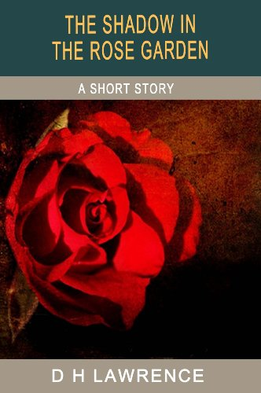

0
стр. з
0
сторінок

завантаження...

Дэвид Герберт Лоуренс
Тень в розовом саду и другие рассказы
Перевел Андрей Еремин
Метод чтения Ильи Франка
Сontents
THE SHADOW IN THE ROSE GARDEN
(тень в розовом саду).
A rather small young man sat by the window of a pretty seaside cottage (довольно невысокий молодой человек сидел у окна прелестного домика на берегу моря; rather — лучше, скорее; несколько, довольно; seaside — морской берег, побережье; cottage — небольшой сельский дом; загородный домик) trying to persuade himself that he was reading the newspaper (пытаясь убедить себя, что читает газету; news — новость, новости; известие; paper — бумага). It was about half-past eight in the morning (было около половины девятого утра: «около половины после восьми утром»). Outside, the glory roses hung in the morning sunshine (за окном розы /сорта/ глори поникли в утреннем свете солнца; outside — снаружи; на улице, вне дома; glory — слава; триумф; великолепие; процветание; to hang — вешать; висеть; болтаться) like little bowls of fire tipped up (словно склонившиеся маленькие чашечки огня; bowl — кубок, чаша; to tip up — наклонять/ся/; опрокидывать/ся/). The young man looked at the table (молодой человек посмотрел на стол), then at the clock (затем на часы /на столе/; clock — часы /настенные, настольные, башенные/), then at his own big silver watch (затем на свои собственные большие серебряные часы; watch — часы /карманные, наручные/). An expression of stiff endurance came on to his face (выражение твердой терпеливости появилось на его лице; stiff — жесткий, тугой; твердый, решительный; упорный; endurance — выносливость; терпеливость, долготерпение). Then he rose and reflected on the oil-paintings (потом он встал и /принялся/ задумчиво разглядывать написанные маслом картины; to rise — вставать, пониматься; to reflect — отражать/ся/; размышлять, раздумывать /над чем-л./; oil-painting — картина, написанная масляными красками; oil — масло; масляная краска; painting — живопись; картина; to paint — рисовать, писать /красками/) that hung on the walls of the room (что висели на стенах комнаты), giving careful but hostile attention to "The Stag at Bay" (уделяя особое, но неприязненное внимание «Загнанному оленю»; careful — заботливый, внимательный; старательный, тщательный; hostile — вражеский; враждебный; неприязненный, недружелюбный; stag — взрослый олень-самец; bay — бухта, залив; положение загнанного зверя). He tried the lid of the piano, and found it locked (он попробовал /поднять/ крышку пианино и обнаружил, что оно заперто: «обнаружил его запертым»; to try — пытаться, стараться; пробовать; to find — находить, обнаруживать; to lock — запирать/ся/ на замок).
persuade [pq`sweId], newspaper [`njHs,peIpq], half-past [hRf pRst], endurance [In`djV(q)rqns], hostile [`hPstaIl; `hPstql]
A rather small young man sat by the window of a pretty seaside cottage trying to persuade himself that he was reading the newspaper. It was about half-past eight in the morning. Outside, the glory roses hung in the morning sunshine like little bowls of fire tipped up. The young man looked at the table, then at the clock, then at his own big silver watch. An expression of stiff endurance came on to his face. Then he rose and reflected on the oil-paintings that hung on the walls of the room, giving careful but hostile attention to "The Stag at Bay". He tried the lid of the piano, and found it locked.
He caught sight of his own face in a little mirror (он заметил собственное лицо в маленьком зеркальце; to catch sight of smth. — увидеть что-л. /на мгновение/; to catch — ловить, поймать; уловить, увидеть /мельком/; sight — зрение; вид; /беглый/ взгляд), pulled his brown moustache (подергал каштановые усы; to pull — тянуть, тащить; дергать; brown — коричневый; бурый), and an alert interest sprang into his eyes (и живой интерес вспыхнул в его глазах; alert — бдительный, настороженный; живой, проворный; to spring — вытекать; бить ключом; приливать, бросаться). He was not ill-favoured (он не был некрасив = он был недурен; ill — плохой, дурной; плохо, дурно; -favoured — имеющий такую-то внешность; favour — благосклонность; /уст./ внешность). He twisted his moustache (он покрутил ус; to twist — крутить, скручивать). His figure was rather small, but alert and vigorous (его фигура была довольно небольшой, но проворной и крепкой; vigorous — сильный; бодрый; энергичный). As he turned from the mirror a look of self-commiseration (когда он отвернулся от зеркала, на лице его выражение жалости к себе: «самосострадания»; to turn — поворачивать/ся/; look — взгляд; вид, выражение лица) mingled with his appreciation of his own physiognomy (смешалось с гордостью за собственную физиономию; appreciation — /высокая/ оценка; оценка по достоинству; physiognomy — физиогномика; физиономия, лицо).
In a state of self-suppression, he went through into the garden (в состоянии самоподавления = в подавленном настроении он вышел в сад; through — сквозь, через). His jacket, however, did not look dejected (его пиджак, однако, не выглядел удручающе; jacket — куртка; пиджак; dejected — грустный, печальный; подавленный). It was new, and had a smart and self-confident air (он был новый и имел подтянутый и самоуверенный вид; smart — опрятный; молодцеватый; нарядный; модный), sitting upon a confident body (сидя на уверенном теле). He contemplated the Tree of Heaven that flourished by the lawn (он внимательно осмотрел айлант: «дерево неба/небес», который буйно разросся около лужайки; to contemplate — созерцать, пристально рассматривать; размышлять; to flourish — цвести; пышно расти, разрастаться; lawn — лужайка с подстриженной травой, газон), then sauntered on to the next plant (затем не спеша пошел /дальше,/ к следующему растению; to saunter — прогуливаться; двигаться медленно, неспешно; on — указывает на продолжение действия; указывает на продвижение вперед во времени или пространстве).
caught [kLt], moustache [mq`stRS], vigorous [`vIg(q)rqs], physiognomy [,fIzI`PnqmI], flourished [`flArISt], sauntered [`sLntqd]
He caught sight of his own face in a little mirror, pulled his brown moustache, and an alert interest sprang into his eyes. He was not ill-favoured. He twisted his moustache. His figure was rather small, but alert and vigorous. As he turned from the mirror a look of self-commiseration mingled with his appreciation of his own physiognomy.
In a state of self-suppression, he went through into the garden. His jacket, however, did not look dejected. It was new, and had a smart and self-confident air, sitting upon a confident body. He contemplated the Tree of Heaven that flourished by the lawn, then sauntered on to the next plant.
There was more promise in a crooked apple tree covered with brown-red fruit (было больше перспективы в кривой яблоне, покрытой = более многообещающе выглядела кривая яблоня, покрытая красно-бурыми плодами; promise — обещание; перспектива, надежда; to crook — сгибать/ся/; искривлять/ся/). Glancing round, he broke off an apple (оглядевшись по сторонам, он сорвал яблоко; to glance — бросить взгляд, мельком взглянуть; round — вокруг, кругом; to break off — отламывать) and, with his back to the house, took a clean, sharp bite (и, /повернувшись/ спиной к дому, сделал быстрый, решительный укус; clean — чистый; ловкий; хорошо выполненный; sharp — острый; резкий; быстрый, энергичный). To his surprise the fruit was sweet (к его удивлению, фрукт был сладок). He took another (он сделал еще один /укус/). Then again he turned to survey the bedroom windows overlooking the garden (потом он снова повернулся, чтобы осмотреть окна спальни, выходившие в сад; to survey — обозревать, осматривать; to overlook — обозревать; выходить на или в). He started, seeing a woman's figure (он вздрогнул, увидев женскую фигуру; to start — начинать/ся/; вздрагивать); but it was only his wife (но это была только его жена). She was gazing across to the sea, apparently ignorant of him (она пристально смотрела в море, по-видимому, не замечая его; to gaze — пристально глядеть, вглядываться; across — поперек; на ту сторону, через; apparently — очевидно; вероятно; ignorant — невежественный; не знающий /о чем-л./).
For a moment or two he looked at her, watching her (минуту или две он смотрел на нее, наблюдая за ней; moment — момент, миг, минута). She was a good-looking woman, who seemed older than he (это была миловидная: «хорошо выглядящая» женщина, которая казалась старше, чем он), rather pale, but healthy, her face yearning (довольно бледная, но здоровая, с исполненным томления лицом; to yearn — томиться, тосковать; жаждать, стремиться). Her rich auburn hair was heaped in folds on her forehead (ее густые золотисто-каштановые волосы локонами ниспадали на лоб; rich — богатый; роскошный; густой, обильный; to heap — нагромождать, собирать/ся/ в кучу; heap — груда, куча; масса; fold — складка, сгиб; виток, кольцо /веревки, змеи/).
promise [`prPmIs], crooked [`krVkId], covered [`kAvqd], forehead [`fPrId; `fLhed]
There was more promise in a crooked apple tree covered with brown-red fruit. Glancing round, he broke off an apple and, with his back to the house, took a clean, sharp bite. To his surprise the fruit was sweet. He took another. Then again he turned to survey the bedroom windows overlooking the garden. He started, seeing a woman's figure; but it was only his wife. She was gazing across to the sea, apparently ignorant of him.
For a moment or two he looked at her, watching her. She was a good-looking woman, who seemed older than he, rather pale, but healthy, her face yearning. Her rich auburn hair was heaped in folds on her forehead.
She looked apart from him and his world, gazing away to the sea (она казалась отделенной от него и его мира, вглядываясь вдаль, в море; apart — обособленно, в стороне). It irked her husband that she should continue abstracted and in ignorance of him (ее мужа раздражало, что она продолжала пребывать в своих мыслях и не замечать его; to irk — раздражать, надоедать; abstracted — погруженный в свои мысли; to abstract — абстрагировать/ся/; ignorance — неведение, незнание); he pulled poppy fruits and threw them at the window (он сорвал маковых коробочек и бросил их в окно; to pull — тянуть, тащить; рвать, срывать /цветы, фрукты/; poppy — мак; to throw — бросать, кидать). She started, glanced at him with a wild smile (она вздрогнула, взглянула на него с дикой улыбкой; wild — дикий; бурный, необузданный), and looked away again (и вновь отвела взор). Then almost immediately she left the window (затем почти тотчас же она отошла от окна; immediately — немедленно, тотчас; to leave — покидать, уезжать). He went indoors to meet her (он вошел в дом, чтобы встретить ее; indoors — внутри дома, в помещении; door — дверь; to meet — встречать/ся/). She had a fine carriage, very proud (у нее была прекрасная осанка, очень гордая; fine — прекрасный, превосходный; изящный; carriage — осанка; манера держаться; to carry — нести, носить; держаться, иметь какую-л. осанку), and wore a dress of soft white muslin (одета она была в платье из мягкого белого муслина; to wear — быть одетым /во что-л./; носить /одежду и т.д./).
"I've been waiting long enough," he said (я достаточно долго жду, — сказал он).
"For me or for breakfast?" she said lightly (меня или завтрака? — весело спросила она; lightly — слегка; легко; весело, беспечно; light — легкий; несерьезный; веселый). "You know we said nine o'clock (ты же знаешь, мы сказали /подать завтрак в/ девять часов; o'clock /сокр. от of the clock/ — по часам, на часах). I should have thought you could have slept after the journey (я думала, ты мог бы и поспать после путешествия; to think — думать, полагать; to sleep — спать)."
husband [`hAzbqnd], ignorance [`Ignqrqns], fruits [frHts], muslin [`mAzlIn], journey [`GE:nI]
She looked apart from him and his world, gazing away to the sea. It irked her husband that she should continue abstracted and in ignorance of him; he pulled poppy fruits and threw them at the window. She started, glanced at him with a wild smile, and looked away again. Then almost immediately she left the window. He went indoors to meet her. She had a fine carriage, very proud, and wore a dress of soft white muslin.
"I've been waiting long enough," he said.
"For me or for breakfast?" she said lightly. "You know we said nine o'clock. I should have thought you could have slept after the journey."
"You know I'm always up at five (ты же знаешь, я всегда встаю в пять; to be up — вставать, просыпаться), and I couldn't stop in bed after six (и не могу оставаться в постели после шести). You might as well be in pit as in bed, on a morning like this (ты можешь с тем же успехом быть в шахте, как в постели, в утро, подобное этому = лежать в постели в такое утро — все равно что сидеть в шахте; as well — так же; с тем же успехом; pit — яма; шахта; рудник)."
"I shouldn't have thought the pit would occur to you, here (вот уж не думала, что тебе вспомнится шахта здесь; to occur — случаться, происходить; приходить на ум, в голову)."
She moved about examining the room, looking at the ornaments under glass covers (она ходила по комнате, осматривая ее, глядя на украшения под стеклянными колпаками; to move — двигать/ся/; to examine — рассматривать; осматривать; glass — стекло; cover — крышка; колпак, футляр). He, planted on the hearthrug (он, неподвижно стоя на коврике перед камином; to plant — сажать, сеять; /прочно/ ставить, устанавливать; hearth — очаг; каменная плита под очагом; rug — ковер, коврик), watched her rather uneasily, and grudgingly indulgent (наблюдал за ней довольно тревожно и неохотно снисходительный = и с неохотной снисходительностью; uneasily — беспокойно, тревожно; easily — легко, свободно; easy — легкий; спокойный). She shrugged her shoulders at the apartment (она пожала плечами /, осмотрев/ комнату).
"Come," she said, taking his arm (идем, — сказала она, беря его руку; arm — рука /от кисти до плеча/), "let us go into the garden till Mrs. Coates brings the tray (выйдем в сад, пока миссис Коутс не принесет поднос; to let — впускать; позволять, разрешать; let us — давай/те/; Mrs. = mistress — миссис, госпожа /обращение к замужней женщине/)."
know [nqV], couldn't [kVdnt], occur [q`kE:], hearthrug [`hRTrAg], apartment [q`pRtmqnt]
"You know I'm always up at five, and I couldn't stop in bed after six. You might as well be in pit as in bed, on a morning like this."
"I shouldn't have thought the pit would occur to you, here."
She moved about examining the room, looking at the ornaments under glass covers. He, planted on the hearthrug, watched her rather uneasily, and grudgingly indulgent. She shrugged her shoulders at the apartment.
"Come," she said, taking his arm, "let us go into the garden till Mrs. Coates brings the tray."
"I hope she'll be quick," he said, pulling his moustache (надеюсь, она поторопится, — сказал он, дергая ус; quick — быстрый, скорый; проворный). She gave a short laugh, and leaned on his arm as they went (она издала короткий смех = коротко рассмеялась и оперлась на его руку, когда они выходили; to give — давать; издавать, испускать /звук/; to give a laugh — рассмеяться; to lean — наклонять/ся/; опирать/ся/). He had lighted a pipe (он закурил трубку; to light — зажигать; зажигаться, загораться).
Mrs. Coates entered the room as they went down the steps (миссис Коутс вошла в комнату, когда они спустились по лестнице; step — шаг; ступень/ка/). The delightful, erect old lady hastened to the window for a good view of her visitors (очаровательная старая дама с прямой /осанкой/ поспешила к окну, чтобы хорошенько рассмотреть гостей; delightful — восхитительный, очаровательный; erect — прямой; view — вид; поле зрения, видимость; visitor — посетитель; гость). Her china-blue eyes were bright (ее васильковые глаза были ярки; china-blue — китайский синий /краситель для тканей/; ярко-голубой цвет с зеленоватым оттенком; blue — синий или голубой цвет) as she watched the young couple go down the path (когда она наблюдала, как молодая пара идет по дорожке; path — тропинка, тропа; дорожка), he walking in an easy, confident fashion, with his wife, on his arm (он шел легко и уверенно, поддерживая под руку жену: «с женой на руке»; fashion — манера поведения, образ действия). The landlady began talking to herself in a soft, Yorkshire accent (хозяйка начала говорить сама с собой с мягким йоркширским акцентом; to begin — начинать/ся/; landlady — домовладелица, сдающая дом, квартиру или земельный участок; хозяйка гостиницы, пансиона и т.д.).
"Just of a height they are (как раз одного роста они; just — как раз, точно; height — высота, вышина; рост). She wouldn't ha' married a man less than herself in stature, I think (думаю, она бы не вышла за мужчину, /который/ меньше ее самой по росту; ha' /диал./ = have), though he's not her equal otherwise (хотя он не ровня ей во всём остальном; equal — равный, ровня; otherwise — иначе; в других отношениях)."
laugh [lRf], hastened [`heIs(q)nd], walking [`wLkIN], height [haIt], stature [`stxCq], though [DqV], equal [`Jkwql]
"I hope she'll be quick," he said, pulling his moustache. She gave a short laugh, and leaned on his arm as they went. He had lighted a pipe.
Mrs. Coates entered the room as they went down the steps. The delightful, erect old lady hastened to the window for a good view of her visitors. Her china-blue eyes were bright as she watched the young couple go down the path, he walking in an easy, confident fashion, with his wife, on his arm. The landlady began talking to herself in a soft, Yorkshire accent.
"Just of a height they are. She wouldn't ha' married a man less than herself in stature, I think, though he's not her equal otherwise."
Here her granddaughter came in, setting a tray on the table (тут вошла ее внучка, поставив поднос на стол; to set — ставить, класть). The girl went to the old woman's side (девочка подошла к старухе: «старой женщине»; side — сторона; бок /туловища/; место рядом).
"He's been eating the apples, gran'," she said (он ел яблоки, ба, — сказала она; he's = he has; gran' /разг./ = grandmother — бабушка).
"Has he, my pet (неужели, моя лапушка; pet — любимое домашнее животное; баловень, любимец; /разг./ лапочка, лапушка)? Well, if he's happy, why not (что ж, если он счастлив, почему нет)?"
Outside, the young, well-favoured man listened with impatience to the chink of the teacups (снаружи молодой красивый человек прислушивался с нетерпением к звяканью чашек; to listen — слушать; прислушиваться; patience — терпение, терпеливость; tea — чай; cup — чашка). At last, with a sigh of relief (наконец, со вздохом облегчения), the couple came in to breakfast (пара вошла /в дом/ завтракать). After he had eaten for some time, he rested a moment and said (после того, как он поел некоторое время = поев некоторое время, он отдохнул с минуту и сказал):
"Do you think it's any better place than Bridlington (ты думаешь, это место хоть чем-то лучше, чем Бридлингтон)?"
granddaughter [`grxn,dLtq], listened [`lIs(q)nd], sigh [saI], breakfast [`brekfqst]
Here her granddaughter came in, setting a tray on the table. The girl went to the old woman's side.
"He's been eating the apples, gran'," she said.
"Has he, my pet? Well, if he's happy, why not?"
Outside, the young, well-favoured man listened with impatience to the chink of the teacups. At last, with a sigh of relief, the couple came in to breakfast. After he had eaten for some time, he rested a moment and said:
"Do you think it's any better place than Bridlington?"
"I do," she said, "infinitely (да, — ответила она, — неизмеримо; infinitely — бесконечно, безгранично; крайне)! Besides, I am at home here — it's not like a strange sea-side place to me (кроме того, здесь я дома — для меня это не какая-то незнакомая деревушка на берегу моря; strange — незнакомый; чужой; странный; place — место; город, местечко, селение)."
"How long were you here (как долго ты пробыла здесь)?"
"Two years (два года)."
He ate reflectively (он ел задумчиво).
"I should ha' thought you'd rather go to a fresh place," he said at length (мне думалось, ты скорее предпочтешь поехать в какое-нибудь новое место, — сказал он наконец; you'd = you would; rather — лучше, скорее; охотнее, предпочтительнее; fresh — свежий; новый, незнакомый; length — длина; протяженность; длительность; at length — детально; наконец).
She sat very silent (он сидела очень безмолвная = совершенно безмолвно; silent — молчаливый; безмолвный), and then, delicately, put out a feeler (а потом осторожно пустила пробный шар; delicately — тонко; нежно; деликатно, тактично; to put out a feeler — зондировать почву, закидывать удочку, пускать пробный шар; to put out — вытягивать, высовывать; выпускать /побеги/; feeler — /зоол./ щупальце, усик; пробный шар, зондирование почвы; /тех./ щуп; to feel — трогать; щупать, осязать).
"Why (почему)?" she said. "Do you think I shan't enjoy myself (ты думаешь, я не смогу хорошо провести время; shan't = shall not; to enjoy — любить /что-л./, получать удовольствие /от чего-л./; наслаждаться; to enjoy oneself — весело проводить время; joy — радость; веселье)?"
infinitely [`InfInItlI], ate [et; eIt], reflectively [rI`flektIvlI], length [leNT], delicately [`delIkItlI]
"I do," she said, "infinitely! Besides, I am at home here — it's not like a strange sea-side place to me."
"How long were you here?"
"Two years."
He ate reflectively.
"I should ha' thought you'd rather go to a fresh place," he said at length.
She sat very silent, and then, delicately, put out a feeler.
"Why?" she said. "Do you think I shan't enjoy myself?"
He laughed comfortably, putting the marmalade thick on his bread (он спокойно засмеялся, толстым слоем намазывая апельсиновый джем на хлеб; comfortably — удобно, уютно; расслабленно, спокойно; to put — класть; накладывать; marmalade — джем, конфитюр /особ. апельсиновый или лимонный/; thick — толсто, толстым слоем; густо).
"I hope so," he said (надеюсь, что так, — ответил он).
She again took no notice of him (она снова не обратила на него внимания; to take — брать; обращать /внимание/; notice — извещение; внимание).
"But don't say anything about it in the village, Frank," she said casually (но ничего не говори об этом в деревне, Фрэнк, — мимоходом заметила она; casually — случайно; мимоходом). "Don't say who I am, or that I used to live here (не говори, кто я или что я прежде жила здесь; used to — иметь обыкновение, привычку делать что-л. в прошлом; to use — использовать, применять; use — использование; обыкновение, привычка). There's nobody I want to meet, particularly (я ни с кем конкретно не хочу увидеться; to meet — встречать/ся/; видеться; particularly — очень; в особенности; в частности, в отдельности), and we should never feel free if they knew me again (и мы никогда не будем чувствовать себя свободно, если меня снова узнают; never — никогда; ни разу; /эмоц.-усил./ нисколько, никоим образом; to feel free — чувствовать себя как дома; чувствовать себя свободно, не стесняться /делать что-л./; to feel — трогать; чувствовать, ощущать; free — свободный, вольный; непринужденный; to know — знать; быть знакомым /с кем-л./; узнавать)."
"Why did you come, then (тогда зачем ты приехала)?"
"'Why?' Can't you understand why (зачем? разве ты не можешь понять, зачем)?"
comfortably [`kAmf(q)tqblI], notice [`nqVtIs], village [`vIlIG], casually [`kxZVqlI], used to [`jHst tH]
He laughed comfortably, putting the marmalade thick on his bread.
"I hope so," he said.
She again took no notice of him.
"But don't say anything about it in the village, Frank," she said casually. "Don't say who I am, or that I used to live here. There's nobody I want to meet, particularly, and we should never feel free if they knew me again."
"Why did you come, then?"
"'Why?' Can't you understand why?"
"Not if you don't want to know anybody (нет, если ты не хочешь никого знать)."
"I came to see the place, not the people (я приехала повидать место, а не людей)."
He did not say any more (он ничего больше не сказал).
"Women," she said, "are different from men (женщины, — сказала она, — отличаются от мужчин; different — непохожий, отличный). I don't know why I wanted to come — but I did (я не знаю, почему захотела приехать… но приехала)."
She helped him to another cup of coffee, solicitously (она заботливо налила ему еще одну чашку кофе; to help — помогать; обслуживать /за столом/; угощать кого-л. чем-л.; solicitous — заботливый, внимательный).
"Only," she resumed, "don't talk about me in the village (только, — продолжала она, — не говори обо мне в деревне; to resume — возобновлять, продолжать)." She laughed shakily (она засмеялась неуверенно; shaky — шаткий, нетвердый; трясущийся, дрожащий; to shake — трясти/сь/; дрожать). "I don't want my past brought up against me, you know (не хочу, чтобы ворошили мое прошлое, знаешь ли; to bring up — поднимать /вопрос/; заводить /разговор/; to bring up against — учитывать или использовать что-л. против кого-л.)." And she moved the crumbs on the cloth with her finger-tip (и она /принялась/ двигать крошки по скатерти кончиком пальца; cloth — ткань; скатерть; tip — тонкий конец; верхушка; кончик /пальца, ножа, языка/).
women [`wImIn], said [sed], different [`dIf(q)rqnt], solicitously [sq`lIsItqslI], crumbs [krAmz]
"Not if you don't want to know anybody."
"I came to see the place, not the people."
He did not say any more.
"Women," she said, "are different from men. I don't know why I wanted to come — but I did."
She helped him to another cup of coffee, solicitously.
"Only," she resumed, "don't talk about me in the village." She laughed shakily. "I don't want my past brought up against me, you know." And she moved the crumbs on the cloth with her finger-tip.
He looked at her as he drank his coffee (он посмотрел на нее, когда пил кофе; to drink); he sucked his moustache, and putting down his cup, said phlegmatically (он обсосал усы и, ставя чашку, сказал флегматично):
"I'll bet you've had a lot of past (бьюсь об заклад, у тебя было богатое прошлое: «было много прошлого»; bet — пари; to bet — держать пари, биться об заклад; быть уверенным)."
She looked with a little guiltiness, that flattered him, down at the tablecloth (она смотрела с небольшой виноватостью, которая ему льстила, на скатерть; guiltiness — виновность; guilt — вина).
"Well," she said, caressive (ну, — сказала она ласково; caressive — нежный, ласковый; to caress — ласкать; caress — ласка), "you won't give me away, who I am, will you (так ты меня не выдашь, /не скажешь, / кто я, правда; won't = will not; to give away — выдавать /секрет, кого-л./; проговориться)?"
"No," he said, comforting, laughing (нет, — сказал он, успокаивая /ее/ и смеясь; to comfort — утешать, успокаивать), "I won't give you away (я тебя не выдам)."
He was pleased (он был доволен; to please — радовать, доставлять удовольствие; получать удовольствие).
She remained silent (она оставалась молчаливой = хранила молчание; to remain — оставаться; оставаться в каком-л. состоянии). After a moment or two she lifted her head, saying (через минуту-две она подняла голову, сказав):
"I've got to arrange with Mrs. Coates, and do various things (мне нужно договориться с миссис Коутс и сделать разные дела; to arrange — приводить в порядок; устраивать; договариваться; thing — вещь, предмет; дело). So you'd better go out by yourself this morning — and we'll be in to dinner at one (так что тебе лучше пойти гулять одному этим утром = сегодня утром — и мы соберемся обедать в час; to go out — выходить /из помещения/; отправиться /в путешествие/; by oneself — самостоятельно; в одиночестве; to be in — быть дома, на месте)."
guiltiness [`gIltInIs], caressive [kq`resIv], comforting [`kAmfqtIN], various [`ve(q)rIqs]
He looked at her as he drank his coffee; he sucked his moustache, and putting down his cup, said phlegmatically:
"I'll bet you've had a lot of past."
She looked with a little guiltiness, that flattered him, down at the tablecloth.
"Well," she said, caressive, "you won't give me away, who I am, will you?"
"No," he said, comforting, laughing, "I won't give you away."
He was pleased.
She remained silent. After a moment or two she lifted her head, saying:
"I've got to arrange with Mrs. Coates, and do various things. So you'd better go out by yourself this morning — and we'll be in to dinner at one."
"But you can't be arranging with Mrs. Coates all morning (но ты не можешь договариваться с миссис Коутс всё утро)," he said.
"Oh, well — then I've some letters to write (ну хорошо… потом мне надо написать письма), and I must get that mark out of my skirt (и я должна вывести то пятно с юбки; mark — знак; метка; след, отпечаток). I've got plenty of little things to do this morning (мне нужно сделать множество мелких дел сегодня утром; plenty — изобилие; множество). You'd better go out by yourself (тебе лучше пойти одному)."
He perceived that she wanted to be rid of him (он понял, что она хочет избавиться от него; to perceive — понимать, осознавать; to rid — освобождать, избавлять; to be rid of — быть избавленным от /кого-л., чего-л./), so that when she went upstairs, he took his hat (поэтому, когда она поднялась наверх, он взял шляпу; upstairs — вверх /по лестнице/; stair — ступенька /лестницы/; stairs — лестница) and lounged out on to the cliffs, suppressedly angry (и /, выйдя,/ неспешно побрел к утесам, сдерживая злость: «подавленно сердитый»; to lounge — сидеть развалившись /в кресле, на диване/; бездельничать, слоняться; to suppress — сдерживать, подавлять; angry — сердитый, гневный; раздраженный).
Presently she too came out (вскоре она тоже вышла). She wore a hat with roses (на ней была шляпа с розами), and a long lace scarf hung over her white dress (и длинный кружевной шарф, наброшенный на белое платье; lace — шнурок; кружево). Rather nervously, she put up her sunshade (довольно нервно она раскрыла зонтик от солнца; to put up — поднимать; раскрывать /зонт/; sun — солнце; shade — тень), and her face was half-hidden in its coloured shadow (и ее лицо наполовину скрылось в цветной тени; to hide — прятать/ся/; скрывать/ся/; coloured — окрашенный; цветной; to colour — окрашивать; colour — цвет; оттенок).
write [raIt], perceived [pq`sJvd], lounged [laVnGd], presently [`prez(q)ntlI],
"But you can't be arranging with Mrs. Coates all morning," he said.
"Oh, well — then I've some letters to write, and I must get that mark out of my skirt. I've got plenty of little things to do this morning. You'd better go out by yourself."
He perceived that she wanted to be rid of him, so that when she went upstairs, he took his hat and lounged out on to the cliffs, suppressedly angry.
Presently she too came out. She wore a hat with roses, and a long lace scarf hung over her white dress. Rather nervously, she put up her sunshade, and her face was half-hidden in its coloured shadow.
She went along the narrow track of flag-stones (она пошла по узкой дорожке, /выложенной/ каменными плитами; along — дальше, вперед; вдоль; track — след; путь; проселочная дорога; тропинка, тропа; flag-stone — камень-плитняк; flag — каменная плита; плитняк; stone — камень) that were worn hollow by the feet of the fishermen (на которых были выбоины, оставленные ногами рыбаков; to wear — носить; изнашивать/ся/; протирать/ся/; hollow — пустой, полый; впалый, вогнутый; foot — ступня; fish — рыба; to fish — ловить рыбу; man — человек, мужчина; представитель какой-л. профессии). She seemed to be avoiding her surroundings (казалось, она избегает/сторонится окружающего мира; surroundings — окрестности; среда, окружение; to surround — окружать), as if she remained safe in the little obscurity of her parasol (словно оставаясь в безопасности в небольшой тени своего зонтика; obscurity — темнота, мрак; parasol — зонтик /от солнца/).
She passed the church, and went down the lane till she came to a high wall by the wayside (она миновала церковь и пошла по дорожке, пока не дошла до высокой стены у обочины; to pass — идти; проходить; миновать; lane — узкая дорожка, тропинка /обычно между живыми изгородями/; wayside — придорожная полоса; обочина; way — путь; дорога; side — сторона; край). Under this she went slowly, stopping at length by an open doorway (под ней = вдоль нее она пошла медленно, остановившись в конце концов у открытой калитки; doorway — дверной проем), which shone like a picture of light in the dark wall (/проём/ которой сиял, словно само воплощение света, в темной стене; to shine — светиться, сиять; picture — картина; изображение; воплощение, олицетворение). There in the magic beyond the doorway, patterns of shadow lay on the sunny court (там, в волшебном мире за калиткой, узоры из теней лежали на залитом солнцем дворе; magic — магия, волшебство; beyond — вне, за пределами; вдали; pattern — образец, пример; рисунок, узор; to lie — лежать; располагаться; sunny — солнечный; освещенный солнцем), on the blue and white sea-pebbles of its paving (на синей и белой морской гальке, покрывавшей его; pebble — галька, голыш; paving — мощение улиц; мостовая; дорожное покрытие), while a green lawn glowed beyond, where a bay tree glittered at the edges (тогда как за ним пылала зеленая лужайка, где лавровое дерево сверкало по краям; while — пока, в то время как; тогда как; to glow — светиться; сверкать; to glitter — блестеть, сверкать).
surroundings [sq`raVndINz], obscurity [qb`skjV(q)rItI], picture [`pIkCq], court [kLt]
She went along the narrow track of flag-stones that were worn hollow by the feet of the fishermen. She seemed to be avoiding her surroundings, as if she remained safe in the little obscurity of her parasol.
She passed the church, and went down the lane till she came to a high wall by the wayside. Under this she went slowly, stopping at length by an open doorway, which shone like a picture of light in the dark wall. There in the magic beyond the doorway, patterns of shadow lay on the sunny court, on the blue and white sea-pebbles of its paving, while a green lawn glowed beyond, where a bay tree glittered at the edges.
She tiptoed nervously into the courtyard (на цыпочках, нервно она вошла во двор; to tiptoe — ходить на цыпочках; toe — палец ноги; courtyard — внутренний двор), glancing at the house that stood in shadow (поглядывая на дом, что стоял в тени; to stand). The uncurtained windows looked black and soulless (незанавешенные окна казались черными и бездушными; to curtain — занавешивать; curtain — занавеска, штора; портьера; soul — душа), the kitchen door stood open (дверь в кухню стояла открытая). Irresolutely she took a step forward (нерешительно она сделала шаг вперед), and again forward, leaning, yearning, towards the garden beyond (и снова вперед, наклоняясь /вперед/, стремясь к саду за /домом/; to lean — наклонять/ся/; склоняться).
She had almost gained the corner of the house (она почти добралась до угла дома; to gain — получать; добывать; достигать, добираться) when a heavy step came crunching through the trees (когда звук тяжелых шагов прошел, хрустя, через деревья = из-за деревьев послышался хруст под чьими-то тяжелыми шагами; to crunch — грызть с хрустом; скрипеть, хрустеть /под колесами, ногами/). A gardener appeared before her (садовник возник перед ней). He held a wicker tray on which were rolling great, dark red gooseberries, overripe (он держал плетеный поднос, по которому перекатывались огромные, темно-красные, перезрелые ягоды крыжовника; wicker — прутья для плетения; плетеное изделие; to roll — катить/ся/; катать/ся/; gooseberry — крыжовник /куст, ягода/; goose — гусь; berry — ягода; ripe — зрелый, спелый). He moved slowly (он двигался медленно).
"The garden isn't open today (сад сегодня не открыт)," he said quietly to the attractive woman, who was poised for retreat (тихо сказал он привлекательной женщине, которая была готова к отступлению; to poise — удерживать/ся/ в равновесии; быть готовым к действию).
For a moment she was silent with surprise (на мгновение она замолчала от удивления). How should it be public at all (как вообще он мог быть открыт для посещений; public — общественный; общедоступный, публичный)?
nervously [`nE:vqslI], uncurtained [,An`kE:tnd], gardener [`gRdnq], moved [mHvd]
She tiptoed nervously into the courtyard, glancing at the house that stood in shadow. The uncurtained windows looked black and soulless, the kitchen door stood open. Irresolutely she took a step forward, and again forward, leaning, yearning, towards the garden beyond.
She had almost gained the corner of the house when a heavy step came crunching through the trees. A gardener appeared before her. He held a wicker tray on which were rolling great, dark red gooseberries, overripe. He moved slowly.
"The garden isn't open today," he said quietly to the attractive woman, who was poised for retreat.
For a moment she was silent with surprise. How should it be public at all?
"When is it open?" she asked, quick-witted (когда он открыт? — спросила она, быстро сообразив; quick-witted — находчивый, сообразительный: «имеющий быстрый ум»; wit — ум, разум).
"The rector lets visitors in on Fridays and Tuesdays (пастор пускает посетителей по пятницам и вторникам; rector — приходской священник, пастор /в англиканской церкви/; to let — впускать; пропускать)."
She stood still, reflecting (она стояла неподвижно, размышляя; still — неподвижный, спокойный). How strange to think of the rector opening his garden to the public (как странно думать о том, что пастор открывает свой сад для публики)!
"But everybody will be at church," she said coaxingly to the man (но все будут в церкви, — сказала она, пытаясь уговорить садовника; everybody — каждый, всякий /человек/; все; to coax — уговаривать, упрашивать; добиваться чего-л. с помощью уговоров, лести). "There'll be nobody here, will there (здесь никого не будет, не правда ли)?"
He moved, and the big gooseberries rolled (он пошевелился, и большие ягоды покатились).
"The rector lives at the new rectory (пастор живет в новом доме; rectory — дом приходского священника, пастора)," he said.
The two stood still (оба стояли неподвижно). He did not like to ask her to go (ему не хотелось просить ее уйти; to ask — спрашивать; просить; to go — идти, ходить; уходить, уезжать). At last she turned to him with a winning smile (наконец она повернулась к нему с обворожительной улыбкой; winning — побеждающий, выигрывающий; обаятельный, обворожительный; to win — выиграть; победить; убедить).
asked [Rskt], quick-witted [,kwIk`wItId], Tuesdays [`tjHzdIz], rectory [`rekt(q)rI]
"When is it open?" she asked, quick-witted.
"The rector lets visitors in on Fridays and Tuesdays."
She stood still, reflecting. How strange to think of the rector opening his garden to the public!
"But everybody will be at church," she said coaxingly to the man. "There'll be nobody here, will there?"
He moved, and the big gooseberries rolled.
"The rector lives at the new rectory," he said.
The two stood still. He did not like to ask her to go. At last she turned to him with a winning smile.
"Might I have one peep at the roses (могу я быстренько взглянуть на розы; peep — быстрый взгляд /часто украдкой/)?" she coaxed, with pretty wilfulness (уговаривала она с милым упрямством; wilful — своенравный; упрямый).
"I don't suppose it would matter," he said, moving aside (не думаю, что это будет иметь какое-то значение = думаю, ничего страшного не случится, — сказал он, отходя в сторону; to suppose — /пред/полагать, допускать; думать, считать; to matter — иметь значение): "you won't stop long — (долго вы не пробудете…; to stop — останавливать/ся/; /разг./ останавливаться /ненадолго/, гостить)"
She went forward, forgetting the gardener in a moment (она пошла вперед, в один миг забыв о садовнике). Her face became strained, her movements eager (ее лицо сделалось напряженным, ее движения — порывистыми; to become — делаться, становиться; strained — натянутый; напряженный; неестественный; to strain — натягивать/ся/; напрягать/ся/; eager — страстно желающий; нетерпеливый; энергичный, активный /о желании, жесте/). Glancing round, she saw all the windows giving on to the lawn were curtainless and dark (оглядевшись по сторонам, она увидела, что все окна, выходящие на лужайку, были без занавесок и темны; to give on to — /брит./ выходить на, в; curtainless — не имеющий занавесок). The house had a sterile appearance (у дома был заброшенный вид; sterile — бесплодный; стерильный; неживой, пресный /о лекции, произведении и т.д./; appearance — появление; внешний вид, наружность), as if it were still used, but not inhabited (словно им все еще пользовались, но не жили в нем; to inhabit — жить, обитать, населять). A shadow seemed to go over her (тень как будто нависла над ней). She went across the lawn towards the garden (она пересекла лужайку, направляясь к саду), through an arch of crimson ramblers, a gate of colour (/прошла/ через арку из вьющихся красных роз, цветные воротца: «ворота цвета»; crimson rambler — многоцветковая вьющаяся роза; crimson — малиновый, темно-красный /цвет/; to ramble — гулять, бродить; ползти, виться, разрастаться /о растении/; gate — ворота; калитка).
suppose [sq`pqVz], lawn [lLn], sterile [`steraIl; `sterql], inhabited [In`hxbItId], crimson [`krImz(q)n], colour [`kAlq]
"Might I have one peep at the roses?" she coaxed, with pretty wilfulness.
"I don't suppose it would matter," he said, moving aside: "you won't stop long —"
She went forward, forgetting the gardener in a moment. Her face became strained, her movements eager. Glancing round, she saw all the windows giving on to the lawn were curtainless and dark. The house had a sterile appearance, as if it were still used, but not inhabited. A shadow seemed to go over her. She went across the lawn towards the garden, through an arch of crimson ramblers, a gate of colour.
There beyond lay the soft blue sea with the bay, misty with morning (там, вдали, расстилалось спокойное голубое море с заливом, окутанным утренним туманом; soft — мягкий; нежный; тихий, спокойный; misty — туманный; mist — /легкий/ туман; дымка), and the farthest headland of black rock (и самый дальний мыс черной скалы = черный скалистый мыс; farthest — самый дальний, наиболее отдаленный; far — далекий, дальний; head — голова; верхушка; передняя, выступающая часть чего-л.; мыс /часто в названиях/; land — земля, суша) jutting dimly out between blue and blue of the sky and water (неясно врезался между синевой неба и синевой воды; to jut out — выдаваться, выступать; dimly — тускло; смутно, неясно; dim — тусклый; смутный, неясный). Her face began to shine, transfigured with pain and joy (ее лицо начало сиять = просияло, преображенное болью и радостью; to transfigure — видоизменять; преображать). At her feet the garden fell steeply, all a confusion of flowers (у ее ног сад круто спускался вниз, утопавших во всевозможных цветах: «весь смешение цветов»; to fall — падать; спускаться, идти под уклон /о местности/; steep — крутой; confusion — смущение; беспорядок; смешение; flower — цветок), and away below was the darkness of tree-tops covering the beck (а далеко внизу темнота верхушек деревьев скрывала ручеек; darkness — темнота, мрак; to cover — покрывать, закрывать; прикрывать, скрывать; beck — /брит./ ручеек).
She turned to the garden that shone with sunny flowers around her (она свернула к саду, который сиял залитыми солнцем цветами вокруг нее). She knew the little corner where was the seat beneath the yew tree (она знала маленький уголок, где была скамейка под тисом; seat — место /для сидения/; стул, скамья, кресло; yew — тис, тисовое дерево). Then there was the terrace where a great host of flowers shone (далее находилась терраса, где сверкало огромное множество цветов; then — потом, затем; далее; host — масса, множество, уйма), and from this, two paths went down, one at each side of the garden (и отсюда спускались вниз две тропинки, по одной с каждой стороны сада).
blue [blH], headland [`hedlqnd], transfigured [trxns`fIgqd], flowers [`flaVqz]
There beyond lay the soft blue sea with the bay, misty with morning, and the farthest headland of black rock jutting dimly out between blue and blue of the sky and water. Her face began to shine, transfigured with pain and joy. At her feet the garden fell steeply, all a confusion of flowers, and away below was the darkness of tree-tops covering the beck.
She turned to the garden that shone with sunny flowers around her. She knew the little corner where was the seat beneath the yew tree. Then there was the terrace where a great host of flowers shone, and from this, two paths went down, one at each side of the garden.
She closed her sunshade and walked slowly among the many flowers (она сложила зонтик и медленно пошла среди множества цветов; to close — закрывать/ся/). All round were rose bushes (повсюду были кусты роз; all round — повсюду, везде вокруг), big banks of roses (большие куртины роз; bank — вал, насыпь; гряда /облаков/), then roses hanging and tumbling from pillars (потом розы, свисавшие и ниспадавшие с опор; to tumble — упасть, свалиться, скатиться; pillar — столб, колонна; стойка, опора), or roses balanced on the standard bushes (или розы, покоившиеся на штамбовых кустах; to balance — сохранять равновесие, балансировать; standard — стандартный, типовой; штамбовый /имеющий только ствол, без разветвлений/). By the open earth were many other flowers (у открытой земли росло множество других цветов). If she lifted her head, the sea was upraised beyond, and the Cape (когда она поднимала голову, море уходило вверх /за садом/, как и мыс; to upraise — поднимать; возвышать).
Slowly she went down one path, lingering (не спеша она шла по одной тропинке, медля; to linger — задерживаться; медлить, мешкать), like one who has gone back into the past (подобно человеку, который вернулся в прошлое; one — один; человек; to go back — идти назад; возвращаться). Suddenly she was touching some heavy crimson roses that were soft as velvet (неожиданно она /стала/ трогать тяжелые темно-красные розы, /которые были/ мягкие, точно бархат; suddenly — вдруг, внезапно, неожиданно; sudden — внезапный, неожиданный), touching them thoughtfully, without knowing, as a mother sometimes fondles the hand of her child (трогала их задумчиво, не думая = безотчетно, как мать иногда ласкает ручку своего ребенка; thoughtful — задумчивый; thought — мысль; to fondle — ласкать, нежно поглаживать). She leaned slightly forward to catch the scent (она слегка наклонилась вперед, чтобы уловить их аромат).
among [q`mAN], bushes [`bVSIz], roses [`rqVzIz], touching [`tACIN], scent [sent]
She closed her sunshade and walked slowly among the many flowers. All round were rose bushes, big banks of roses, then roses hanging and tumbling from pillars, or roses balanced on the standard bushes. By the open earth were many other flowers. If she lifted her head, the sea was upraised beyond, and the Cape.
Slowly she went down one path, lingering, like one who has gone back into the past. Suddenly she was touching some heavy crimson roses that were soft as velvet, touching them thoughtfully, without knowing, as a mother sometimes fondles the hand of her child. She leaned slightly forward to catch the scent.
Then she wandered on in abstraction (потом она побрела дальше в задумчивости; to wander — бродить, блуждать; abstraction — абстракция; погруженность мысли, задумчивость). Sometimes a flame-coloured, scentless rose would hold her arrested (иногда какая-нибудь огненного цвета, не имеющая запаха роза заставляла ее остановиться; flame-colour — огненный цвет; красно-желтый или оранжевый; flame — огонь, пламя; to hold — держать; удерживать, задерживать; держать /в каком-л. положении/; to arrest — арестовывать; задерживать; приковывать /интерес, взгляд/). She stood gazing at it as if she could not understand it (она стояла и пристально глядела на розу, словно не могла ее понять). Again the same softness of intimacy came over her (снова то же нежное ощущение близости охватило ее; to come — приходить, приезжать; охватывать /о чувстве/; softness — мягкость; нежность; intimacy — близкое знакомство; тесная связь, близость), as she stood before a tumbling heap of pink petals (когда она стояла перед кучей опадающих розовых лепестков; heap — куча, груда; масса). Then she wondered over the white rose (потом она удивлялась белой розе), that was greenish, like ice, in the centre (которая была зеленоватая, будто лед, в середине). So, slowly, like a white, pathetic butterfly, she drifted down the path (так, медленно, словно белая трогательная бабочка, перемещалась она по тропинке; to drift — относить, гнать /ветром, течением/; перемещаться, сдвигаться /по ветру, течению/), coming at last to a tiny terrace all full of roses (выйдя наконец к крошечной террасе, полной роз). They seemed to fill the place, a sunny, gay throng (казалось, они заполняли это место, солнечная, веселая толпа; gay — веселый, беспечный; throng — толпа, скопление людей; куча, множество). She was shy of them, they were so many and so bright (она их дичилась, их было так много, они были так ярки; shy — застенчивый, стеснительный, робкий; /of/ боязливый, недоверчивый). They seemed to be conversing and laughing (они как будто разговаривали и смеялись). She felt herself in a strange crowd (она чувствовала себя /словно/ в незнакомой толпе). It exhilarated her, carried her out of herself (это ее развеселило, развеяло тягостные мысли: «вынесло ее из себя»; to exhilarate — веселить, радовать; оживлять, подбадривать; to carry — /пере/носить, /пере/возить; to carry /take/ smb. out of himself/herself — заставить позабыть о своих проблемах). She flushed with excitement (она раскраснелась от волнения; to flush — вспыхнуть, покраснеть; раскраснеться; приливать /о крови, краске/; flush — внезапный прилив /жидкости/; прилив, приток крови /к лицу/; краска, румянец; excitement — возбуждение, волнение; to excite — возбуждать, волновать). The air was pure scent (воздух был чистый аромат).
intimacy [`IntImqsI], wondered [`wAndqd], centre [`sentq], terrace [`terIs], crowd [kraVd]
Then she wandered on in abstraction. Sometimes a flame-coloured, scentless rose would hold her arrested. She stood gazing at it as if she could not understand it. Again the same softness of intimacy came over her, as she stood before a tumbling heap of pink petals. Then she wondered over the white rose, that was greenish, like ice, in the centre. So, slowly, like a white, pathetic butterfly, she drifted down the path, coming at last to a tiny terrace all full of roses. They seemed to fill the place, a sunny, gay throng. She was shy of them, they were so many and so bright. They seemed to be conversing and laughing. She felt herself in a strange crowd. It exhilarated her, carried her out of herself. She flushed with excitement. The air was pure scent.
Hastily, she went to a little seat among the white roses, and sat down (она торопливо подошла к маленькой скамейке среди белых роз и села). Her scarlet sunshade made a hard blot of colour (ее алый зонтик образовывал резкое пятно цвета = цветное пятно; to make — делать; образовывать, формировать; hard — жесткий, твердый; резкий; контрастный; blot — пятно; клякса). She sat quite still, feeling her own existence lapse (она сидела совершенно неподвижно, чувствуя, как постепенно исчезает ее собственная сущность; existence — существование; жизнь; сущность, существо; to lapse — отклоняться /от правильного пути, стандарта и т.д./; течь, проходить /о времени/; исчезать /постепенно, незаметно/). She was no more than a rose (она была не более, чем роза), a rose that could not quite come into blossom, but remained tense (роза, которая совсем не может расцвести: «войти в цвет», но остается напряженной; blossom — цвет, цветение; tense — натянутый; напряженный). A little fly dropped on her knee, on her white dress (маленькая мушка опустилась ей на колено, на белое платье; to drop — ронять, бросать; падать, опускаться). She watched it, as if it had fallen on a rose (она наблюдала за ней, словно та опустилась на розу). She was not herself (она не была самой собой).
Then she started cruelly as a shadow crossed her and a figure moved into her sight (тут она мучительно вздрогнула, когда тень скользнула по ней, и фигура возникла перед ее глазами: «двинулась в ее поле зрения»; cruelly — жестоко, безжалостно; мучительно; to cross — пересекать; sight — зрение; вид; поле зрения). It was a man who had come in slippers, unheard (это был человек, который неслышно подошел в домашних туфлях; slippers — комнатные туфли, тапочки; unheard — неслышный; неуслышанный; to hear — слышать). He wore a linen coat (на нем был полотняный пиджак; linen — льняной, полотняный). The morning was shattered, the spell vanished away (утро было разбито, чары рассеялись; to shatter — разбить/ся/ вдребезги, расколоть/ся/). She was only afraid of being questioned (она боялась только, что ее будут расспрашивать; to question — спрашивать, задавать вопросы). He came forward (он двинулся вперед). She rose (она встала). Then, seeing him, the strength went from her and she sank on the seat again (потом, когда она увидела его, силы покинули ее: «ушли от нее», и она снова опустилась на скамейку; to sink — тонуть; опускаться, падать).
existence [Ig`zIst(q)ns], knee [nJ], cruelly [`krHqlI], questioned [`kwesC(q)nd]
Hastily, she went to a little seat among the white roses, and sat down. Her scarlet sunshade made a hard blot of colour. She sat quite still, feeling her own existence lapse. She was no more than a rose, a rose that could not quite come into blossom, but remained tense. A little fly dropped on her knee, on her white dress. She watched it, as if it had fallen on a rose. She was not herself.
Then she started cruelly as a shadow crossed her and a figure moved into her sight. It was a man who had come in slippers, unheard. He wore a linen coat. The morning was shattered, the spell vanished away. She was only afraid of being questioned. He came forward. She rose. Then, seeing him, the strength went from her and she sank on the seat again.
He was a young man, military in appearance (это был молодой человек, военный по внешнему виду), growing slightly stout (слегка располневший; to grow — расти; становиться, делаться; stout — крепкий, прочный; полный, тучный). His black hair was brushed smooth and bright (его черные волосы были гладко зачесаны и блестящи; to brush — чистить щеткой; причесывать; brush — щетка), his moustache was waxed (усы нафабрены; to wax — вощить; фабрить /усы/; wax — /пчелиный/ воск). But there was something rambling in his gait (но что-то расхлябанное было в его походке; rambling — бродячий, слоняющийся; хаотичный, беспорядочный). She looked up (она подняла взор), blanched to the lips (побелев до губ; to blanch — белить, отбеливать; делать бледным; бледнеть /от страха и т.д./), and saw his eyes (и увидела его глаза). They were black, and stared without seeing (они были черные, пристально смотрели и не видели). They were not a man's eyes (это не были глаза человека). He was coming towards her (он приближался к ней).
He stared at her fixedly (он пристально, внимательно посмотрел на нее; fixedly — неподвижно; пристально; to fix — устанавливать; прикреплять, закреплять; устремлять, сосредоточивать /взгляд, внимание и т.д./), made unconscious salute (машинально отдал честь; conscious — сознающий, понимающий; осознанный, сознательный; salute — приветствие /поклон, рукопожатие, поцелуй/; /воен./ отдание чести), and sat down beside her on the seat (и сел возле нее на скамейку). He moved on the bench, shifted his feet (он подвинулся на скамейке, положил ноги одна на другую; to shift — перемещать/ся/; передвигать/ся/; перекладывать), saying, in a gentlemanly, military voice (и произнес джентльменским, военным голосом):
"I don't disturb you — do I (я вас не побеспокою, не так ли; to disturb — волновать, тревожить, беспокоить)?"
appearance [q`pI(q)rqns], stout [staVt], eyes [aIz], unconscious [An`kPnSqs]
He was a young man, military in appearance, growing slightly stout. His black hair was brushed smooth and bright, his moustache was waxed. But there was something rambling in his gait. She looked up, blanched to the lips, and saw his eyes. They were black, and stared without seeing. They were not a man's eyes. He was coming towards her.
He stared at her fixedly, made unconscious salute, and sat down beside her on the seat. He moved on the bench, shifted his feet, saying, in a gentlemanly, military voice:
"I don't disturb you — do I?"
She was mute and helpless (она была безмолвна и беспомощна; mute — немой; безмолвный; help — помощь). He was scrupulously dressed in dark clothes and a linen coat (он был безупречно одет в темную одежду и полотняный пиджак; scrupulously — честно, добросовестно; скрупулезно; безупречно; clothes — одежда, платье). She could not move (она не могла пошевелиться). Seeing his hands, with the ring she knew so well upon the little finger (увидев его руки с кольцом, которое она так хорошо знала, на мизинце: «маленьком пальце»), she felt as if she were going dazed (она почувствовала, словно рассудок ее помрачается; to go — идти, ходить; делаться, становиться; dazed — изумленный, потрясенный, ошеломленный; /мед./ полубессознательный; to daze — оглушить ударом; изумить; ошеломить). The whole world was deranged (весь мир пришел в /полный/ беспорядок; to derange — расстраивать /планы/; приводить в беспорядок; сводить с ума). She sat unavailing (она сидела, опустошенная; unavailing — бесполезный, тщетный, бесплодный; avail — польза, выгода). For his hands, her symbols of passionate love (ибо его руки, ее символы страстной любви; passion — страсть), filled her with horror as they rested now on his strong thighs (наполняли ее ужасом теперь, когда они покоились на его сильных бедрах).
"May I smoke?" he asked intimately, almost secretly (могу я закурить? — спросил он доверительно, почти шепотом; intimate — внутренний, глубинный; интимный; близкий, дружеский; secretly — тайно, втайне от других; скрытно; неслышно; secret — секрет, тайна), his hand going to his pocket (и его рука потянулась к карману).
She could not answer, but it did not matter, he was in another world (она не могла ответить, но это не имело значения, он был в другом мире). She wondered, craving, if he recognized her — if he could recognize her (она задавалась вопросом, страстно желая /знать/, узнал ли он ее — способен ли он узнать ее; to wonder — удивляться; интересоваться, желать знать; задаваться вопросом; to crave — страстно желать, жаждать). She sat pale with anguish (она сидела, бледная от страдания; anguish — мука, боль, страдание). But she had to go through it (но она должна была пройти через это).
"I haven't got any tobacco," he said thoughtfully (у меня нет табаку, — сказал он задумчиво).
scrupulously [`skrHpjVlqslI], deranged [dI`reInGd], passionate [`pxS(q)nIt], secretly [`sJkrItlI], recognized [`rekqgnaIzd]
She was mute and helpless. He was scrupulously dressed in dark clothes and a linen coat. She could not move. Seeing his hands, with the ring she knew so well upon the little finger, she felt as if she were going dazed. The whole world was deranged. She sat unavailing. For his hands, her symbols of passionate love, filled her with horror as they rested now on his strong thighs.
"May I smoke?" he asked intimately, almost secretly, his hand going to his pocket.
She could not answer, but it did not matter, he was in another world. She wondered, craving, if he recognized her — if he could recognize her. She sat pale with anguish. But she had to go through it.
"I haven't got any tobacco," he said thoughtfully.
But she paid no heed to his words, only she attended to him (но она не обратила внимание на его слова, оно было приковано только к нему; to pay — платить; обращать /внимание/; to attend — посещать, присутствовать; уделять внимание /кому-л., чему-л./). Could he recognize her, or was it all gone (может он ее узнать или всё прошло; gone — пропащий, потерянный; ушедший; to go — идти, ходить; протекать, проходить; исчезать)? She sat still in a frozen kind of suspense (она сидела неподвижно, в ожидании).
"I smoke John Cotton (я курю Джон «Коттон»)," he said, "and I must economize with it, it is expensive (и должен экономно его использовать, он дорогой). You know, I'm not very well off while these lawsuits are going on (я, знаете ли/видите ли, не очень богат, пока идут эти тяжбы; well off — состоятельный, зажиточный; well — здоровый; хороший; зажиточный; lawsuit — судебный процесс; иск; тяжба; law — закон; suit — судебное дело; судебный процесс; to go on — идти дальше; продолжать; происходить, случаться; развиваться /о действии, процессе/)."
"No," she said, and her heart was cold, her soul kept rigid (да, — сказала она, и сердце ее было холодно, душа пребывала в оцепенении; to keep — держать, хранить; сохранять, удерживать /состояние, положение/; пребывать /в каком-л. состоянии/; rigid — жесткий, негнущийся; неподвижный).
He moved, made a loose salute (он пошевелился, небрежно отдел честь; loose — свободный; несвязанный; неопределенный; небрежный), rose, and went away (поднялся и ушел; to rise — вставать, пониматься). She sat motionless (она сидела неподвижно; motionless — неподвижный, без движения; motion — движение). She could see his shape, the shape she had loved, with all her passion (она видела его фигуру, фигуру, которую /прежде/ любила со всей своей страстью; shape — форма, очертание; вид, образ; /физическая/ форма; фигура /обычно женская/): his compact, soldier's head (его небольшую солдатскую голову; compact — компактный; soldier — солдат), his fine figure now slackened (его прекрасное тело, теперь ослабшее; fine — прекрасный, превосходный; тонкий; изящный; to slacken — замедлять/ся/; слабеть, становиться вялым; провисать /о веревке/; slack — вялый, неактивный; слабый; провисающий, ненатянутый /о веревке/; дряблый, вялый /о мышцах/). And it was not he (и это был не он). It only filled her with horror too difficult to know (это наполнило ее ужасом, слишком трудным, чтобы понять = невыразимым ужасом).
suspense [sq`spens], economize [I`kPnqmaIz], lawsuits [`lLs(j)Hts], heart [hRt]
But she paid no heed to his words, only she attended to him. Could he recognize her, or was it all gone? She sat still in a frozen kind of suspense.
"I smoke John Cotton," he said, "and I must economize with it, it is expensive. You know, I'm not very well off while these lawsuits are going on."
"No," she said, and her heart was cold, her soul kept rigid.
He moved, made a loose salute, rose, and went away. She sat motionless. She could see his shape, the shape she had loved, with all her passion: his compact, soldier's head, his fine figure now slackened. And it was not he. It only filled her with horror too difficult to know.
Suddenly he came again, his hand in his jacket pocket (вдруг он снова пришел, держа руку в кармане пиджака; jacket — куртка; жакет; пиджак).
"Do you mind if I smoke?" he said (не возражаете, если я закурю? — спросил он; to mind — возражать, иметь /что-л./ против). "Perhaps I shall be able to see things more clearly (возможно, я смогу видеть вещи более ясно; to be able to — мочь, быть в состоянии /сделать что-л./; able — способный, обладающий способностью; clearly — отчетливо, ясно)."
He sat down beside her again, filling a pipe (он снова сел возле нее, набивая трубку; to fill — наполнять/ся/). She watched his hands with the fine strong fingers (она следила за его руками с красивыми сильными пальцами). They had always inclined to tremble slightly (они всегда были склонны слегка дрожать; to incline — наклонять/ся/; склонять/ся/; быть склонным /к чему-л./). It had surprised her, long ago, in such a healthy man (это ее удивляло, когда-то давно, в таком здоровом человеке; ago — тому назад). Now they moved inaccurately, and the tobacco hung raggedly out of the pipe (теперь они двигались неточно, и табак свисал неряшливо из трубки; accurate — точный, правильный; ragged — неровный, зазубренный; рваный; торчащий клочьями; rag — лоскут, тряпка; обрывок).
"I have legal business to attend to (у меня судебное дело, которым я должен заниматься; legal — правовой; судебный; business — дело, занятие; to attend — посещать; заботиться /о чем-л./; следить /за чем-л./). Legal affairs are always so uncertain (юридические дела всегда такие неопределенные; certain — точный, определенный, неизменный). I tell my solicitor exactly, precisely what I want (я точно, четко говорю своему адвокату, чего я хочу; solicitor — солиситор /адвокат, консультирующий клиентов; имеет право выступать в судах низшей инстанции/; precisely — точно, определенно), but I can never get it done (но никогда не могу добиться, чтобы это было исполнено; to get — доставать; получать; to get smth. done: «получить что-л. сделанным» — сделать что-л. /о действии, совершаемом кем-л. по желанию или указанию говорящего/)."
She sat and heard him talking (она сидела и слушала, как он говорит). But it was not he (но это был не он).
always [`Llw(e)Iz], healthy [`helTI], legal [`lJg(q)l], business [`bIznIs], solicitor [sq`lIsItq], precisely [prI`saIslI]
Suddenly he came again, his hand in his jacket pocket.
"Do you mind if I smoke?" he said. "Perhaps I shall be able to see things more clearly."
He sat down beside her again, filling a pipe. She watched his hands with the fine strong fingers. They had always inclined to tremble slightly. It had surprised her, long ago, in such a healthy man. Now they moved inaccurately, and the tobacco hung raggedly out of the pipe.
"I have legal business to attend to. Legal affairs are always so uncertain. I tell my solicitor exactly, precisely what I want, but I can never get it done."
She sat and heard him talking. But it was not he.
Yet those were the hands she had kissed (и всё же это были руки, которые она целовала), there were the glistening, strange black eyes that she had loved (блестящие, странные черные глаза, которые она любила; to glisten — блестеть, сверкать). Yet it was not he (и всё же это был не он). She sat motionless with horror and silence (она сидела неподвижно, в ужасе и молчании; silence — тишина; молчание). He dropped his tobacco pouch (он уронил кисет; pouch — сумка, мешочек), and groped for it on the ground (и искал его ощупью на земле). Yet she must wait if he would recognize her (однако она должна подождать, узнает ли он ее). Why could she not go (почему она не может уйти)! In a moment he rose (вскоре он поднялся; in a moment — вскоре; через минуту).
"I must go at once (я должен немедленно уйти; at once — сразу же, немедленно; once — один раз, однажды)," he said. "The owl is coming (сова приходит)." Then he added confidentially (затем он прибавил доверительно; to add — прибавлять, добавлять; confidentially — конфиденциально, по секрету): "His name isn't really the owl, but I call him that (на самом деле его имя не сова, но я называю его так; to call — кричать; называть). I must go and see if he has come (я должен пойти посмотреть, не пришел ли он; to see — смотреть, видеть; выяснить)."
She rose too (она тоже поднялась). He stood before her, uncertain (он стоял перед ней в нерешительности; uncertain — неясный; неопределенный; нерешительный, колеблющийся). He was a handsome, soldierly fellow, and a lunatic (это был красивый мужчина с военной выправкой и сумасшедший; handsome — красивый /чаще о мужчине/; статный; soldierly — свойственный солдату; имеющий военную выправку; fellow — /разг./ человек, парень, малый). Her eyes searched him, and searched him, to see (ее глаза всматривались и всматривались в него, чтобы понять; to search — искать; обыскивать; внимательно рассматривать; изучать; to see — видеть; выяснить; понимать, сознавать) if he would recognize her, if she could discover him (узнает ли он ее, сможет ли она раскрыть его; to discover — делать открытие; обнаруживать, находить; раскрыть).
glistening [`glIs(q)nIN], motionless [`mqVS(q)nlIs], pouch [paVC], handsome [`hxnsqm], soldierly [`sqVlGqlI], discover [dIs`kAvq]
Yet those were the hands she had kissed, there were the glistening, strange black eyes that she had loved. Yet it was not he. She sat motionless with horror and silence. He dropped his tobacco pouch, and groped for it on the ground. Yet she must wait if he would recognize her. Why could she not go! In a moment he rose.
"I must go at once," he said. "The owl is coming." Then he added confidentially: "His name isn't really the owl, but I call him that. I must go and see if he has come."
She rose too. He stood before her, uncertain. He was a handsome, soldierly fellow, and a lunatic. Her eyes searched him, and searched him, to see if he would recognize her, if she could discover him.
"You don't know me?" she asked, from the terror of her soul, standing alone (вы меня не знаете = не узнаёте? — спросила она, охваченная ужасом до глубины души: «из ужаса своей души», стоя одна; alone — один, одинокий).
He looked back at her quizzically (он обернулся и странно поглядел на нее; to look back — оглядываться; quizzically — шутливо, насмешливо; странно, чудаковато). She had to bear his eyes (ей пришлось выдержать его глаза; to bear — /пере/носить; выносить, выдерживать /боль, несчастье и т.д./). They gleamed on her, but with no intelligence (они поблескивали ей, но без разума; to gleam — светиться; мерцать; intelligence — ум, интеллект, рассудок). He was drawing nearer to her (он приближался к ней; to draw — тянуть/ся/, тащить/ся/; подтягивать/ся/; приближать/ся/; near — рядом, около; к /приближение к чему-л./).
"Yes, I do know you," he said, fixed, intent, but mad (да, я действительно вас знаю, — сказал он, неподвижный, сосредоточенный, но безумный; fixed — неподвижный; неизменный; застывший /о взгляде, выражение лица/; to fix — устанавливать; прикреплять, закреплять; застывать; intent — полный решимости; сосредоточенный; пристальный; mad — сумасшедший, помешанный), drawing his face nearer hers (приближая свое лицо к ее /лицу/). Her horror was too great (ее ужас был слишком велик). The powerful lunatic was coming too near to her (сильный умалишенный подходил к ней слишком близко; powerful — сильный, мощный, могучий; power — сила, мощь).
A man approached, hastening (спеша, подошел какой-то человек; to approach — подходить, приближаться; haste — поспешность, торопливость; спешка).
"The garden isn't open this morning (сад не открыт сегодня утром)," he said.
quizzically [`kwIzIk(q)lI], intelligence [In`telIG(q)ns], lunatic [`lHnqtIk]
"You don't know me?" she asked, from the terror of her soul, standing alone.
He looked back at her quizzically. She had to bear his eyes. They gleamed on her, but with no intelligence. He was drawing nearer to her.
"Yes, I do know you," he said, fixed, intent, but mad, drawing his face nearer hers. Her horror was too great. The powerful lunatic was coming too near to her.
A man approached, hastening.
"The garden isn't open this morning," he said.
The deranged man stopped and looked at him (душевнобольной /человек/ остановился и посмотрел на него). The keeper went to the seat and picked up the tobacco pouch left lying there (санитар подошел к скамейке и подобрал кисет, оставленный там лежать; to leave — оставлять, забывать).
"Don't leave your tobacco, sir (не забывайте ваш табак, сэр)," he said, taking it to the gentleman in the linen coat (сказал он, поднося его джентльмену в полотняном пиджаке; to take — брать; доставлять, относить, отвозить /кого-л., что-л. куда-л./).
"I was just asking this lady to stay to lunch," the latter said politely (я как раз просил эту даму остаться на ленч, — вежливо сказал последний; lunch — ланч, ленч, второй завтрак /в 12-14 часов/; latter — более поздний; последний /из двух названных/). "She is a friend of mine (она мой друг)."
The woman turned and walked swiftly, blindly (женщина повернулась и быстро/стремительно пошла, ничего не видя; blindly — вслепую, как слепой; без оглядки; безрассудно; blind — слепой; не видящий, не замечающий), between the sunny roses, out of the garden (между залитыми солнцем розами прочь из сада), past the house with the blank, dark windows (мимо дома с пустыми темными окнами), through the sea-pebbled courtyard to the street (через усыпанный морской галькой двор /вышла/ на улицу). Hastening and blind (торопливо и ничего не замечая), she went forward without hesitating, not knowing whither (она шла вперед без колебаний, не зная куда; to hesitate — колебаться, сомневаться). Directly she came to the house she went upstairs (дойдя до дома, она тотчас поднялась наверх; directly — прямо; сразу, немедленно, вскоре), took off her hat, and sat down on the bed (сняла шляпу и села на кровать).
tobacco [tq`bxkqV], without [wI`DaVt], hesitating [`hezIteItIN]
The deranged man stopped and looked at him. The keeper went to the seat and picked up the tobacco pouch left lying there.
"Don't leave your tobacco, sir," he said, taking it to the gentleman in the linen coat.
"I was just asking this lady to stay to lunch," the latter said politely. "She is a friend of mine."
The woman turned and walked swiftly, blindly, between the sunny roses, out of the garden, past the house with the blank, dark windows, through the sea-pebbled courtyard to the street. Hastening and blind, she went forward without hesitating, not knowing whither. Directly she came to the house she went upstairs, took off her hat, and sat down on the bed.
It was as if some membrane had been torn in two in her (как будто какая-то перепонка разорвалась надвое в ней; membrane — плева; перепонка; мембрана; to tear — рвать/ся/, разрывать/ся/; in two — надвое, пополам), so that she was not an entity that could think and feel (так, что она /больше/ не была организмом, способным думать и чувствовать; entity — бытие, существование; существо, организм). She sat staring across at the window (она сидела, уставившись в окно), where an ivy spray waved slowly up and down in the sea wind (где веточка плюща медленно качалась вверх и вниз на морском бризе; to wave — развеваться /о флаге/; качаться /о ветке/; wind — ветер). There was some of the uncanny luminousness of the sunlit sea in the air (в воздухе было что-то от жуткого сияния = воздух отсвечивал жутким сиянием залитого солнцем моря; uncanny — жуткий; сверхъестественный; luminous — светящийся; ярко освещенный). She sat perfectly still, without any being (она сидела совершенно неподвижно, безжизненно; being — жизнь, существование). She only felt she might be sick (только чувствовала, что, наверное, больна; sick — чувствующий тошноту; больной; испытывающий недомогание), and it might be blood that was loose in her torn entrails (и что это, наверное, кровь бурлит в ее разорванных внутренностях; loose — свободный; несвязанный; несдержанный). She sat perfectly still and passive (она сидела совершенно неподвижно и безучастно; passive — пассивный; бездеятельный; безразличный).
After a time she heard the hard tread of her husband on the floor below (через некоторое время она услышала тяжелую походку мужа на этаже внизу; tread — походка; поступь, шаги; floor — пол; этаж; below — внизу; ниже), and, without herself changing, she registered his movement (и, не изменившись, /стала/ следить за его передвижениями; to change — менять/ся/, изменять/ся/; to register — регистрировать/ся/; отмечать). She heard his rather disconsolate footsteps go out again (она услышала, как его довольно безрадостные шаги снова удалились из дома; disconsolate — неутешный, безутешный; мрачный, унылый; to console — утешать; footstep — шаг, поступь; звук шагов; foot — ступня; step — шаг), then his voice speaking, answering, growing cheery (потом /услыхала/ его голос, говоривший, отвечавший, становившийся веселым; cheery — веселый, живой; радостный; cheer — одобрительное или приветственное восклицание; веселье; оживление; радость), and his solid tread drawing near (и его приближающиеся твердые шаги; solid — твердый; сплошной, цельный; прочный, крепкий).
membrane [`membreIn], entity [`entItI], luminousness [`lHmInqsnIs], floor [flL]
It was as if some membrane had been torn in two in her, so that she was not an entity that could think and feel. She sat staring across at the window, where an ivy spray waved slowly up and down in the sea wind. There was some of the uncanny luminousness of the sunlit sea in the air. She sat perfectly still, without any being. She only felt she might be sick, and it might be blood that was loose in her torn entrails. She sat perfectly still and passive.
After a time she heard the hard tread of her husband on the floor below, and, without herself changing, she registered his movement. She heard his rather disconsolate footsteps go out again, then his voice speaking, answering, growing cheery, and his solid tread drawing near.
He entered, ruddy, rather pleased (он вошел, цветущий, весьма довольный; ruddy — румяный; здоровый, цветущий), an air of complacency about his alert figure (с каким-то самодовольством в подвижной фигуре; air — воздух; вид, выражение лица; характер, манера; complacency — самодовольство; удовлетворенность; alert — бдительный, настороженный; живой, проворный). She moved stiffly (она неловко пошевелилась; stiff — жесткий, тугой; негибкий; одеревенелый). He faltered in his approach (он колебался в своем приближении = замер в нерешительности; to falter — спотыкаться; действовать нерешительно, колебаться).
"What's the matter?" he asked a tinge of impatience in his voice (что случилось/в чем дело? — спросил он в с легким нетерпением в голосе; matter — вещество; дело, вопрос; tinge — оттенок, тон; примесь). "Aren't you feeling well (тебе нехорошо: «ты не чувствуешь себя хорошо»)?"
This was torture to her (для нее это была пытка).
"Quite," she replied (вполне /хорошо/, — ответила она).
His brown eyes became puzzled and angry (его карие глаза стали озадаченными и сердитыми; to puzzle — озадачивать; ставить в тупик; puzzle — вопрос, ставящий в тупик; загадка; головоломка /игрушка/).
"What is the matter?" he said (что случилось? — спросил он).
"Nothing (ничего)."
He took a few strides, and stood obstinately, looking out of the window (он сделал несколько больших шагов и упрямо остановился, глядя в окно).
complacency [kqm`pleIs(q)nsI], faltered [`fLltqd], torture [`tLCq], obstinately [`PbstInItlI]
He entered, ruddy, rather pleased, an air of complacency about his alert figure. She moved stiffly. He faltered in his approach.
"What's the matter?" he asked a tinge of impatience in his voice. "Aren't you feeling well?"
This was torture to her.
"Quite," she replied.
His brown eyes became puzzled and angry.
"What is the matter?" he said.
"Nothing."
He took a few strides, and stood obstinately, looking out of the window.
"Have you run up against anybody?" he asked (ты на кого-то наткнулась? — спросил он; to run — бегать, бежать; to run up against — натолкнуться, встретиться /с кем-л., чем-л./).
"Nobody who knows me," she said (ни на кого, кто меня знает, — ответила она).
His hands began to twitch (его руки начали подергиваться; to twitch — дергать/ся/; подергивать/ся/). It exasperated him, that she was no more sensible of him than if he did not exist (его сердило, что она замечала его не больше, чем если бы он не существовал = не замечала его присутствия, как будто его вовсе не существовало; to exasperate — сердить, раздражать, выводить из себя; sensible — благоразумный; осознающий; чувствующий; sense — чувство; ощущение, восприятие). Turning on her at length, driven, he asked (обернувшись к ней наконец, взвинченный, он спросил; to drive — гнать; приводить в движение):
"Something has upset you hasn't it (что-то тебя расстроило, не так ли; to upset — опрокидывать/ся/; расстраивать, разрушать /порядок, планы/; огорчать; upset — опрокидывание /лодки и т.д./; крушение /планов и т.д./; огорчение)?"
"No, why?" she said neutral (нет, отчего же? — спросила она безразлично; neutral — нейтральный; безразличный, безучастный). He did not exist for her, except as an irritant (он для нее не существовал, только как раздражитель; except — исключая, кроме; as — как, в качестве).
His anger rose, filling the veins in his throat (его гнев возрос, наполняя = раздувая вены на горле).
exasperated [Ig`zRspqreItId], neutral [`njHtrql], irritant [`IrIt(q)nt]
"Have you run up against anybody?" he asked.
"Nobody who knows me," she said.
His hands began to twitch. It exasperated him, that she was no more sensible of him than if he did not exist. Turning on her at length, driven, he asked:
"Something has upset you hasn't it?"
"No, why?" she said neutral. He did not exist for her, except as an irritant.
His anger rose, filling the veins in his throat.
"It seems like it," he said, making an effort not to show his anger (похоже на то, — сказал он, делая усилие, чтобы не показать свой гнев; to seem — казаться, представляться), because there seemed no reason for it (потому что для него не виделось причин; reason — причина; основание, мотив). He went away downstairs (он ушел, спустившись по лестнице; stair — ступенька /лестницы/; stairs — лестница). She sat still on the bed, and with the residue of feeling left to her (она неподвижно сидела на кровати и остатком чувств, сохранившихся у нее; to leave — покидать, уезжать; оставлять; оставаться /в остатке/), she disliked him because he tormented her (испытывала к нему неприязнь, потому что он ее терзал; to dislike — испытывать неприязнь, не любить; to torment — мучить, причинять боль). The time went by (время проходило). She could smell the dinner being served (она чувствовала запах подаваемого обеда; to smell — обонять; чувствовать запах; to serve — служить; накрывать на стол, подавать), the smoke of her husband's pipe from the garden (дым трубки мужа из сада). But she could not move (но не могла пошевелиться). She had no being (в ней не было жизни). There was a tinkle of the bell (раздался звон колокольчика). She heard him come indoors (она услышала, как он вошел в дом; indoors — внутри дома, в помещении; door — дверь). And then he mounted the stairs again (а потом он снова поднимался по лестнице; to mount — подниматься, взбираться). At every step her heart grew tight in her (с каждым шагом сердце в ней сжималось: «становилось сжатым»; tight — тугой; тесный; сжатый, стиснутый). He opened the door (он открыл дверь).
"Dinner is on the table (обед на столе)," he said.
effort [`efqt], because [bI`kPz], residue [`rezIdjH], mounted [`maVntId]
"It seems like it," he said, making an effort not to show his anger, because there seemed no reason for it. He went away downstairs. She sat still on the bed, and with the residue of feeling left to her, she disliked him because he tormented her. The time went by. She could smell the dinner being served, the smoke of her husband's pipe from the garden. But she could not move. She had no being. There was a tinkle of the bell. She heard him come indoors. And then he mounted the stairs again. At every step her heart grew tight in her. He opened the door.
"Dinner is on the table," he said.
It was difficult for her to endure his presence (ей было трудно выносить его присутствие; to endure — вынести, вытерпеть; терпеть, переносить /страдания, неудобства и т.д./), for he would interfere with her (потому что он станет докучать ей; to interfere — мешать, быть помехой; докучать, надоедать /кому-л./). She could not recover her life (она не могла вернуться к жизни; to recover — вновь обретать, возвращать себе; оправляться /от болезни, потрясения и т.д./; выздоравливать). She rose stiffly and went down (она поднялась одеревенело и пошла вниз). She could neither eat nor talk during the meal (она не могла ни есть, ни говорить за обедом; during — в течение, во время; meal — прием пищи; еда). She sat absent, torn, without any being of her own (она сидела с отсутствующим видом, истерзанная, совершенно безжизненная: «без какой-либо собственной жизни»; absent — отсутствующий; рассеянный; to tear — рвать/ся/, разрывать/ся/; терзать, мучить; раздирать). He tried to go on as if nothing were the matter (он старался вести себя так, будто ничего не случилось; to go on — идти дальше; продолжать; вести себя). But at last he became silent with fury (но в конце концов он замолчал: «стал молчаливым» от ярости). As soon as it was possible, she went upstairs again (как только стало возможно, она снова поднялась наверх; as soon as — как только: «так скоро, как»; soon — скоро, вскоре), and locked the bedroom door (и заперла дверь спальни). She must be alone (ей нужно побыть одной). He went with his pipe into the garden (он вышел с трубкой в сад). All his suppressed anger against her who held herself superior to him (весь его подавленный гнев против нее, которая держалась выше его; to hold — держать; to hold oneself — держаться, вести себя; superior — высший /по должности, званию, социальному положению/; превосходящий) filled and blackened his heart (наполнил и очернил его сердце). Though he had not know it, yet he had never really won her, she had never loved him (хотя он не понимал этого прежде, однако он так никогда и не покорил ее, она никогда его не любила; to win — выиграть; победить; добиться, завоевать). She had taken him on sufferance (она вышла за него из милости; to take — брать; жениться; выходить замуж; sufferance — терпение, терпеливость; молчаливое согласие; on sufferance — с молчаливого согласия; из милости; to suffer — страдать; терпеть, переносить).
difficult [`dIfIk(q)lt], endure [In`djVq], interfere [,Intq`fIq], recover [rI`kAvq], absent [`xbs(q)nt], superior [s(j)H`pI(q)rIq], won [wAn]
It was difficult for her to endure his presence, for he would interfere with her. She could not recover her life. She rose stiffly and went down. She could neither eat nor talk during the meal. She sat absent, torn, without any being of her own. He tried to go on as if nothing were the matter. But at last he became silent with fury. As soon as it was possible, she went upstairs again, and locked the bedroom door. She must be alone. He went with his pipe into the garden. All his suppressed anger against her who held herself superior to him filled and blackened his heart. Though he had not know it, yet he had never really won her, she had never loved him. She had taken him on sufferance.
This had foiled him (это сбило его с толку; to foil — /охот./ сбивать со следа /собаку/; одурачивать, ставить в тупик). He was only a labouring electrician in the mine, she was superior to him (он всего лишь электрик, работающий в шахте, она — выше его; to labour — работать, трудиться /тяжело/; labour — труд; mine — рудник; шахта). He had always given way to her (он всегда уступал ей; to give way — отступать, уступать; давать дорогу, пропускать). But all the while, the injury and ignominy had been working in his soul (но всё это время обида и унижение бурлили в его душе; while — время; промежуток времени; injury — рана, ушиб, травма; обида, оскорбление; ignominy — бесчестье, позор, унижение; to work — работать; действовать; метаться, бурлить, кипеть) because she did not hold him seriously (потому что она не принимала его всерьез). And now all his rage came up against her (и теперь поднялась вся его ярость по отношению к нее; to come up — подниматься, повышаться; усиливаться).
He turned and went indoors (он повернулся и вошел в дом). The third time, she heard him mounting the stairs (в третий раз она услышала, как он поднимается по лестнице; time — время; раз). Her heart stood still (ее сердце замерло; to stand — стоять; быть в каком-л. положении; to stand still — останавливаться; замирать; стоять смирно, неподвижно). He turned the catch and pushed the door — it was locked (он повернул ручку и толкнул дверь — она была заперта; catch — задвижка, защелка, щеколда). He tried it again, harder (он попробовал снова, сильнее). Her heart was standing still (ее сердце замирало).
"Have you fastened the door (ты заперла дверь; to fasten — связывать, скреплять; застегивать/ся/; запирать /на засов, защелку/)?" he asked quietly, because of the landlady (спросил он тихо, из-за хозяйки).
"Yes (да). Wait a minute (погоди минуту)."
laboring [`leIb(q)rIN], electrician [I,lek`trIS(q)n; ,elqk`-], injury [`InGqrI], ignominy [`IgnqmInI], fastened [`fRs(q)nd], minute [`mInIt]
This had foiled him. He was only a labouring electrician in the mine, she was superior to him. He had always given way to her. But all the while, the injury and ignominy had been working in his soul because she did not hold him seriously. And now all his rage came up against her.
He turned and went indoors. The third time, she heard him mounting the stairs. Her heart stood still. He turned the catch and pushed the door — it was locked. He tried it again, harder. Her heart was standing still.
"Have you fastened the door?" he asked quietly, because of the landlady.
"Yes. Wait a minute."
She rose and turned the lock, afraid he would burst it (она встала и отперла замок, боясь, что он его сорвет; lock — замок; запор; затвор; to burst — взрывать/ся/; прорывать/ся/; вскрывать). She felt hatred towards him, because he did not leave her free (она ощущала ненависть к нему, потому что он не оставлял ее в покое; free — свободный, вольный). He entered, his pipe between his teeth (он вошел, держа трубку между зубов; tooth — зуб), and she returned to her old position on the bed (и она вернулась в свое прежнее положение на кровати; old — старый; прежний, бывший; position — положение; место; поза). He closed the door and stood with his back to it (он закрыл дверь и встал к ней спиной).
"What's the matter?" he asked determinedly (в чем дело? — спросил он решительно).
She was sick with him (он ей опротивел; sick — чувствующий тошноту; чувствующий скуку, раздражение). She could not look at him (она смотреть на него не могла).
"Can't you leave me alone (/неужели/ ты не можешь оставить меня в покое: «одну»)?" she replied, averting her face from him (ответила она, отворачивая от него лицо; to avert — отворачивать; отводить /глаза, взгляд, руку/).
He looked at her quickly, fully, wincing with ignominy (он взглянул на нее быстро, пристально, содрогаясь от унижения; fully — полностью, вполне; основательно; to wince — вздрагивать, содрогаться, отшатываться /от испуга, отвращения/). Then he seemed to consider for a moment (потом как будто раздумывал минуту; to consider — рассматривать, обсуждать; обдумывать).
hatred [`heItrId], replied [rI`plaId], averting [q`vE:tIN], consider [kqn`sIdq]
She rose and turned the lock, afraid he would burst it. She felt hatred towards him, because he did not leave her free. He entered, his pipe between his teeth, and she returned to her old position on the bed. He closed the door and stood with his back to it.
"What's the matter?" he asked determinedly.
She was sick with him. She could not look at him.
"Can't you leave me alone?" she replied, averting her face from him.
He looked at her quickly, fully, wincing with ignominy. Then he seemed to consider for a moment.
"There's something up with you, isn't there?" he asked definitely (с тобой что-то стряслось, не так ли? — уверенно спросил он; to be up — /разг./ случаться, происходить; definitely — определенно, точно).
"Yes," she said, "but that's no reason why you should torment me (да, — сказала она, — но это не повод для того, чтобы ты меня терзал)."
"I don't torment you (я тебя не терзаю). What's the matter (в чем дело)?"
"Why should you know?" she cried, in hate and desperation (зачем тебе знать? — воскликнула она в ненависти и отчаянии).
Something snapped (что-то хрустнула; to snap — щелкать, трещать; захлопывать/ся/ с треском). He started and caught his pipe as it fell from his mouth (он вздрогнул и поймал трубку, выпавшую у него изо рта). Then he pushed forward the bitten-off mouth-piece with his tongue (затем вытолкнул языком откушенный мундштук; to push — толкать, пихать; to bite off — откусывать; to bite — кусать/ся/; piece — кусок; часть; штука, отдельный предмет), took it from off his lips, and looked at it (снял его с губ и посмотрел на него). Then he put out his pipe, and brushed the ash from his waistcoat (потом он погасил трубку и стряхнул пепел со своего жилета; to put — класть, ставить; to put out — тушить, гасить; to brush — чистить щеткой; удалять, смахивать /пыль, мусор/; brush — щетка; waist — талия; coat — пиджак). After which he raised his head (после чего поднял голову).
"I want to know (я хочу знать)," he said. His face was greyish pale, and set uglily (его лицо был землисто-бледным, заставшим уродливо = в безобразной гримасе; greyish — сероватый; grey — серый; set — неподвижный, застывший; to set — ставить, помещать; затвердеть, застыть /о лице, взгляде/; ugly — безобразный, уродливый).
definitely [`defInItlI], caught [kLt], mouth [maVT], tongue [tAN]
"There's something up with you, isn't there?" he asked definitely.
"Yes," she said, "but that's no reason why you should torment me."
"I don't torment you. What's the matter?"
"Why should you know?" she cried, in hate and desperation.
Something snapped. He started and caught his pipe as it fell from his mouth. Then he pushed forward the bitten-off mouth-piece with his tongue, took it from off his lips, and looked at it. Then he put out his pipe, and brushed the ash from his waistcoat. After which he raised his head.
"I want to know," he said. His face was greyish pale, and set uglily.
Neither looked at the other (ни один /из них/ не смотрел на другого). She knew he was fired now (она знала, что теперь он рассвирепел; fire — огонь, пламя; пыл; страсть; to fire — зажигать; воспламенять/ся/; раздражаться, свирепеть). His heart was pounding heavily (его сердце тяжело колотилось; to pound — бить, колотить; сильно биться /о сердце/). She hated him, but she could not withstand him (она ненавидела его, но не могла ему противостоять; to withstand — устоять, выдержать; противостоять). Suddenly she lifted her head and turned on him (внезапно она подняла голову и набросилась на него; to turn — поворачивать/ся/; to turn /up/on smb. — набрасываться на кого-л.).
"What right have you to know?" she asked (какое у тебя есть право знать? — спросила она).
He looked at her (он посмотрел на нее). She felt a pang of surprise for his tortured eyes and his fixed face (она почувствовала взрыв удивления = ее до боли поразили его измученные глаза и застывшее лицо; pang — внезапная острая боль; внезапное проявление эмоции; to torture — пытать; мучить, терзать; torture — пытка; муки, агония). But her heart hardened swiftly (но ее сердце быстро ожесточилось; to harden — делать/ся/ твердым; закалять/ся/; ожесточать/ся/). She had never loved him (она никогда его не любила). She did not love him now (и теперь его не любила).
But suddenly she lifted her head again swiftly (но вдруг она снова быстро вскинула голову), like a thing that tries to get free (как существо, которое пытается освободиться; thing — вещь, предмет; существо). She wanted to be free of it (она хотела быть свободной от этого). It was not him so much, but it, something she had put on herself, that bound her so horribly (не столько от него, сколько от чего-то, что она сама на себя надела, что связывало ее так ужасно; to put on — надевать; to bind — вязать, связывать; обязывать /законом, договором и т.д./).
pounding [`paVndIN], surprise [sq`praIz], bound [baVnd]
Neither looked at the other. She knew he was fired now. His heart was pounding heavily. She hated him, but she could not withstand him. Suddenly she lifted her head and turned on him.
"What right have you to know?" she asked.
He looked at her. She felt a pang of surprise for his tortured eyes and his fixed face. But her heart hardened swiftly. She had never loved him. She did not love him now.
But suddenly she lifted her head again swiftly, like a thing that tries to get free. She wanted to be free of it. It was not him so much, but it, something she had put on herself, that bound her so horribly.
And having put the bond on herself, it was hardest to take it off (и поскольку она сама надела на себя эти оковы, сбросить их было труднее всего; bond — связь, узы; hard — твердый, жесткий; тяжелый, трудный; требующий напряжения; to take off — снимать, сбрасывать). But now she hated everything and felt destructive (но сейчас она ненавидела всё и чувствовала себя разрушительной = жаждала разрушений). He stood with his back to the door, fixed (он стоял спиной к двери, неподвижный; fixed — неподвижный; неизменный; застывший /о взгляде, выражение лица/; to fix — устанавливать; прикреплять, закреплять; застывать), as if he would oppose her eternally, till she was extinguished (будто собирался противостоять ей вечно, пока она не исчезнет; to oppose — быть против; бороться, противостоять; to extinguish — гасить, тушить; уничтожать; убивать /надежду, любовь и т.д./; гаснуть). She looked at him (она посмотрела него). Her eyes were cold and hostile (ее глаза были холодны и враждебны). His workman's hands spread on the panels of the door behind him (его руки рабочего раскинулись на панелях двери позади него; to spread — расстилать/ся/, распространять/ся/; протягивать; panel — панель, филёнка).
"You know I used to live here (ты знаешь, что я прежде здесь жила; used to — иметь обыкновение, привычку делать что-л. в прошлом; to use — использовать, применять)?" she began, in a hard voice, as if wilfully to wound him (начала она жестким голосом, словно чтобы нарочно задеть его; willfully — упрямо, своенравно; преднамеренно, сознательно; to wound — ранить; причинить боль; задеть). He braced himself against her, and nodded (он собрался с духом против нее = чтобы ей противостоять, и кивнул; to brace — связывать, скреплять; to brace oneself — напрячь все силы; собраться с духом; brace — связь; скоба, скрепа).
"Well, I was companion to Miss Birch of Torril Hall (я была компаньонкой мисс Бёрч из Торрил-холл; companion — товарищ; компаньон/ка/; hall — зал, холл; помещичий дом, усадьба) — she and the rector were friends, and Archie was the rector's son (они с пастором были друзьями, а Арчи был сыном пастора)." There was a pause (наступила пауза). He listened without knowing what was happening (он слушал, не понимая, что происходит; without — без; без того, чтобы; так, чтобы не).
eternally [I`tE:n(q)lI], extinguished [Ik`stINgwISt], wound [wHnd], pause [pLz]
And having put the bond on herself, it was hardest to take it off. But now she hated everything and felt destructive. He stood with his back to the door, fixed, as if he would oppose her eternally, till she was extinguished. She looked at him. Her eyes were cold and hostile. His workman's hands spread on the panels of the door behind him.
"You know I used to live here?" she began, in a hard voice, as if wilfully to wound him. He braced himself against her, and nodded.
"Well, I was companion to Miss Birch of Torril Hall — she and the rector were friends, and Archie was the rector's son." There was a pause. He listened without knowing what was happening.
He stared at his wife (он пристально глядел на жену). She was squatted in her white dress on the bed (он сидела на корточках в белом платье на кровати), carefully folding and re-folding the hem of her skirt (тщательно сгибая и разгибая подол юбки; carefully — осторожно; тщательно; careful — заботливый; старательный, тщательный; care — забота; внимание; тщательность; hem — подогнутый и подшитый край одежды). Her voice was full of hostility (ее голос был полон враждебности).
"He was an officer — a sub-lieutenant (он был офицером, младшим лейтенантом) — then he quarrelled with his colonel and came out of the army (потом он поссорился с полковником и ушел из армии). At any rate" — she plucked at her skirt hem (так или иначе, — она дернула подол юбки; at any rate — во всяком случае, как бы то ни было; rate — норма, размер; цена; оценка; to pluck — ощипывать /птицу/; дергать; тащить), her husband stood motionless, watching her movements which filled his veins with madness (ее муж стоял неподвижно, наблюдая за ее движениями, которые наполняли его вены бешенством; madness — сумасшествие; ярость, бешенство) — "he was awfully fond of me, and I was of him — awfully (он ужасно любил меня, а я его… ужасно; awfully — ужасно; /эмоц.-усил./ крайне, очень; awful — страшный, ужасный; внушающий страх, благоговение; awe — благоговейный страх, трепет; fond — любящий)."
"How old was he?" asked the husband (сколько ему было лет? — спросил муж).
"When — when I first knew him (когда — когда я только с ним познакомилась)? Or when he went away? — (или когда он уехал…)"
hostility [hP`stIlItI], sub-lieutenant [,sAblef`tenqnt], colonel [`kE:n(q)l], awfully [`Lf(q)lI]
He stared at his wife. She was squatted in her white dress on the bed, carefully folding and re-folding the hem of her skirt. Her voice was full of hostility.
"He was an officer — a sub-lieutenant — then he quarrelled with his colonel and came out of the army. At any rate" — she plucked at her skirt hem, her husband stood motionless, watching her movements which filled his veins with madness — "he was awfully fond of me, and I was of him — awfully."
"How old was he?" asked the husband.
"When — when I first knew him? Or when he went away? —"
"When you first knew him (когда ты только с ним познакомилась)."
"When I first knew him, he was twenty-six (когда я с ним только познакомилась, ему было двадцать шесть…) — now — he's thirty-one — nearly thirty-two (сейчас… ему тридцать один… почти тридцать два…) — because I'm twenty-nine, and he is nearly three years older — (потому что мне двадцать девять, а он почти на три года старше…; nearly — почти; около, примерно)"
She lifted her head and looked at the opposite wall (она подняла голову и посмотрела на противоположную стену).
"And what then?" said her husband (и что дальше? — спросил муж).
She hardened herself, and said callously (она ожесточилась и сказала безразлично; callous — огрубелый, мозолистый; бесчувственный, грубый):
"We were as good as engaged for nearly a year, though nobody knew (мы были практически обручены около года, хотя никто не знал…; as good as — почти, всё равно что; engaged — занятый; обрученный; помолвленный; to engage — заниматься /чем-л./; обещать, брать на себя обязательство; обручаться) — at least — they talked — but — it wasn't open (по крайней мере… поговаривали… но… об этом не было объявлено; at least — по крайней мере, как минимум; least — минимальное количество, малейшая степень; малейший; open — открытый; явный, всем известный). Then he went away — (потом он уехал…)"
opposite [`PpqzIt], callously [`kxlqslI], engaged [In`geIGd], talked [tLkt]
"When you first knew him."
"When I first knew him, he was twenty-six — now — he's thirty-one — nearly thirty-two — because I'm twenty-nine, and he is nearly three years older —"
She lifted her head and looked at the opposite wall.
"And what then?" said her husband.
She hardened herself, and said callously:
"We were as good as engaged for nearly a year, though nobody knew — at least — they talked — but — it wasn't open. Then he went away —"
"He chucked you?" said the husband brutally (он бросил тебя? — жестоко сказал муж; to chuck — бросать; кидать; швырять; /разг./ бросать /работу/; порвать /с кем-л./; brutally — жестокий, зверский; грубый), wanting to hurt her into contact with himself (желая причинить ей боль и тем самым принудить ее к общению с собой; to hurt — причинять боль; ранить; обидеть, задеть; contact — соприкосновение, контакт; связь, контакт; to come into contact with — соприкасаться; установить контакт с). Her heart rose wildly with rage (ее сердце вскипело от ярости; to rise — восходить; вставать, подниматься; усиливаться; wild — дикий; бурный, необузданный; исступленный). Then "Yes", she said, to anger him (тогда она сказала «да», чтобы разозлить его). He shifted from one foot to the other, giving a "Ph!" of rage (он переминался с ноги на ногу, издавая яростное «фф!»). There was silence for a time (некоторое время стояло молчание).
"Then," she resumed, her pain giving a mocking note to her words (потом, — продолжала она, и ее боль придавала словам насмешливую нотку; to resume — возобновлять, продолжать; to mock — насмехаться; высмеивать), "he suddenly went out to fight in Africa (он внезапно уехал сражаться в Африку; suddenly — вдруг, внезапно, неожиданно; sudden — внезапный, неожиданный; to fight — драться; сражаться, воевать), and almost the very day I first met you (и почти в тот самый день, когда я только познакомилась с тобой; to meet — встречать/ся/; знакомиться), I heard from Miss Birch he'd got sunstroke (я узнала от мисс Бёрч, что у него был солнечный удар…; to hear — слышать; узнавать) — and two months after, that he was dead — (а через два месяца, что он умер…; later — позже; dead — мертвый; умерший)"
"That was before you took on with me?" said the husband (это было до того, как ты закрутила со мной? — спросил муж; to take on — брать /работу и т.д./; браться /за дело и т.д./).
brutally [`brHt(q)lI], resumed [rI`zjHmd], Africa [`xfrIkq], almost [`LlmqVst], months [mAnTs]
"He chucked you?" said the husband brutally, wanting to hurt her into contact with himself. Her heart rose wildly with rage. Then "Yes", she said, to anger him. He shifted from one foot to the other, giving a "Ph!" of rage. There was silence for a time.
"Then," she resumed, her pain giving a mocking note to her words, "he suddenly went out to fight in Africa, and almost the very day I first met you, I heard from Miss Birch he'd got sunstroke — and two months after, that he was dead —"
"That was before you took on with me?" said the husband.
There was no answer (ответа не было). Neither spoke for a time (какое-то время ни один не говорил). He had not understood (он раньше не понял). His eyes were contracted uglily (его глаза мерзко сощурились; to contract — сжимать/ся/, сокращать/ся/; суживать/ся/).
"So you've been looking at your old courting places (значит, ты навещала места своих прежних шашней; to look — смотреть; осматривать; to court — ухаживать, добиваться расположения)!" he said. "That was what you wanted to go out by yourself for this morning (вот куда ты хотела пойти одна нынче утром)."
Still she did not answer him anything (она по-прежнему ничего ему не отвечала). He went away from the door to the window (он отошел от двери к окну). He stood with his hands behind him, his back to her (он стоял, заложив сзади руки, спиной к ней). She looked at him (она посмотрела на него). His hands seemed gross to her, the back of his head paltry (его руки показались ей грубыми, затылок — презренным; gross — грубый, вульгарный; back — спина; тыльная сторона, задняя часть; paltry — ничтожный, мелкий; жалкий, презренный).
At length, almost against his will, he turned round, asking (наконец, чуть не против своей воли, он повернулся и спросил; almost — почти; едва не):
"How long were you carrying on with him (как долго у тебя с ним была связь; to carry on — продолжать/ся/; /разг./ флиртовать; иметь любовную связь)?"
answer [`Rnsq], courting [`kLtIN], paltry [`pLltrI]
There was no answer. Neither spoke for a time. He had not understood. His eyes were contracted uglily.
"So you've been looking at your old courting places!" he said. "That was what you wanted to go out by yourself for this morning."
Still she did not answer him anything. He went away from the door to the window. He stood with his hands behind him, his back to her. She looked at him. His hands seemed gross to her, the back of his head paltry.
At length, almost against his will, he turned round, asking:
"How long were you carrying on with him?"
"What do you mean?" she replied coldly (что ты имеешь в виду/что ты хочешь сказать? — холодно ответила она; to mean — иметь в виду, подразумевать).
"I mean how long were you carrying on with him (я хочу сказать, как долго у тебя с ним была связь)?"
She lifted her head, averting her face from him (она подняла голову, отворачивая от него лицо). She refused to answer (она отказывалась отвечать). Then she said (затем сказала):
"I don't know what you mean, by carrying on (не знаю, что ты хочешь сказать этим «была связь»). I loved him from the first days I met him (я любила его с первых дней, как повстречала…) — two months after I went to stay with Miss Birch (через два месяца после того, как я уехала жить у мисс Бёрч; to stay — оставаться; останавливаться, жить; гостить)."
"And do you reckon he loved you?" he jeered (и ты думаешь, он тебя любил? — язвил он; to reckon — считать /особ. в уме/, подсчитывать; думать, полагать; to jeer — насмехаться, язвить).
"I know he did (я знаю, что любил)."
"How do you know, if he'd have no more to do with you (как = откуда ты знаешь, если он решил больше не знаться с тобой; to have to do with — иметь отношение /к кому-л., чему-л./; быть связанным /с кем-л., чем-л./; знать /кого-л./)?"
refused [rI`fjHzd], carrying [`kxrIIN], reckon [`rekqn]
"What do you mean?" she replied coldly.
"I mean how long were you carrying on with him?"
She lifted her head, averting her face from him. She refused to answer. Then she said:
"I don't know what you mean, by carrying on. I loved him from the first days I met him — two months after I went to stay with Miss Birch."
"And do you reckon he loved you?" he jeered.
"I know he did."
"How do you know, if he'd have no more to do with you?"
There was a long silence of hate and suffering (настало долгое молчание /, полное/ ненависти и страдания).
"And how far did it go between you (и как далеко зашло между вами)?" he asked at length, in a frightened, stiff voice (спросил он наконец испуганным, сдавленным голосом; to frighten — пугать; fright — сильный внезапный испуг; stiff — жесткий, тугой; оцепеневший; неловкий).
"I hate your not-straightforward questions," she cried, beside herself with his baiting (ненавижу твои окольные вопросы, — воскликнула она, вне себя от его издевательств; straightforward — прямой; движущийся или идущий прямо вперед; открытый, откровенный; straight — прямой, неизогнутый; beside — рядом, около; вне, за пределами; baiting — травля; to bait — травить /собаками/; изводить, не давать покоя). "We loved each other, and we were lovers — we were (мы любили друг друга, и мы были любовниками — да, были). I don't care what you think: what have you got to do with it (мне все равно, что ты думаешь: какое ты имеешь к этому отношение = тебе-то что за дело; to care — заботиться; беспокоиться, тревожиться)? We were lovers before ever I knew you — (мы были любовниками до того, как я вообще познакомилась с тобой…; ever — всегда; когда-либо; для эмоц. усиления)"
"Lovers — lovers," he said, white with fury (любовниками… любовниками, — повторил он, белый от ярости). "You mean you had your fling with an army man (ты хочешь сказать, что погуляла с военным: «армейским человеком»; fling — бросок, швыряние; разгул, веселое жилье; to have one`s fling — перебеситься, отдать дань увлечениям юности; army — армия), and then came to me to marry you when you'd done — (а потом пришла ко мне, чтобы я на тебе женился, когда ты…)"
She sat swallowing her bitterness (она сидела, глотая горечь; to swallow — глотать, проглатывать; подавлять, сдерживать; bitterness — горечь /прям. и перен./; bitter — горький; мучительный). There was a long pause (наступила долгая пауза).
frightened [`fraIt(q)nd], straightforward [,streIt`fLwqd], bitterness [`bItqnIs]
There was a long silence of hate and suffering.
"And how far did it go between you?" he asked at length, in a frightened, stiff voice.
"I hate your not-straightforward questions," she cried, beside herself with his baiting. "We loved each other, and we were lovers — we were. I don't care what you think: what have you got to do with it? We were lovers before ever I knew you —"
"Lovers — lovers," he said, white with fury. "You mean you had your fling with an army man, and then came to me to marry you when you'd done —"
She sat swallowing her bitterness. There was a long pause.
"Do you mean to say you used to go — the whole hogger (ты хочешь сказать, что тогда ты… пошла на всё; to go the whole hog — /разг./ делать что-л. основательно, доводить до конца; полностью отдаваться /чему-л./; hog — /брит./ боров; /амер./ свинья; whole hogger — человек, идущий до конца, ничего не жалеющий)?" he asked, still incredulous (спросил он, все еще не веря; incredulous — недоверчивый).
"Why, what else do you think I mean?" she cried brutally (ну а что еще, по-твоему, я хочу сказать? — грубо выкрикнула она; why — почему?; как!, ба!, ну конечно!, ведь /выражает удивление, согласие, недоверие и т.д./).
He shrank, and became white, impersonal (он съежился и сделался бледным и отчужденным; to shrink — садиться /о ткани/; сжиматься, съеживаться; white — белый; бледный; impersonal — обезличенный; равнодушный; холодный, отчужденный; personal — личный). There was a long, paralysed silence (наступило долгое парализованное = скованное молчание; silence — тишина; молчание). He seemed to have gone small (он, казалось, уменьшился: «стал маленьким»; to go — идти, ходить; становиться).
"You never thought to tell me all this before I married you (ты и не думала рассказать мне всё это до того, как я на тебе женился)," he said, with bitter irony, at last (сказал он наконец с горькой иронией).
"You never asked me," she replied (ты никогда меня не спрашивал, — ответила она).
"I never thought there was any need (я никогда и не думал, что есть необходимость)."
incredulous [In`kredjVlqs], impersonal [Im`pE:s(q)n(q)l], thought [TLt]
"Do you mean to say you used to go — the whole hogger?" he asked, still incredulous.
"Why, what else do you think I mean?" she cried brutally.
He shrank, and became white, impersonal. There was a long, paralysed silence. He seemed to have gone small.
"You never thought to tell me all this before I married you," he said, with bitter irony, at last.
"You never asked me," she replied.
"I never thought there was any need."
"Well, then, you should think (ну, значит, тебе следовало подумать)."
He stood with expressionless, almost childlike set face (он стоял с ничего не выражающим, застывшим в почти детской гримасе лицом; expressionless — невыразительный; ничего не выражающий; expression — выражение; to express — выражать; childlike — по-детски простой; child — ребенок, дитя), revolving many thoughts, whilst his heart was mad with anguish (обдумывая множество мыслей, в то время как его сердце обезумело от муки/страданий; to revolve — вращать/ся/; обдумывать, размышлять).
Suddenly she added (неожиданно она прибавила):
"And I saw him today (и я видела его сегодня)," she said. "He is not dead, he's mad (он не мертвый, он сумасшедший)."
Her husband looked at her, startled (ее муж смотрел на нее, пораженный; to startle — испугать; поразить; вздрогнуть).
"Mad!' he said involuntarily (сумасшедший! — невольно произнес он).
anguish [`xNgwIS], startled [`stRtld], involuntarily [In`vPl(q)nt(q)rIlI]
"Well, then, you should think."
He stood with expressionless, almost childlike set face, revolving many thoughts, whilst his heart was mad with anguish.
Suddenly she added:
"And I saw him today," she said. "He is not dead, he's mad."
Her husband looked at her, startled.
"Mad!' he said involuntarily.
"A lunatic (душевнобольной)," she said. It almost cost her her reason to utter the word (ей стоило почти рассудка произнести это слово = она чуть не лишилась рассудка, произнося это слово; to cost — стоить /какую-л. сумму/; стоить, обходиться; reason — причина, довод; ум, здравый рассудок /в противоп. сумасшествию/). There was a pause (повисла пауза).
"Did he know you?" asked the husband in a small voice (он тебя узнал? — спросил муж тихим голосом; small — маленький; тихий, негромкий /о звуке, голосе/).
"No (нет)," she said.
He stood and looked at her (он стоял и смотрел на нее). At last he had learned the width of the breach between them (наконец-то он осознал ширину пропасти между ними; to learn — учиться; узнавать; breach — брешь, пролом). She still squatted on the bed (она по-прежнему сидела на коленях на кровати). He could not go near her (он не мог приблизиться к ней). It would be violation to each of them to be brought into contact with the other (для каждого из них было бы осквернением коснуться другого; violation — нарушение; насилие; осквернение; to bring — приносить; привозить; приводить; to bring into contact with — помочь встретиться, свести; сталкивать, приводить в соприкосновение). The thing must work itself out (всё должно уладиться само собой; thing — вещь; дело; ситуация; to work out — удаваться, получаться; решать /проблему, задачу/). They were both shocked so much (они оба были столь потрясены), they were impersonal, and no longer hated each other (они были отчуждены и больше не ненавидели друг друга). After some minutes he left her and went out (через несколько минут он оставил ее и вышел).
lunatic [`lHnqtIk], reason [`rJz(q)n], violation [,vaIq`leIS(q)n]
"A lunatic," she said. It almost cost her her reason to utter the word. There was a pause.
"Did he know you?" asked the husband in a small voice.
"No," she said.
He stood and looked at her. At last he had learned the width of the breach between them. She still squatted on the bed. He could not go near her. It would be violation to each of them to be brought into contact with the other. The thing must work itself out. They were both shocked so much, they were impersonal, and no longer hated each other. After some minutes he left her and went out.
THE WHITE STOCKING
(белый чулок).
I
"I'm getting up, Teddilinks," said Mrs. Whiston (я встаю, Теддинька, — сказала миссис Уистон; to get up — вставать, подниматься /после сна/), and she sprang out of bed briskly (и проворно выскочила из постели; to spring — прыгать, скакать; вскакивать; brisk — живой, оживленный; проворный).
"What the Hanover's got you?" asked Whiston (что, черт возьми, на тебя нашло? — спросил Уистон; Hanover — г. Ганновер; Ганновер /представитель династии королей Великобритании/).
"Nothing (ничего). Can't I get up?" she replied animatedly (разве я не могу встать? — ответила она оживленно; animatedly — с воодушевлением, оживленно; to animate — оживить, вдохнуть жизнь; оживлять; воодушевлять; будоражить).
It was about seven o'clock (было около семи часов), scarcely light yet in the cold bedroom (еще едва /брезжил/ свет в холодной спальне). Whiston lay still and looked at his wife (Уистон лежал неподвижно и смотрел на жену; to lie). She was a pretty little thing, with her fleecy, short black hair all tousled (прелестная малютка с кудрявыми, короткими, черными, взъерошенными волосами; pretty — милый, прелестный; привлекательный; хорошенький /о женщине, ребенке/; little thing — малютка, крошка; fleecy — покрытый шерстью; кудрявый, курчавый /похожий на овечью шерсть/; fleece — руно, овечья шерсть; копна волос)... He watched her as she dressed quickly (он наблюдал за ней, как она быстро одевается), flicking her small, delightful limbs (как порхают ее маленькие прелестные ручки, ножки; to flick — слегка ударить; смахнуть; порхать, носиться; limb — конечность /человека или животного/), throwing her clothes about her (как она разбрасывает вокруг себя одежду). Her slovenliness and untidiness did not trouble him (ее неаккуратность и неопрятность не тревожили его; slovenly — неопрятный; небрежный, неаккуратный; sloven — неряха, неопрятный человек; tidiness — опрятность, аккуратность; tidy — опрятный, аккуратный; to trouble — беспокоить/ся/, тревожить/ся/).
animatedly [`xnImeItIdlI], scarcely [`skeqslI], tousled [`taVz(q)ld], trouble [`trAb(q)l]
"I'm getting up, Teddilinks," said Mrs. Whiston, and she sprang out of bed briskly.
"What the Hanover's got you?" asked Whiston.
"Nothing. Can't I get up?" she replied animatedly.
It was about seven o'clock, scarcely light yet in the cold bedroom. Whiston lay still and looked at his wife. She was a pretty little thing, with her fleecy, short black hair all tousled... He watched her as she dressed quickly, flicking her small, delightful limbs, throwing her clothes about her. Her slovenliness and untidiness did not trouble him.
When she picked up the edge of her petticoat (когда она подняла край нижней юбки; to pick up — поднимать, подбирать), ripped off a torn string of white lace (оторвала свисавшую нитку белого кружева; torn — оторванный; рваный; to tear — рвать/ся/, разрывать/ся/; string — веревка; завязка; нитка), and flung it on the dressing-table (и бросила ее на туалетный столик; dressing-table — туалетный столик с зеркалом; dressing — одевание; table — стол, столик), her careless abandon made his spirit glow (от ее беспечной небрежности его душа /радостно/ вспыхнула; careless — небрежный; беспечный, беззаботный; abandon — импульсивность, энергия; развязность; spirit — дух; душа; живость; расположение духа, настроение; to glow — светиться; сверкать; сгорать, пылать /от страсти, ненависти и т.д./). She stood before the mirror and roughly scrambled together her profuse little mane of hair (она стояла перед зеркалом и грубо, наспех расчесывала пышную гривку; to scramble — пробираться; с трудом сделать /что-л./; делать наспех; profuse — обильный, щедрый; mane — грива). He watched the quickness and softness of her young shoulders (он наблюдал быстроту и мягкость ее молодых плеч), calmly, like a husband, and appreciatively (спокойно, как муж, и с благодарностью; appreciative — высоко ценящий /что-л./; признательный /за что-л./; to appreciate — высоко ценить; оценивать по достоинству).
"Rise up," she cried, turning to him with a quick wave of her arm — "and shine forth (вставай, — воскликнула она, оборачиваясь к нему с быстрым взмахом руки, — и просияй; to cry — кричать; вскрикнуть, воскликнуть; to shine — светить/ся/, сиять; forth — вперед, дальше)."
They had been married two years (они были женаты два года). But still, when she had gone out of the room (но тем не менее, когда она вышла из комнаты), he felt as if all his light and warmth were taken away (он почувствовал, словно весь его свет и тепло забрали; to feel — трогать, осязать; чувствовать, ощущать; to take away — убирать; уносить; отбирать, отнимать), he became aware of the raw, cold morning (он ощутил: «стал осознающим» сырое, холодное утро; aware — знающий, /о/сознающий).
roughly [`rAflI], appreciatively [q`prJS(I)qtIvlI], warmth [wLmT]
When she picked up the edge of her petticoat, ripped off a torn string of white lace, and flung it on the dressing-table, her careless abandon made his spirit glow. She stood before the mirror and roughly scrambled together her profuse little mane of hair. He watched the quickness and softness of her young shoulders, calmly, like a husband, and appreciatively.
"Rise up," she cried, turning to him with a quick wave of her arm — "and shine forth."
They had been married two years. But still, when she had gone out of the room, he felt as if all his light and warmth were taken away, he became aware of the raw, cold morning.
So he rose himself, wondering casually what had roused her so early (поэтому он сам встал, невольно задаваясь вопросом: что пробудило ее так рано; to wonder — удивляться; интересоваться, желать знать; задаваться вопросом; casually — случайно; мимоходом; неумышленно; to rouse — будить, пробуждать/ся/). Usually she lay in bed as late as she could (обычно она лежала в постели так долго, как /только/ могла; late — поздний; поздно).
Whiston fastened a belt round his loins and went downstairs in shirt and trousers (Уистон затянул ремень вокруг пояса и спустился вниз в рубашке и брюках; to fasten — связывать, скреплять; застегивать/ся/; belt — пояс, ремень; loins — поясница; stair — ступенька /лестницы/; stairs — лестница). He heard her singing in her snatchy fashion (он услышал, как она поет в своей отрывистой манере = перескакивая с одной песни на другую; snatchy — отрывистый; обрывочный; fashion — форма; образ, манера действия). The stairs creaked under his weight (ступени скрипели под его весом). He passed down the narrow little passage, which she called a hall (он прошел узкий коридорчик, который она называла холлом), of the seven and sixpenny house which was his first home (дома /стоимостью/ семь /шиллингов/ и шесть пенсов /в неделю/, который был его первым домом; shilling — шиллинг /англ. монета = 1/20 фунта стерлингов или 12 пенсам/; sixpenny — стоящий шесть пенсов /1 пенс = 1/100 фунта стерлингов; до 1971 = 1/12 шиллинга = 1/240 ф. ст./; home — дом, жилище).
He was a shapely young fellow of about twenty-eight (это был статный молодой человек лет двадцати восьми; shapely — статный, стройный; хорошей формы; shape — форма, очертание; /физическая/ форма), sleepy now and easy with well-being (сонный теперь и спокойный от благополучия; sleepy — сонный; сонливый; sleep — сон; easy — легкий; спокойный, расслабленный; well-being — здоровье; достаток, /материальное/ благополучие). He heard the water drumming into the kettle, and she began to whistle (он услышал, как вода, барабаня, /вливается/ в чайник, и жена начала насвистывать; to drum — бить в барабан; барабанить, стучать; kettle — чайник /для кипячения воды/; to whistle — свистеть). He loved the quick way she dodged the supper cups under the tap to wash them for breakfast (он обожал то, как она быстро вертела под краном /оставшиеся/ с ужина чашки, чтобы помыть их к завтраку; way — путь; дорога; способ, образ действия; to dodge — уклоняться /от удара/; маневрировать; двигать взад и вперед; supper — ужин; tap — затычка, пробка; кран /водопроводный, газовый и т.д./). She looked an untidy minx, but she was quick and handy enough (она казалась неопрятной шалуньей, но была достаточно проворна и ловка; to look — смотреть; выглядеть, казаться; minx — дерзкая девчонка; шалунья; handy — ловкий, искусный; проворный).
roused [raVzd], usually [`jHZ(V)qlI], trousers [`traVzqz], whistle [`wIs(q)l], enough [I`nAf]
So he rose himself, wondering casually what had roused her so early. Usually she lay in bed as late as she could.
Whiston fastened a belt round his loins and went downstairs in shirt and trousers. He heard her singing in her snatchy fashion. The stairs creaked under his weight. He passed down the narrow little passage, which she called a hall, of the seven and sixpenny house which was his first home.
He was a shapely young fellow of about twenty-eight, sleepy now and easy with well-being. He heard the water drumming into the kettle, and she began to whistle. He loved the quick way she dodged the supper cups under the tap to wash them for breakfast. She looked an untidy minx, but she was quick and handy enough.
"Teddilinks," she cried (Теддинька! — крикнула она).
"What (что)?"
"Light a fire, quick (разведи огонь, быстрее; to light — зажигать/ся/; fire — огонь; печь, камин; quick — быстро, скоро; проворно)."
She wore an old, sack-like dressing-jacket of black silk pinned across her breast (на ней был старый мешкообразный пеньюар из черного шелка, сколотый /булавкой/ на груди; to wear — носить /одежду и т.д./; быть одетым; dressing-jacket — пеньюар, домашний халат; to pin — прикалывать; скреплять, скалывать; pin — булавка). But one of the sleeves, coming unfastened, showed some delightful pink upper-arm (но один из рукавов, оторвавшись, обнажил восхитительное розовое плечо: «верхнюю /часть/ руки»; to show — показывать).
"Why don't you sew your sleeve up (почему ты не зашьешь рукав; to sew — шить, пришивать, зашивать)?" he said, suffering from the sight of the exposed soft flesh (спросил он, страдая от вида обнаженной мягкой плоти; to expose — выставлять напоказ; делать видимым, обнажать; flesh — тело; мясо; плоть).
"Where?" she cried, peering round (где? — воскликнула она, оглядываясь; to peer — вглядываться; заглядывать). "Nuisance," she said, seeing the gap, then with light fingers went on drying the cups (/какая/ досада, — сказала она, увидев прореху, затем легкими пальцами продолжила вытирать чашки; nuisance — досада, неприятность; gap — пролом, брешь, дыра; to dry — сушить; вытирать).
breast [brest], suffering [`sAf(q)rIN], nuisance [`n(j)Hs(q)ns]
"Teddilinks," she cried.
"What?"
"Light a fire, quick."
She wore an old, sack-like dressing-jacket of black silk pinned across her breast. But one of the sleeves, coming unfastened, showed some delightful pink upper-arm.
"Why don't you sew your sleeve up?" he said, suffering from the sight of the exposed soft flesh.
"Where?" she cried, peering round. "Nuisance," she said, seeing the gap, then with light fingers went on drying the cups.
The kitchen was of fair size, but gloomy (кухня была довольно приличного размера, но мрачная; fair — честный; достаточно хороший; большой, порядочный; gloomy — темный, мрачный; gloom — мрак; темнота). Whiston poked out the dead ashes (Уистон выгреб остывшую золу; to poke — тыкать, толкать, пихать; мешать /кочергой/; шуровать /уголь в топке/; dead — мертвый; умерший; непригодный; потухший; ashes — зола, пепел).
Suddenly a thud was heard at the door down the passage (вдруг послышался стук в дверь в конце коридора; thud — глухой звук, стук /от падения тяжелого предмета/).
"I'll go," cried Mrs. Whiston, and she was gone down the hall (я пойду = я открою, — крикнула миссис Уистон и исчезла в коридоре; to be gone — пропасть, исчезнуть; hall — зал; холл, вестибюль; коридор).
The postman was a ruddy-faced man who had been a soldier (почтальон был краснолицый человек, прежде бывший солдатом; post — почта; корреспонденция; ruddy — румяный; красный). He smiled broadly, handing her some packages (он широко улыбнулся, вручая ей пакеты; to hand — давать, передавать; package — пакет, сверток).
"They've not forgot you," he said impudently (они вас не забыли, — нахально сказал он; to forget).
"No — lucky for them," she said, with a toss of the head (нет — к счастью для них, — сказала она, тряхнув головой; lucky — счастливый, удачный; удачливый; luck — фортуна, судьба; везение; счастье, удача; toss — бросок; вскидывание /головы/). But she was interested only in her envelopes this morning (но этим утром ее интересовали только конверты; interested — заинтересованный, интересующийся; to interest — интересоваться; interest — интерес). The postman waited inquisitively, smiling in an ingratiating fashion (почтальон ждал с любопытством, заискивающе улыбаясь; ingratiating — располагающий; заискивающий, льстивый).
heard [hE:d], soldier [`sqVlGq], impudently [Im`pjVd(q)ntlI], inquisitively [In`kwIzItIvlI]
The kitchen was of fair size, but gloomy. Whiston poked out the dead ashes.
Suddenly a thud was heard at the door down the passage.
"I'll go," cried Mrs. Whiston, and she was gone down the hall.
The postman was a ruddy-faced man who had been a soldier. He smiled broadly, handing her some packages.
"They've not forgot you," he said impudently.
"No — lucky for them," she said, with a toss of the head. But she was interested only in her envelopes this morning. The postman waited inquisitively, smiling in an ingratiating fashion.
She slowly, abstractedly, as if she did not know anyone was there, closed the door in his face (она медленно, рассеянно, словно не знала, что там кто-то есть, закрыла дверь у него перед носом: «ему в лицо»; abstractedly — абстрактно, отвлеченно; рассеянно; to abstract — отделять, извлекать; абстрагировать/ся/), continuing to look at the addresses on her letters (продолжая смотреть на адреса на письмах).
She tore open the thin envelope (она распечатала тонкий конверт). There was a long, hideous, cartoon valentine (там была длинная, отвратительная открытка в картинках ко дню святого Валентина; cartoon — карикатура; рисунок комического или сатирического содержания; комикс; valentine — валентинка /открытка с любовным или шутливым посланием на день св. Валентина/; подарок на день св. Валентина). She smiled briefly and dropped it on the floor (она коротко улыбнулась = усмехнулась и бросила ее на пол). Struggling with the string of a packet, she opened a white cardboard box (с трудом развязав бечевку пакета, она открыла белую картонную коробочку; to struggle — бороться; делать усилия; стараться изо всех сил; packet — пакет, пачка; связка), and there lay a white silk handkerchief packed neatly under the paper lace of the box (там лежал белый шелковый носовой платок, аккуратно уложенный под бумажным кружевом коробочки; to pack — упаковывать/ся/; укладывать/ся/), and her initial, worked in heliotrope, fully displayed (с ее вензелем, крупно вышитым лиловой /нитью/; initial — инициал; начальная, заглавная, прописная буква; to work — работать; шить, вышивать, вязать; heliotrope — светло-лиловый цвет; fully — полностью, вполне; to display — показывать, демонстрировать; /полигр./ выделять особым шрифтом). She smiled pleasantly, and gently put the box aside (она весело улыбнулась и осторожно отложила коробочку в сторону; pleasantly — весело, радостно; приятно, мило; gently — мягко, нежно; легко, осторожно). The third envelope contained another white packet (третий конверт содержал еще один белый сверток) — apparently a cotton handkerchief neatly folded (очевидно, хлопковый носовой платок, аккуратно сложенный).
continuing [kqn`tInjVIN], envelope [`envqlqVp], hideous [`hIdIqs], valentine [`vxlqntaIn]
She slowly, abstractedly, as if she did not know anyone was there, closed the door in his face, continuing to look at the addresses on her letters.
She tore open the thin envelope. There was a long, hideous, cartoon valentine. She smiled briefly and dropped it on the floor. Struggling with the string of a packet, she opened a white cardboard box, and there lay a white silk handkerchief packed neatly under the paper lace of the box, and her initial, worked in heliotrope, fully displayed. She smiled pleasantly, and gently put the box aside. The third envelope contained another white packet — apparently a cotton handkerchief neatly folded.
She shook it out (она встряхнула его; to shake — трясти/сь/; to shake out — встряхивать, вытряхивать; развертывать /парус, флаг/). It was a long white stocking (это был длинный белый чулок), but there was a little weight in the toe (но в носке был небольшой предмет; weight — вес; тяжесть, груз; toe — палец ноги; носок /ноги, ботинка, чулка и т.д./). Quickly, she thrust down her arm, wriggling her fingers into the toe of the stocking, and brought out a small box (она быстро засунула руку, пробираясь пальцами в носок чулка, и вытащила маленькую коробочку; to thrust — толкать, тыкать; совать, засовывать; to wriggle — извивать/ся/, изгибать/ся/; пробираться вперед). She peeped inside the box, then hastily opened a door on her left hand (она заглянула в коробочку, затем торопливо открыла дверь по левую руку = слева от себя), and went into the little, cold sitting-room (и вошла в маленькую холодную гостиную). She had her lower lip caught earnestly between her teeth (у нее была нижняя губа, зажатая серьезно между зубов = она была серьезна, закусила нижнюю губу; to catch — схватить; зацепить; защемить; earnest — серьезный, нешуточный).
With a little flash of triumph, she lifted a pair of pearl ear-rings from the small box, and she went to the mirror (с короткой вспышкой победы = с победным восторгом она вынула пару жемчужных серег из маленькой коробочки и подошла к зеркалу; flash — вспышка /тж. перен./; яркое проявление /чувств, настроение и т.д./; triumph — победа, торжество; триумф; радость победы; pearl — жемчуг; жемчужный; ear-ring — серьга; ear — ухо; ring — кольцо). There, earnestly, she began to hook them through her ears (она принялась усердно продевать их в уши; earnest — серьезный, нешуточный; горячий, ревностный; усердный; to hook — сгибаться крючком; зацеплять, прицеплять; застегивать/ся/ на крючок; hook — крюк, крючок; through — сквозь, через; насквозь), looking at herself sideways in the glass (глядя на себя искоса в зеркало; sideways — в сторону; сбоку, со стороны; glass — стекло; стакан, бокал; зеркало). Curiously concentrated and intent she seemed as she fingered the lobes of her ears, her head bent on one side (необычайно сосредоточенной и поглощенной она казалась, когда теребила мочки ушей, склонив голову набок; curiously — любопытно; необычайно, очень; to finger — трогать, касаться пальцами; to bend — сгибать/ся/; наклонять/ся/; side — поверхность, сторона; край, бок).
weight [weIt], wriggling [`rIglIN], triumph [`traIqmf], curiously [`kjV(q)rIqslI]
She shook it out. It was a long white stocking, but there was a little weight in the toe. Quickly, she thrust down her arm, wriggling her fingers into the toe of the stocking, and brought out a small box. She peeped inside the box, then hastily opened a door on her left hand, and went into the little, cold sitting-room. She had her lower lip caught earnestly between her teeth.
With a little flash of triumph, she lifted a pair of pearl ear-rings from the small box, and she went to the mirror. There, earnestly, she began to hook them through her ears, looking at herself sideways in the glass. Curiously concentrated and intent she seemed as she fingered the lobes of her ears, her head bent on one side.
Then the pearl ear-rings dangled under her rosy, small ears (и вот жемчужные серьги повисли под ее розовыми маленькими ушками; to dangle — свободно свисать, качаться). She shook her head sharply, to see the swing of the drops (она резко покачала головой, чтобы увидеть качание сережек; drop — капля; серьга; подвеска; висюлька). They went chill against her neck, in little, sharp touches (они бились холодно о шею = холодили шею легкими резкими касаниями; chill — холодный). Then she stood still to look at herself (потом она замерла, чтобы посмотреть на себя), bridling her head in the dignified fashion (горделиво подняв голову; to bridle — взнуздывать; обуздывать, сдерживать; задирать нос, важничать; bridle — узда, уздечка; dignified — обладающий чувством собственного достоинства; величественный, горделивый). Then she simpered at herself (затем она жеманно улыбнулась себе; to simper — жеманно, самодовольно или глупо улыбаться). Catching her own eye, she could not help winking at herself and laughing (поймав /в зеркале/ собственный взгляд, она не смогла удержаться и подмигнула себе, засмеялась; to catch smb.`s eye — поймать, привлечь чей-л. взгляд, привлечь внимание кого-л.; to catch — поймать; уловить; to help — помогать; избегать, удерживаться).
She turned to look at the box (она повернулась, чтобы посмотреть на коробочку). There was a scrap of paper with this posy (там лежал клочок бумаги с этим стишком; posy — маленький букет цветов; /уст./ девиз /на кольце, кулоне/; короткий стих):
"Pearls may be fair, but thou art fairer (жемчужины могут быть прекрасны, но ты прекраснее; thou art /уст., поэт./ = you are — ты есть).
Wear these for me, and I'll love the wearer (носи их для меня, и я буду любить носящую /их/)."
pearl [pE:l], ear-rings [`IqrINz], dignified [`dIgnIfaId], laughing [`lRfIN], thou [DaV]
Then the pearl ear-rings dangled under her rosy, small ears. She shook her head sharply, to see the swing of the drops. They went chill against her neck, in little, sharp touches. Then she stood still to look at herself, bridling her head in the dignified fashion. Then she simpered at herself. Catching her own eye, she could not help winking at herself and laughing.
She turned to look at the box. There was a scrap of paper with this posy:
"Pearls may be fair, but thou art fairer.
Wear these for me, and I'll love the wearer."
She made a grimace and a grin (она сделала гримасу = поморщилась и усмехнулась; grin — оскал зубов, усмешка). But she was drawn to the mirror again, to look at her ear-rings (но ее снова потянуло к зеркалу — посмотреть на свои серьги; to draw — тянуть/ся/, тащить/ся/; притягивать, привлекать).
Whiston had made the fire burn, so he came to look for her (Уистон уже развел огонь: «заставил огонь гореть», поэтому пошел ее искать; to make — делать; заставлять; приводить в какое-л. состояние). When she heard him, she started round quickly, guiltily (когда она услышала его, то вздрогнула и быстро повернулась с виноватым видом; guilt — вина). She was watching him with intent blue eyes when he appeared (она следила за ним = встретила его пристальными голубыми глазами, когда он появился).
He did not see much, in his morning-drowsy warmth (он не увидел много в своем сонном утреннем тепле = по-утреннему сонный, размягченный, он ничего не заметил). He gave her, as ever, a feeling of warmth and slowness (он, как всегда, принес ей ощущение тепла и неторопливости). His eyes were very blue, very kind, his manner simple (его глаза были очень голубые, очень добрые, его манеры простые; manner — метод, способ; манера, поведение).
"What ha' you got?" he asked (что у тебя? — спросил он; ha' = /диал./ have).
"Valentines," she said briskly (поздравления на Валентинов день, — живо/проворно сказала она), ostentatiously turning to show him the silk handkerchief (хвастливо поворачиваясь, чтобы показать ему шелковый носовой платок; ostentatiously — напоказ, для виду; хвастливо). She thrust it under his nose (она сунула его ему под нос). "Smell how good," she said (понюхай, как приятно /пахнет/, — сказала она).
grimace [grI`meIs], guiltily [`gIltIlI], ostentatiously [,Pstqn`teISqslI; ,Psten`-]
She made a grimace and a grin. But she was drawn to the mirror again, to look at her ear-rings.
Whiston had made the fire burn, so he came to look for her. When she heard him, she started round quickly, guiltily. She was watching him with intent blue eyes when he appeared.
He did not see much, in his morning-drowsy warmth. He gave her, as ever, a feeling of warmth and slowness. His eyes were very blue, very kind, his manner simple.
"What ha' you got?" he asked.
"Valentines," she said briskly, ostentatiously turning to show him the silk handkerchief. She thrust it under his nose. "Smell how good," she said.
"Who's that from?" he replied, without smelling (от кого это? — спросил он, не понюхав; without — без; без того, чтобы; так, чтобы не).
"It's a valentine," she cried (это подарок на Валентинов день, — воскликнула она). "How da I know who it's from (откуда мне знать, от кого это; da = do)?"
"I'll bet you know (готов поспорить, ты знаешь; bet — пари; to bet — держать пари, биться об заклад; быть уверенным)," he said.
"Ted! — I don't!" she cried, beginning to shake her head (Тед! не знаю! — воскликнула она, начиная мотать головой), then stopping because of the ear-rings (потом прекращая из-за серег).
He stood still a moment, displeased (он секунду стоял неподвижно, недовольный; moment — момент, миг, минута; to please — радовать, доставлять удовольствие; получать удовольствие).
"They've no right to send you valentines, now (теперь они не имеют права посылать тебе подарки на Валентинов день)," he said.
"Ted! — Why not (Тед! почему нет)? You're not jealous, are you (ты ведь не ревнуешь, правда; jealous — ревнивый; ревнующий)? I haven't the least idea who it's from (у меня нет ни малейшего представления, от кого это; idea — мысль, идея; представление). Look — there's my initial" — she pointed with an emphatic finger at the heliotrope embroidery — (смотри — вот мой инициал, — она подчеркнуто указала пальцем на лиловую вышивку; emphatic — выразительный; подчеркнутый; настойчивый).
jealous [`Gelqs], initial [I`nIS(q)l], heliotrope [`hJlIqtrqVp; `he-]
"Who's that from?" he replied, without smelling.
"It's a valentine," she cried. "How da I know who it's from?"
"I'll bet you know," he said.
"Ted! — I don't!" she cried, beginning to shake her head, then stopping because of the ear-rings.
He stood still a moment, displeased.
"They've no right to send you valentines, now," he said.
"Ted! — Why not? You're not jealous, are you? I haven't the least idea who it's from. Look — there's my initial" — she pointed with an emphatic finger at the heliotrope embroidery —
"E for Elsie (Э — значит Элси),
Nice little gelsie (милая девчушка; gelsie = girlie — девчушка; girl — девочка; девушка),"
she sang (пропела она; to sing — петь).
"Get out (выкладывай; to get out — произнести, вымолвить /с трудом/; стать известным /о тайне/; раскрыть /правду/)," he said. "You know who it's from (ты знаешь, от кого это)."
"Truth, I don't," she cried (правда не знаю, — воскликнула она).
He looked round, and saw the white stocking lying on a chair (он огляделся и увидел белый чулок, лежащий на стуле).
"Is this another (это еще один /подарок/)?" he said.
"No, that's a sample (нет, это образец /из магазина/)," she said. "There's only a comic (там только картинки; comic — юмористический журнал /особ. с комиксами/; comic — комический, юмористический; comics — комиксы)." And she fetched in the long cartoon (и она принесла длинную открытку; to fetch — /сходить и/ принести).
He stretched it out and looked at it solemnly (он развернул ее и посмотрел на нее серьезно; to stretch — тянуть/ся/; растягивать/ся/).
truth [trHT], another [q`nADq], cartoon [kR`tHn], solemnly [`sPlqmlI]
"E for Elsie,
Nice little gelsie,"
she sang.
"Get out," he said. "You know who it's from."
"Truth, I don't," she cried.
He looked round, and saw the white stocking lying on a chair.
"Is this another?" he said.
"No, that's a sample," she said. "There's only a comic." And she fetched in the long cartoon.
He stretched it out and looked at it solemnly.
"Fools!" he said, and went out of the room (дураки! — сказал он и вышел из комнаты; fool — дурак, глупец, болван).
She flew upstairs and took off the ear-rings (она взлетела по лестнице и сняла серьги; to fly — летать, лететь; нестись, мчаться). When she returned, he was crouched before the fire blowing the coals (когда она вернулась, он сидел на корточках перед камином, раздувая угли; to crouch — присесть, припасть к земле /чаще о животном/; to blow — дуть; раздувать; coal — /каменный/ уголь; coals — тлеющий уголь, уголек). The skin of his face was flushed, and slightly pitted (кожа его лица была красная и слегка покрыта ямками; to flush — вспыхнуть, покраснеть; раскраснеться; приливать /о крови, краске/; flush — внезапный прилив /жидкости/; прилив, приток крови /к лицу/; краска, румянец; pitted — изрытый, в ямах; покрытый впадинками; изрытый оспой; to pit — делать ямки; оставлять следы, отметины; pit — яма, ямка), as if he had had small-pox (словно он переболел оспой; pox — болезнь с высыпаниями на коже /напр., оспа/). But his neck was white and smooth and goodly (но его шея была белой, гладкой и красивой; goodly — красивый; хорошо выглядящий). She hung her arms round his neck as he crouched there, and clung to him (она обвила руками его шею, пока он там сидел, и прильнула к нему; to hang — вешать, подвешивать; висеть, свисать; to cling — прилипать; цепляться). He balanced on his toes (он балансировал на носках).
"This fire's a slow-coach (этот огонь /такой/ копуша; slow-coach — /брит., разг./ копуша, медлительный человек; slow — медленный; coach — карета, экипаж)," he said.
"And who else is a slow-coach (а кто еще копуша)?" she said.
"One of us two, I know," he said, and he rose carefully (один из нас двоих, я знаю, — сказал он и осторожно встал).
returned [rI`tE:nd], crouched [kraVCt], smooth [smHD]
"Fools!" he said, and went out of the room.
She flew upstairs and took off the ear-rings. When she returned, he was crouched before the fire blowing the coals. The skin of his face was flushed, and slightly pitted, as if he had had small-pox. But his neck was white and smooth and goodly. She hung her arms round his neck as he crouched there, and clung to him. He balanced on his toes.
"This fire's a slow-coach," he said.
"And who else is a slow-coach?" she said.
"One of us two, I know," he said, and he rose carefully.
She remained clinging round his neck, so that she was lifted off her feet (она осталась /висеть,/ держась за его шею, так, что ее ноги оторвались от земли).
"Ha! — swing me," she cried (ага! — покачай меня, — воскликнула она).
He lowered his head, and she hung in the air, swinging from his neck, laughing (он опустил голову, и она повисла в воздухе, качаясь на его шее и смеясь; to lower — опускать/ся/). Then she slipped off (потом она соскользнула /на пол/).
"The kettle is singing," she sang, flying for the teapot (чайник поёт, — пропела она, спеша за заварочным чайником; to sing — петь; трещать; звенеть; свистеть; стрекотать; teapot — чайник /для заварки/). He bent down again to blow the fire (он снова наклонился, чтобы раздуть огонь). The veins in his neck stood out, his shirt collar seemed too tight (вены на его шее выступили, ворот рубахи, казалось, был слишком тесен).
"Doctor Wyer (доктор Плюй),
Blow the fire (огонь раздуй),
Puff! puff! puff! (пых! пых! пых!; to puff — дуть порывами; пыхтеть; puff — дуновение, порыв /ветра/; /короткий/ выдох)"
she sang, laughing (пропела она, смеясь).
round [raVnd], head [hed], collar [`kPlq], tight [taIt]
She remained clinging round his neck, so that she was lifted off her feet.
"Ha! — swing me," she cried.
He lowered his head, and she hung in the air, swinging from his neck, laughing. Then she slipped off.
"The kettle is singing," she sang, flying for the teapot. He bent down again to blow the fire. The veins in his neck stood out, his shirt collar seemed too tight.
"Doctor Wyer,
Blow the fire,
Puff! puff! puff!"
she sang, laughing.
He smiled at her (он улыбнулся ей).
She was so glad because of her pearl ear-rings (она была так рада из-за своих жемчужных серег).
Over the breakfast she grew serious (за завтраком она сделалась серьезной; to grow — расти; делаться, становиться). He did not notice (он не заметил). She became portentous in her gravity (она стала напыщенной в своей серьезности; portentous — зловещий; необыкновенный, удивительный; важный, напыщенный). Almost it penetrated through his steady good-humour to irritate him (это почти проникло через его непоколебимое добродушие и раздражило его; to penetrate — проникать внутрь, проходить; steady — прочный, твердый; непоколебимый; good-humour — хорошее настроение; humour — юмор; настроение, расположение духа; to irritate — раздражать, сердить).
"Teddy!" she said at last (Тедди! — сказала она наконец).
"What?" he asked (что? — спросил он).
"I told you a lie," she said, humbly tragic (я сказала тебе неправду, — произнесла она, смиренно-трагичная; lie — ложь; to tell a lie — врать, говорить неправду; humbly — скромно, робко; смиренно).
His soul stirred uneasily (его душа тревожно встрепенулась; soul — душа; сердце; to stir — шевелить/ся/, двигать/ся/; помешивать; волновать/ся/, возбуждать/ся/).
breakfast [`brekfqst], portentous [pL`tentqs], irritate [`IrIteIt], uneasily [An`JzIlI]
He smiled at her.
She was so glad because of her pearl ear-rings.
Over the breakfast she grew serious. He did not notice. She became portentous in her gravity. Almost it penetrated through his steady good-humour to irritate him.
"Teddy!" she said at last.
"What?" he asked.
"I told you a lie," she said, humbly tragic.
His soul stirred uneasily.
"Oh aye?" he said casually (ах, неужели? — спросил он небрежно; aye — /диал./ да).
She was not satisfied (она не была довольна). He ought to be more moved (ему следовало бы быть более взволнованным; to move — двигать/ся/; трогать, волновать; вызывать /какие-л. чувства, эмоции/).
"Yes," she said.
He cut a piece of bread (он отрезал кусок хлеба).
"Was it a good one?" he asked (это была порядочная ложь? — спросил он; good — хороший; подходящий; оправданный; справедливый; one — заменяет уже употребленное слово).
She was piqued (она была уязвлена; to pique — уколоть, задеть, уязвить /гордость, самолюбие/). Then she considered — was it a good one (потом задумалась — была ли это порядочная ложь; to consider — рассматривать; обдумывать)? Then she laughed (потом засмеялась).
"No," she said, "it wasn't up to much (нет, она была пустячная; to be up to — отвечать, соответствовать /стандарту/; not up to much — /разг./ не многого стоит, не заслуживает внимания)."
"Ah!" he said easily, but with a steady strength of fondness for her in his tone (ага! — сказал он непринужденно, но с твердой силой любви = с непоколебимой любовью к ней в своем голосе; easily — легко; непринужденно; tone — тон; эмоциональный оттенок, окраска голоса, тон, голос). "Get it out then (тогда давай рассказывай)."
ought [Lt], piece [pJs], piqued [pJkt], strength [streNT]
"Oh aye?" he said casually.
She was not satisfied. He ought to be more moved.
"Yes," she said.
He cut a piece of bread.
"Was it a good one?" he asked.
She was piqued. Then she considered — was it a good one? Then she laughed.
"No," she said, "it wasn't up to much."
"Ah!" he said easily, but with a steady strength of fondness for her in his tone. "Get it out then."
It became a little more difficult (это стало немного труднее).
"You know that white stocking," she said earnestly (ты знаешь = видел тот белый чулок, — сказала она серьезно). "I told you a lie (я солгала тебе). It wasn't a sample (это не был образец). It was a valentine (это был подарок на Валентинов день)."
A little frown came on his brow (он немного нахмурил лоб; frown — сдвинутые брови; хмурый, недовольный вид; brow — бровь; лоб).
"Then what did you invent it as a sample for (тогда зачем ты выдумала, что это образец; to invent — изобретать; придумывать)?" he said. But he knew this weakness of hers (но он знал эту ее слабость). The touch of anger in his voice frightened her (нотка гнева в его голосе пугала ее; touch — прикосновение; чуточка; примесь; оттенок; to frighten — пугать; fright — сильный внезапный испуг).
"I was afraid you'd be cross," she said pathetically (я боялась, ты разозлишься, — жалобно сказала она; afraid — испуганный; боящийся; cross — /разг./ сердитый, злой, раздраженный).
"I'll bet you were vastly afraid," he said (уверен, ты очень боялась; vastly — чрезвычайно, безмерно; /разг./ очень, крайне; vast — обширный, огромный; безбрежный).
"I was, Teddy (боялась, Тедди)."
earnestly [`E:nIstlI], brow [braV], pathetically [pq`TetIk(q)lI], vastly [`vRstlI]
It became a little more difficult.
"You know that white stocking," she said earnestly. "I told you a lie. It wasn't a sample. It was a valentine."
A little frown came on his brow.
"Then what did you invent it as a sample for?" he said. But he knew this weakness of hers. The touch of anger in his voice frightened her.
"I was afraid you'd be cross," she said pathetically.
"I'll bet you were vastly afraid," he said.
"I was, Teddy."
There was a pause (возникла пауза). He was resolving one or two things in his mind (он обдумывал пару: «одну или две» вещей в уме; to resolve — решать, принимать решение; решать /проблему и т.д./; mind — ум, разум).
"And who sent it?" he asked (и кто это прислал? — спросил он).
"I can guess," she said, "though there wasn't a word with it — except — (могу догадаться, хотя с этим не было ни слова, кроме…)"
She ran to the sitting-room and returned with a slip of paper (она убежала в гостиную и вернулась с листком бумаги; slip — длинная узкая полоска).
"Pearls may be fair, but thou art fairer (жемчужины могут быть прекрасны, но ты прекраснее).
Wear these for me, and I'll love the wearer (носи их для меня, и я буду любить носящую /их/)."
He read it twice, then a dull red flush came on his face (он дважды прочел это, затем тускло-красная краска залила его лицо).
"And who do you guess it is?" he asked, with a ringing of anger in his voice (и кто это, по-твоему? — спросил он со звучанием гнева в голосе; ringing — звон; to ring — звенеть; звучать).
pause [pLz], guess [ges], though [DqV], except [Ik`sept]
There was a pause. He was resolving one or two things in his mind.
"And who sent it?" he asked.
"I can guess," she said, "though there wasn't a word with it — except —"
She ran to the sitting-room and returned with a slip of paper.
"Pearls may be fair, but thou art fairer.
Wear these for me, and I'll love the wearer."
He read it twice, then a dull red flush came on his face.
"And who do you guess it is?" he asked, with a ringing of anger in his voice.
"I suspect it's Sam Adams," she said, with a little virtuous indignation (думаю, это Сэм Адамс, — сказала она со слабым благородным негодованием; to suspect — подозревать; думать, полагать; little — маленький; незначительный; мелкий; virtuous — добродетельный; целомудренный /о женщине/; /ирон./ благородный /о негодовании и т.д./).
Whiston was silent for a moment (Уистон помолчал немного; silent — молчаливый; безмолвный).
"Fool (дурак/болван)!" he said. "An' what's it got to do with pearls (и при чем здесь жемчужины)? — and how can he say 'wear these for me' when there's only one (и как он может говорить «носи их для меня», когда чулок один)? He hasn't got the brain to invent a proper verse (у него ума не хватает придумать подходящие стихи; brain — головной мозг; ум, разум; интеллект; proper — присущий; правильный, должный)."
He screwed the sup of paper into a ball and flung it into the fire (он скрутил кусочек бумаги в шарик и швырнул его в огонь; to screw — привинчивать; выжимать; sup — маленький глоток).
"I suppose he thinks it'll make a pair with the one last year (наверное, он думает, что чулок составит пару с тем, от прошлого года)," she said.
"Why, did he send one then (а что, он и тогда прислал)?"
"Yes (да). I thought you'd be wild if you knew (я думала, ты взбесишься, если узнаешь; wild — дикий; бурный, необузданный; обуреваемый страстями)."
suspect /гл./ [sq`spekt], virtuous [`vE:CVqs; `vE:tjVqs], screwed [skrHd]
"I suspect it's Sam Adams," she said, with a little virtuous indignation.
Whiston was silent for a moment.
"Fool!" he said. "An' what's it got to do with pearls? — and how can he say 'wear these for me' when there's only one? He hasn't got the brain to invent a proper verse."
He screwed the sup of paper into a ball and flung it into the fire.
"I suppose he thinks it'll make a pair with the one last year," she said.
"Why, did he send one then?"
"Yes. I thought you'd be wild if you knew."
His jaw set rather sullenly (его челюсть застыла угрюмо = его рот скривился в угрюмом выражении; sullen — угрюмый; замкнутый; сердитый; мрачный).
Presently he rose, and went to wash himself (вскоре он встал и пошел умываться), rolling back his sleeves and pulling open his shirt at the breast (закатав рукава и рывком расстегнув рубашку на груди; to pull — тянуть, тащить; дергать). It was as if his fine, clear-cut temples and steady eyes were degraded by the lower, rather brutal part of his face (казалось, будто его прекрасные, аккуратно подстриженные виски и спокойные глаза плохо сочетались с нижней, весьма грубой частью его лица; clear-cut — ясно очерченный; четкий, ясный; to cut — резать; стричь, подстригать; to degrade — ухудшать/ся/; портить; /геол./ размывать). But she loved it (но лицо ей нравилось). As she whisked about, clearing the table (пока она сновала взад-вперед, убирая со стола; to whisk — смахивать /пыль/; быстро удаляться; юркнуть; to clear — очищать/ся/; убирать, устранять препятствия), she loved the way in which he stood washing himself (она любовалась тем, как муж стоял и умывался). He was such a man (он был таким мужчиной = настоящим мужчиной). She liked to see his neck glistening with water as he swilled it (ей нравилось смотреть, как его шея блестит от воды, когда она облил ее водой; to swill — полоскать, обливать водой). It amused her and pleased her and thrilled her (это забавляло ее, радовало, приводило в трепет; to amuse — забавлять, развлекать; /приятно/ удивляться). He was so sure, so permanent, he had her so utterly in his power (он был так уверен /в себе/, так надежен, он держал ее полностью в своей власти; sure — уверенный; верный, надежный; permanent — постоянный, неизменный; utterly — весьма, крайне, совершенно). It gave her a delightful, mischievous sense of liberty (это давало ей сладостное, озорное ощущение свободы). Within his grasp, she could dart about excitingly (находясь рядом с ним, она порхала взволнованно; within — в, внутри; в пределах; grasp — крепкое сжатие; хватка; власть, контроль; within one`s grasp — близко; так, что можно достать рукой; to dart — бросать, метать; рваться, кинуться, помчаться; to excite — возбуждать, волновать).
amused [q`mjHzd], sure [SVq], mischievous [`mIsCIvqs], excitingly [Ik`saItINlI]
His jaw set rather sullenly.
Presently he rose, and went to wash himself, rolling back his sleeves and pulling open his shirt at the breast. It was as if his fine, clear-cut temples and steady eyes were degraded by the lower, rather brutal part of his face. But she loved it. As she whisked about, clearing the table, she loved the way in which he stood washing himself. He was such a man. She liked to see his neck glistening with water as he swilled it. It amused her and pleased her and thrilled her. He was so sure, so permanent, he had her so utterly in his power. It gave her a delightful, mischievous sense of liberty. Within his grasp, she could dart about excitingly.
He turned round to her, his face red from the cold water, his eyes fresh and very blue (он обернулся к ней, его лицо было красным от холодной воды, глаза свежими и очень голубыми).
"You haven't been seeing anything of him, have you?" he asked roughly (ты с ним не встречалась, правда? — грубо спросил он; to see — видеть; видеться, встречаться).
"Yes," she answered, after a moment, as if caught guilty (встречалась, — ответила она через секунду, будто пойманная с поличным; guilty — виновный; guilt — вина). "He got into the tram with me (он вошел со мной в трамвай), and he asked me to drink a coffee and a Benedictine in the Royal (и пригласил меня выпить кофе с ликером в /ресторане/ «Ройял»; to ask — спрашивать; просить; приглашать; Benedictine — бенедиктин /сорт ликера/; royal — королевский, царский)."
"You've got it off fine and glib," he said sullenly (ты так хорошо и складно это говоришь, — сказал он угрюмо; to get off — /разг./ откалывать, выкидывать /номера/; высказать /мнение и т.д./; glib — бойкий /о речи/; легкий, беззаботный; легкий, беспрепятственный /о движении/). "And did you (и ты пошла)?"
"Yes," she replied, with the air of a traitor before the rack (да, — ответила она с видом изменника /, стоящего/ перед дыбой; rack — вешалка; дыба).
The blood came up into his neck and face, he stood motionless, dangerous (кровь бросилась ему в шею и лицо, он стоял неподвижный, опасный).
caught [kLt], Royal [`rOIql], blood [blAd], dangerous [`deInG(q)rqs]
He turned round to her, his face red from the cold water, his eyes fresh and very blue.
"You haven't been seeing anything of him, have you?" he asked roughly.
"Yes," she answered, after a moment, as if caught guilty. "He got into the tram with me, and he asked me to drink a coffee and a Benedictine in the Royal."
"You've got it off fine and glib," he said sullenly. "And did you?"
"Yes," she replied, with the air of a traitor before the rack.
The blood came up into his neck and face, he stood motionless, dangerous.
"It was cold, and it was such fun to go into the Royal (было холодно, да и так весело пойти в «Ройял»; fun — веселье, забава; развлечение)," she said.
"You'd go off with a nigger for a packet of chocolate (ты бы сбежала с черномазым за пачку шоколада = за шоколадку; to go off — уходить, уезжать; сбегать)," he said, in anger and contempt, and some bitterness (сказал он в гневе и презрении, с некоторой горечью). Queer how he drew away from her, cut her off from him (странно, как он отдалился от нее, отрезал ее от себя; queer — странный, необычный).
"Ted — how beastly!" she cried (Тед, как отвратительно! — воскликнула она; beastly — животный, грубый; противный; грязный, гадкий; скотски, свински; beast — животное, зверь /тж. о человеке/; /бран./ скотина; свинья). "You know quite well — (ты весьма хорошо = отлично знаешь…)" She caught her lip, flushed, and the tears came to her eyes (она закусила губу, вспыхнула, и слезы выступили на ее глазах).
He turned away, to put on his necktie (он отвернулся и стал надевать галстук; necktie — шейный платок; галстук; neck — шея; tie — бечевка; лента; галстук). She went about her work, making a queer pathetic little mouth (она приступила к своей работе, корча странную жалостную мину = трогательно поджав губы; to go about — расхаживать; начинать /делать что-л./, приступать /к чему-л./; mouth — рот; гримаса; to make a mouth — стоить рожи, гримасничать), down which occasionally dripped a tear (на которые изредка скатывалась слезинка; occasionally — изредка, временами; иногда, порой; occasion — случай; to drip — капать; стекать).
chocolate [`CPklIt], beastly [`bJstlI], necktie [`nektaI], occasionally [q`keIZ(q)nqlI]
"It was cold, and it was such fun to go into the Royal," she said.
"You'd go off with a nigger for a packet of chocolate," he said, in anger and contempt, and some bitterness. Queer how he drew away from her, cut her off from him.
"Ted — how beastly!" she cried. "You know quite well —" She caught her lip, flushed, and the tears came to her eyes.
He turned away, to put on his necktie. She went about her work, making a queer pathetic little mouth, down which occasionally dripped a tear.
He was ready to go (он был готов уходить). With his hat jammed down on his head (натянув шляпу на голову; to jam — зажимать, сжимать), and his overcoat buttoned up to his chin, he came to kiss her (и застегнув пальто до подбородка, он подошел поцеловать ее; to button — застегивать/ся/ на пуговицы; button — пуговица). He would be miserable all the day if he went without (он будет несчастным весь день, если уйдет без /поцелуя/). She allowed herself to be kissed (она позволила себе быть поцелованной). Her cheek was wet under his lips, and his heart burned (ее щека была мокрой под его губами, а сердце его пылало; to burn — гореть, пылать). She hurt him so deeply (она ранила его так глубоко). And she felt aggrieved, and did not quite forgive him (и она чувствовала себя обиженной и не совсем/не полностью простила его).
In a moment she went upstairs to her ear-rings (через секунду = едва он ушел, она поднялась по лестнице к своим серьгам). Sweet they looked nestling in the little drawer — sweet (прелестно они выглядели, уютно лежа в маленьком ящичке, — прелестно; sweet — сладкий; милый, прелестный; to nestle — угнездиться; уютно, удобно устроиться; nest — гнездо; drawer — выдвижной ящик /стола, комода/; to draw — тянуть/ся/; вытаскивать, вытягивать)! She examined them with voluptuous pleasure (она осмотрела их с чувственным наслаждением; to examine — рассматривать, осматривать), she threaded them in her ears (вставила в уши; to tread — продевать нитку /в иголку/; нанизывать; tread — нитка, нить), she looked at herself (поглядела на себя), she posed and postured and smiled (принимала то одну позу, то другую, улыбалась; to pose — позировать; принимать позу, вид; pose — поза; to posture — ставить в позу; принимать позу, позировать; posture — поза, положение), and looked sad and tragic and winning and appealing (делала лицо то грустным, то трагичным, то обаятельным, то трогательным; winning — выигрывающий; обаятельный; привлекательный; appealing — трогательный; привлекательный; обаятельный; to appeal — апеллировать, взывать; привлекать; волновать, трогать), all in turn before the mirror (всё /это/ по очереди перед зеркалом; turn — поворот; перемена /состояния/; очередь). And she was happy, and very pretty (и она была счастлива и очень хороша; pretty — милый, прелестный; привлекательный; хорошенький /о женщине, ребенке/).
ready [`redI], miserable [`mIz(q)rqb(q)l], voluptuous [vq`lApCVqs], pleasure [`pleZq]
He was ready to go. With his hat jammed down on his head, and his overcoat buttoned up to his chin, he came to kiss her. He would be miserable all the day if he went without. She allowed herself to be kissed. Her cheek was wet under his lips, and his heart burned. She hurt him so deeply. And she felt aggrieved, and did not quite forgive him.
In a moment she went upstairs to her ear-rings. Sweet they looked nestling in the little drawer — sweet! She examined them with voluptuous pleasure, she threaded them in her ears, she looked at herself, she posed and postured and smiled, and looked sad and tragic and winning and appealing, all in turn before the mirror. And she was happy, and very pretty.
She wore her ear-rings all morning, in the house (она носила серьги все утро в доме). She was self-conscious, and quite brilliantly winsome, when the baker came, wondering if he would notice (она была застенчива и весьма блестяще привлекательна = и блистательно хороша, когда пришел булочник, и ей было интересно — заметит ли он; winsome — приятный, миловидный; обаятельный; baker — булочник, пекарь; to bake — печь, выпекать; to wonder — удивляться; интересоваться, желать знать; задаваться вопросом). All the tradesmen left her door with a glow in them (все коробейники покидали ее дверь, наполненные теплом; tradesman — торговец, лавочник; trade — занятие, ремесло; торговля; glow — отблеск, зарево /пожара, заката/; ощущение тепла; взволнованность; пыл, жар), feeling elated, and unconsciously favouring the delightful little creature (пребывая в приподнятом настроении и невольно оказывая любезность прелестному созданию; to elate — поднимать настроение, воодушевлять; unconscious — невольный, бессознательный; не сознающий; conscious — сознающий; осознанный; to favour — благоволить, быть благосклонным; оказывать любезность; creature — создание, творение; человек, создание /обычно с эпитетом/), though there had been nothing to notice in her behaviour (хотя в ее поведении нельзя было заметить ничего /особенного/).
She was stimulated all the day (она весь день была воодушевлена; to stimulate — возбуждать, стимулировать). She did not think about her husband (она не думала о муже). He was the permanent basis from which she took these giddy little flights into nowhere (он был постоянной основой, с которой она совершала эти дурманящие короткие полеты в никуда; giddy — испытывающий головокружение; головокружительный; легкомысленный, ветреный). At night, like chickens and curses, she would come home to him, to roost (вечером, точно цыплята на насест и проклятия /к проклинающему/, она возвращалась домой к нему; night — ночь; вечер; ср. посл.: curses like chickens come home to roost: «проклятия, подобно цыплятам, возвращаются домой на свой насест» — не рой другому яму, сам в нее попадешь; как аукнется, так и откликнется; roost — курятник; насест).
Meanwhile Whiston, a traveller and confidential support of a small firm (тем временем Уистон, коммивояжер и доверенное лицо одной мелкой фирмы; traveller — путешественник; коммивояжер; to travel — путешествовать; ездить в качестве коммивояжера; confidential — конфиденциальный; доверительный; пользующийся доверием; support — поддержка, помощь), hastened about his work, his heart all the while anxious for her (спешил по работе = хлопотал по делам, и всё это время его сердце стремилось к ней; while — время; промежуток времени; anxious — беспокоящийся; тревожный; стремящийся /к кому-л., чему-л./), yearning for surety, and kept tense by not getting it (жаждая уверенности /в ее честности/ и пребывая в напряжении от того, что не обретало этой уверенности; to yearn — томиться, тосковать; жаждать, стремиться; surety — уверенность; поручительство, гарантия; to keep — держать, хранить; сохранять, удерживать /состояние, положение/; пребывать /в каком-л. состоянии/; tense — натянутый; возбужденный, напряженный).
self-conscious [,self`kPnSqs], creature [`krJCq], behaviour [bI`heIvIq], anxious [`xNkSqs]
She wore her ear-rings all morning, in the house. She was self-conscious, and quite brilliantly winsome, when the baker came, wondering if he would notice. All the tradesmen left her door with a glow in them, feeling elated, and unconsciously favouring the delightful little creature, though there had been nothing to notice in her behaviour.
She was stimulated all the day. She did not think about her husband. He was the permanent basis from which she took these giddy little flights into nowhere. At night, like chickens and curses, she would come home to him, to roost.
Meanwhile Whiston, a traveller and confidential support of a small firm, hastened about his work, his heart all the while anxious for her, yearning for surety, and kept tense by not getting it.
II
She had been a warehouse girl in Adams's lace factory before she was married (она была кладовщицей на кружевной фабрике Адамса до того, как вышла замуж; warehouse — товарный склад; ware — товары, продукты производства; house — дом; здание; girl — девочка; девушка; продавщица; to marry — жениться, выходить замуж; женить, выдавать замуж). Sam Adams was her employer (Сэм Адамс был ее работодателем; to employ — нанимать; держать на службе). He was a bachelor of forty, growing stout (это был холостяк сорока /лет/, располневший; to grow — расти; становиться, делаться; stout — крепкий, прочный; полный, тучный), a man well dressed and florid (человек хорошо одетый и цветущий; florid — красный /о лице/; румяный; цветущий), with a large brown moustache and thin hair (с большими каштановыми усами и редкими волосами; thin — тонкий; жидкий, слабый; редкий). From the rest of his well-groomed, showy appearance (учитывая, что в остальном его внешний вид был ухоженным и ярким; the rest — остаток, остальное; well-groomed — выхоленный /о лошади/; холеный /о человеке/; опрятный, ухоженный; to groom — чистить лошадь; ухаживать, холить; showy — яркий, эффектный, броский; выдающийся; appearance — появление; внешний вид, наружность), it was evident his baldness was a chagrin to him (было очевидно, что лысина вызывает у него досаду; baldness — плешивость; bald — лысый, плешивый; chagrin — досада, огорчение). He had a good presence, and some Irish blood in his veins (он обладал приятной наружностью и некоторой долей ирландской крови в венах; presence — присутствие; осанка; внешность /особ. внушительная/).
His fondness for the girls, or the fondness of the girls for him, was notorious (его интерес к девушкам, или интерес девушек к нему, был печально известен; fondness — нежность, любовь; пристрастие /к чему-л./; notorious — пользующийся дурной славой; печально известный; пресловутый). And Elsie, quick, pretty, almost witty little thing (и Элси, проворная, миловидная, почти остроумная малютка; wit — ум, разум; остроумие) — she seemed witty, although, when her sayings were repeated, they were entirely trivial (она казалась остроумной, хотя, когда ее высказывания повторяли, они звучали совершенно банально; entirely — вполне, полностью, совершенно; trivial — незначительный, мелкий; банальный, тривиальный) — she had a great attraction for him (имела для него огромную привлекательность).
employer [Im`plOIq], bachelor [`bxC(q)lq], moustache [mq`stRS], chagrin [`SxgrIn]
She had been a warehouse girl in Adams's lace factory before she was married. Sam Adams was her employer. He was a bachelor of forty, growing stout, a man well dressed and florid, with a large brown moustache and thin hair. From the rest of his well-groomed, showy appearance, it was evident his baldness was a chagrin to him. He had a good presence, and some Irish blood in his veins.
His fondness for the girls, or the fondness of the girls for him, was notorious. And Elsie, quick, pretty, almost witty little thing — she seemed witty, although, when her sayings were repeated, they were entirely trivial — she had a great attraction for him.
He would come into the warehouse dressed in a rather sporting reefer coat, of fawn colour (он приходил на склад, одетый в довольно спортивного вида бушлат желтовато-коричневого цвета; sporting — спортивный; reefer — бушлат /двубортная матросская куртка из толстого сукна/; fawn — молодой олень /до 1 года/; желтовато-коричневый цвет /цвет оленя, лани/), and trousers of fine black-and-white check (и брюки в мелкую черно-белую клетку), a cap with a big peak and a scarlet carnation in his button-hole, to impress her (в кепи с большим козырьком и алой гвоздикой в петлице, чтобы впечатлить ее; peak — пик /горы/; гребень /волны/; козырек /кепки, фуражки/; button — пуговица; hole — дыра; отверстие; прорезь). She was only half impressed (она была лишь наполовину впечатлена). He was too loud for her good taste (он был слишком вульгарен для ее хорошего вкуса; loud — громкий; яркий, кричащий /о красках, одежде/; вульгарный, развязный). Instinctively perceiving this, he sobered down to navy blue (интуитивно осознавая это, он приглушил цвета до темно-синего; instinctively — инстинктивно; интуитивно; to sober — отрезвлять; охлаждать, обуздывать; успокаиваться; sober — трезвый; умеренный; спокойный, неяркий /о цвете/; navy blue — темно-синий /цвет формы морских офицеров/; navy — военно-морской флот; blue — синий, голубой). Then a well-built man, florid (хорошо сложенный человек, цветущий; to build — строить, сооружать; build — форма, стиль постройки; строение; телосложение), with large brown whiskers (с большими каштановыми бакенбардами), smart navy blue suit (в опрятном темно-синем костюме; smart — сильный, резкий; опрятный; нарядный, изящный), fashionable boots, and manly hat (модных ботинках и в по-мужски /заломленной/ шляпе; manly — мужественный, отважный; подобающий мужчине), he was the irreproachable (он был безупречен; reproach — упрек; укор; to reproach — упрекать; укорять). Elsie was impressed (Элси была впечатлена).
But meanwhile Whiston was courting her (но в то же время за ней ухаживал Уистон), and — she made splendid little gestures, before her bedroom mirror, of the constant-and-true sort (и она делала блестящие маленькие жесты перед зеркалом в спальне верного и преданного типа = она упражнялась перед зеркалом в спальне делать прекрасные жесты, выражающие любовь и преданность; constant — постоянный; верный, преданный; true — правильный; верный, преданный; sort — вид, род, сорт, тип).
fawn [fLn], perceiving [pq`sJvIN], well-built [,wel`bIlt], gestures [`GesCqz]
He would come into the warehouse dressed in a rather sporting reefer coat, of fawn colour, and trousers of fine black-and-white check, a cap with a big peak and a scarlet carnation in his button-hole, to impress her. She was only half impressed. He was too loud for her good taste. Instinctively perceiving this, he sobered down to navy blue. Then a well-built man, florid, with large brown whiskers, smart navy blue suit, fashionable boots, and manly hat, he was the irreproachable. Elsie was impressed.
But meanwhile Whiston was courting her, and — she made splendid little gestures, before her bedroom mirror, of the constant-and-true sort.
"True, true till death — (верна, верна до смерти…)"
That was her song (такова была ее песня). Whiston was made that way (Уистон был создан таким образом = был верным сам по себе, от природы), so there was no need to take thought for him (так что не было нужды беспокоиться за него; to take thought — задуматься, размышлять; thought — мысль).
Every Christmas Sam Adams gave a party at his house (каждое рождество Сэм Адамс устраивал прием гостей в своем доме; party — партия; группа, компания; прием гостей), to which he invited his superior work-people (куда приглашал своих старших работников; superior — высший /по должности, званию/; превосходящий; work-people — рабочие, трудящиеся) — not factory hands and labourers, but those above (не фабричных рабочих и чернорабочих, а тех, что выше /рангом/; hand — рука, кисть /руки/; рабочий, работник /занятый физ. трудом/; labourer — /неквалифицированный/ рабочий; чернорабочий; labour — труд). He was a generous man in his way, with a real warm feeling for giving pleasure (он был по-своему щедрый человек, с настоящим теплым стремлением доставлять /людям/ удовольствие; in one`s way — по-своему, в своем роде; way — путь; дорога; образ действия; характерная черта; feeling — ощущение, чувство; сочувствие, симпатия).
Two years ago Elsie had attended this Christmas-party for the last time (два года назад Элси посетила этот рождественский прием в последний раз). Whiston had accompanied her (Уистон сопровождал ее). At that time he worked for Sam Adams (в то время он работал на Сэма Адамса).
true [trH], Christmas [`krIsmqs], generous [`Gen(q)rqs], accompanied [q`kAmp(q)nId]
"True, true till death —"
That was her song. Whiston was made that way, so there was no need to take thought for him.
Every Christmas Sam Adams gave a party at his house, to which he invited his superior work-people — not factory hands and labourers, but those above. He was a generous man in his way, with a real warm feeling for giving pleasure.
Two years ago Elsie had attended this Christmas-party for the last time. Whiston had accompanied her. At that time he worked for Sam Adams.
She had been very proud of herself (она очень собою гордилась; proud — гордый), in her close-fitting, full-skirted dress of blue silk (/одетая/ в плотно облегающее, с широким подолом платье из голубого шелка; close — близкий; тесный; облегающий /об одежде/; to fit — быть впору, подходить; skirt — юбка; пола; подол). Whiston called for her (Уистон зашел за ней; to call — кричать; заходить /за кем-л./; навещать). Then she tripped beside him, holding her large cashmere shawl across her breast (и она быстро и легко побежала рядом с ним, придерживая большую кашемировую шаль на груди; to trip — идти быстро и легко; бежать вприпрыжку). He strode with long strides (он шагал большими шагами; long — длинный), his trousers handsomely strapped under his boots (его брюки были красиво оттянуты /штрипками, проходящими/ под ботинками; to strap — связывать, стягивать /ремнем/; strap — ремень, ремешок; завязка, штрипка), and her silk shoes bulging the pockets of his full-skirted overcoat (а ее шелковые туфли оттопыривали карманы его широкополого пальто; to bulge — выпячивать/ся/, выдаваться, выпирать).
They passed through the park gates, and her spirits rose (они прошли через ворота парка, и она воодушевилась; spirit — дух; душа; живость; расположение духа, настроение). Above them the Castle Rock looked grandly in the night (над ними Касл Рок выглядел величественно в темноте; castle — замок; rock — скала; night — ночь; вечер; мрак, темнота), the naked trees stood still and dark in the frost, along the boulevard (голые деревья стояли неподвижные и темные на морозе вдоль бульвара).
They were rather late (они довольно сильно опоздали; late — поздний; опоздавший; to be late — опаздывать). Agitated with anticipation, in the cloak-room she gave up her shawl (возбужденная от предвкушения, в гардеробе она отдала шаль; to agitate — волновать, возбуждать; anticipation — ожидание; предвкушение; cloak — накидка, плащ; room — комната; помещение), donned her silk shoes (надела шелковые туфли), and looked at herself in the mirror (и посмотрела на себя в зеркало).
proud [praVd], shawl [SLl], handsomely [`hxns(q)mlI], Castle [`kRs(q)l]
She had been very proud of herself, in her close-fitting, full-skirted dress of blue silk. Whiston called for her. Then she tripped beside him, holding her large cashmere shawl across her breast. He strode with long strides, his trousers handsomely strapped under his boots, and her silk shoes bulging the pockets of his full-skirted overcoat.
They passed through the park gates, and her spirits rose. Above them the Castle Rock looked grandly in the night, the naked trees stood still and dark in the frost, along the boulevard.
They were rather late. Agitated with anticipation, in the cloak-room she gave up her shawl, donned her silk shoes, and looked at herself in the mirror.
The loose bunches of curls on either side her face danced prettily, her mouth smiled (распущенные пучки локонов = свободные локоны по каждой стороне лица изящно покачивались, ее губы улыбались; to dance — танцевать; плясать, прыгать; двигаться, кружиться).
She hung a moment in the door of the brilliantly lighted room (она помедлила немного в дверях ярко освещенной залы; to hang — вешать; висеть; зависать; мешкать, колебаться; brilliant — блестящий, сверкающий; яркий). Many people were moving within the blaze of lamps (множество людей двигалось в ослепительном свете ламп; lamp — лампа; фонарь; светильник), under the crystal chandeliers (под хрустальными люстрами; chandelier — люстра; /редк./ канделябр), the full skirts of the women balancing and floating (широкие юбки женщин покачивались и плавно скользили; to float — плавать /на поверхности жидкости/; плыть, нестись /по течению, воздуху/), the side-whiskers and white cravats of the men bowing above (бакенбарды и белые галстуки мужчин кланялись наверху; to bow — гнуть/ся/; наклонять/ся/; кланяться). Then she entered the light (потом она вошла в этот свет).
In an instant Sam Adams was coming forward (в тот же миг Сэм Адамс /уже/ приближался /к ней/; to come forward — выступать вперед), lifting both his arms in boisterous welcome (подняв обе руки в шумном приветствии; boisterous — неистовый, бурный; шумный, громкоголосый). There was a constant red laugh on his face (на его лице был постоянный красный смех = его лицо покраснело от постоянного смеха).
"Come late, would you," he shouted, "like royalty (поздновато вы, — прокричал он, — как лица королевских кровей; to come late — приехать, прийти поздно; опоздать; royalty — члены королевской семьи)."
danced [dRnst], crystal [`krIst(q)l], chandeliers [,Sxndq`lIqz], cravats [krq`vxts], boisterous [`bOIst(q)rqs], shouted [`SaVtId]
The loose bunches of curls on either side her face danced prettily, her mouth smiled.
She hung a moment in the door of the brilliantly lighted room. Many people were moving within the blaze of lamps, under the crystal chandeliers, the full skirts of the women balancing and floating, the side-whiskers and white cravats of the men bowing above. Then she entered the light.
In an instant Sam Adams was coming forward, lifting both his arms in boisterous welcome. There was a constant red laugh on his face.
"Come late, would you," he shouted, "like royalty."
He seized her hands and led her forward (он схватил ее за руки и повел вперед). He opened his mouth wide when he spoke (он открывал рот широко, когда говорил), and the effect of the warm, dark opening behind the brown whiskers was disturbing (и впечатление от теплого темного отверстия за каштановыми бакенбардами было тревожащим; effect — результат; воздействие; эффект, впечатление; to disturb — волновать, тревожить, беспокоить). But she was floating into the throng on his arm (но ее несло в толпу на его руке = Сэм Адамс увлекал ее в толпу, держа под руку). He was very gallant (он был очень галантен).
"Now then," he said, taking her card to write down the dances (ну-ка, — сказал он, беря ее карточку, чтобы вписать свои танцы), "I've got carte blanche, haven't I (у меня карт-бланш/свобода действий, не так ли)?"
"Mr. Whiston doesn't dance (мистер Уистон не танцует)," she said.
"I am a lucky man!" he said, scribbling his initials (я счастливчик! — сказал он, небрежно выводя свои инициалы; lucky — счастливый, удачный; удачливый; luck — фортуна, судьба; везение; счастье, удача). "I was born with an amourette in my mouth (я родился с амурчиком во рту; to bear — рождать, производить на свет; amourette — любовная интрижка, шуры-муры; ср.: to be born with a silver spoon in one`s mouth: «родиться с серебряной ложкой во рту» —родиться в сорочке, родиться под счастливой звездой; родиться в богатой семье)."
He wrote on, quietly (он продолжал писать молча). She blushed and laughed, not knowing what it meant (она покраснела и засмеялась, не зная, что это значит).
"Why, what is that?" she said (а что это такое? — спросила она; why — почему?; как!, ба!, ну конечно!, ведь /выражает удивление, согласие, недоверие и т.д./).
seized [sJzd], carte blanche [,kRt`blRnS], amourette [,xmV`ret]
He seized her hands and led her forward. He opened his mouth wide when he spoke, and the effect of the warm, dark opening behind the brown whiskers was disturbing. But she was floating into the throng on his arm. He was very gallant.
"Now then," he said, taking her card to write down the dances, "I've got carte blanche, haven't I?"
"Mr. Whiston doesn't dance," she said.
"I am a lucky man!" he said, scribbling his initials. "I was born with an amourette in my mouth."
He wrote on, quietly. She blushed and laughed, not knowing what it meant.
"Why, what is that?" she said.
"It's you, even littler than you are, dressed in little wings (это вы, даже поменьше, чем вы, с маленькими крылышками; to dress — одевать/ся/, наряжать/ся/)," he said.
"I should have to be pretty small to get in your mouth (мне нужно быть довольно маленькой, чтобы поместиться в ваш рот; pretty — милый, прелестный; /разг./ значительный, изрядный)," she said.
"You think you're too big, do you!" he said easily (вы думаете, вы слишком большая, вот как! — сказал он непринужденно).
He handed her her card, with a bow (он протянул ей ее карточку с поклоном).
"Now I'm set up, my darling, for this evening (теперь, дорогая, я составил планы на этот вечер; to set up — подготавливать, планировать; darling — дорогой, милый; дорогая милая /обычно в обращении/)," he said.
Then, quick, always at his ease, he looked over the room (затем быстро, /как/ всегда непринужденно, он оглядел залу; at ease — свободно, непринужденно; ease — свобода, непринужденность; покой). She waited in front of him (она ждала перед ним; front — передняя сторона /чего-л./). He was ready (он был готов). Catching the eye of the band, he nodded (поймав взгляд музыкантов, он кивнул; band — отряд, группа людей; группа музыкантов, оркестр /обычно без струнных инструментов/). In a moment, the music began (через секунду началась музыка). He seemed to relax, giving himself up (он, казалось, расслабился и целиком отдался /музыке/; to give up — сдаться; отдаться, предаться /чему-л./).
small [smLl], bow [baV], evening [`JvnIN], music [`mjHzIk]
"It's you, even littler than you are, dressed in little wings," he said.
"I should have to be pretty small to get in your mouth," she said.
"You think you're too big, do you!" he said easily.
He handed her her card, with a bow.
"Now I'm set up, my darling, for this evening," he said.
Then, quick, always at his ease, he looked over the room. She waited in front of him. He was ready. Catching the eye of the band, he nodded. In a moment, the music began. He seemed to relax, giving himself up.
"Now then, Elsie," he said, with a curious caress in his voice (ну, Элси, — сказал он с необыкновенной лаской в голосе; curious — любопытный; любознательный; странный, чудной, необычный) that seemed to lap the outside of her body in a warm glow, delicious (который будто окутал ее тело страстным, восхитительным теплом; to lap — завертывать, окутывать; окружать, захватывать; outside — внешняя, наружная сторона; warm — теплый; жаркий; страстный, пылкий; glow — отблеск, зарево /пожара, заката/; тепло, ощущение тепла; delicious — восхитительный, прелестный). She gave herself to it (она отдалась этому теплу). She liked it (ей это понравилось).
He was an excellent dancer (он был превосходным танцором). He seemed to draw her close in to him by some male warmth of attraction (казалось, он притягивал ее к себе каким-то мужским теплом привлекательности = мужской теплой привлекательностью; to draw close — пододвигать/ся/; подтягивать/ся/; close — близко), so that she became all soft and pliant to him, flowing to his form (так что она вся стала мягкой и податливой ему, перетекающей в него; pliant — гибкий; мягкий; податливый, уступчивый; to flow — струиться, течь; form — форма; внешний вид; фигура /человека/), whilst he united her with him and they lapsed along in one movement (в то время как он соединял ее с собой, и они скользили в одном движении; to unite — соединять/ся/; объединять/ся/; to lapse — отклоняться /от правильного пути, стандарта и т.д./; впадать /в какое-л. состояние/; течь, проходить /о времени и т.д./). She was just carried in a kind of strong, warm flood (ее просто уносило словно каким-то сильным, теплым потоком; just — именно, как раз; /эмоц.-усил./ прямо, совсем; kind — сорт, класс; вид, род; flood — наводнение; поток), her feet moved of themselves, and only the music threw her away from him (ее ноги двигались сами собой, и одна только музыка отбрасывала ее от него), threw her back to him, to his clasp, in his strong form moving against her, rhythmically, deliriously (бросала ее назад к нему, в его объятия, к его сильному телу, соприкасавшемуся с ней ритмично, исступленно; clasp — пряжка, застежка; пожатие; объятие; against — против; напротив; о, по, к /соприкосновение или столкновение с чем-л./; deliriously — в бреду; безумно, дико; delirium — бред; исступление; экстаз).
delicious [dI`lISqs], excellent [`eks(q)lqnt], rhythmically [`rIDmIklI]
"Now then, Elsie," he said, with a curious caress in his voice that seemed to lap the outside of her body in a warm glow, delicious. She gave herself to it. She liked it.
He was an excellent dancer. He seemed to draw her close in to him by some male warmth of attraction, so that she became all soft and pliant to him, flowing to his form, whilst he united her with him and they lapsed along in one movement. She was just carried in a kind of strong, warm flood, her feet moved of themselves, and only the music threw her away from him, threw her back to him, to his clasp, in his strong form moving against her, rhythmically, deliriously.
When it was over, he was pleased and his eyes had a curious gleam (когда танец закончился, Адамс был доволен, в его глазах был странный огонек; gleam — слабый свет, проблеск) which thrilled her and yet had nothing to do with her (который приводил ее в трепет и в то же время не был никак с нею связано). Yet it held her (однако этот огонек захватил ее). He did not speak to her (он не говорил с ней). He only looked straight into her eyes with a curious, gleaming look (он только смотрел прямо в ее глаза странным мерцающим взглядом) that disturbed her fearfully and deliriously (который волновал ее ужасно и безумно; fear — страх, ужас). But also there was in his look some of the automatic irony of the roué (но в его взгляде также была некоторая доля непроизвольной иронии развратника; automatic — автоматический; машинальный, непроизвольный). It left her partly cold (это оставило ее частично холодной = она поостыла; to leave). She was not carried away (она не была охвачена /страстью/; to carry away — уносить; увлекать, охватывать /о чувстве/).
She went, driven by an opposite, heavier impulse, to Whiston (она подошла, движимая противоположным, более сильным порывом, к Уистону; heavy — тяжелый; сильный, интенсивный; impulse — удар, толчок; порыв, побуждение). He stood looking gloomy, trying to admit (он стоял с мрачным видом, пытаясь признать; gloomy — темный, мрачный; угрюмый, печальный; gloom — мрак; темнота; мрачность, уныние) that she had a perfect right to enjoy herself apart from him (что у нее есть полное право развлекаться отдельно от него; perfect — совершенный; полный, абсолютный; to enjoy — любить /что-л./, получать удовольствие /от чего-л./; наслаждаться; to enjoy oneself — весело проводить время; joy — радость; веселье; apart — в стороне; отдельно). He received her with rather grudging kindliness (он встретил ее с довольно скупой добротой; to receive — получать; принимать /гостей/; встретить; воспринять; to grudge — жалеть, давать неохотно).
"Aren't you going to play whist?" she asked (разве ты не идешь играть в вист? — спросила она).
"Aye (иду: «да/так точно»)," he said. "Directly (немедленно; directly — прямо; сразу, немедленно; direct — прямой; непосредственный; прямо; сразу, непосредственно)."
deliriously [dI`lIrIqslI], automatic [,Ltq`mxtIk], roué [`rHeI], impulse [`ImpAls], received [rI`sJvd]
When it was over, he was pleased and his eyes had a curious gleam which thrilled her and yet had nothing to do with her. Yet it held her. He did not speak to her. He only looked straight into her eyes with a curious, gleaming look that disturbed her fearfully and deliriously. But also there was in his look some of the automatic irony of the roué. It left her partly cold. She was not carried away.
She went, driven by an opposite, heavier impulse, to Whiston. He stood looking gloomy, trying to admit that she had a perfect right to enjoy herself apart from him. He received her with rather grudging kindliness.
"Aren't you going to play whist?" she asked.
"Aye," he said. "Directly."
"I do wish you could dance (мне бы очень хотелось, чтобы ты умел танцевать/как жаль, что ты не умеешь танцевать; to wish — желать, хотеть; жаль, что не)."
"Well, I can't (что ж, не умею)," he said. "So you enjoy yourself (поэтому веселись /сама/)."
"But I should enjoy it better if I could dance with you (но я бы веселилась больше, если бы могла танцевать с тобой; better — лучше; полнее; сильнее, в большей степени)."
"Nay, you're all right (нет, тебе и так хорошо; nay — /диал./ нет; all right — удовлетворительный, хороший, неплохой; right — правый; верный; подходящий, уместный, хороший)," he said. "I'm not made that way (уж такой я человек = я и танцевать-то сроду не умел)."
"Then you ought to be!" she cried (тогда тебе нужно научиться! — воскликнула она).
"Well, it's my fault, not yours (что ж, это мой недостаток, не твой). You enjoy yourself," he bade her (а ты веселись, — пожелал он ей; to bid — предлагать цену /на аукционе/; произносить /приветствие, пожелание и т.д./; /уст./ приказывать; просить). Which she proceeded to do, a little bit irked (к чему она и приступила, немного раздраженная; to proceed — продолжать; приступать /к чему-л./; bit — кусочек, частица; немного; to irk — раздражать, надоедать).
She went with anticipation to the arms of Sam Adams (она пошла с предвкушением в объятия Сэма Адамса), when the time came to dance with him (когда пришло время танцевать с ним). It was so gratifying, irrespective of the man (это было так приятно, независимо от мужчины; to gratify — удовлетворять; доставлять удовольствие; радовать).
fault [fLlt], gratifying [`grxtIfaIIN], irrespective [,IrI`spektIv]
"I do wish you could dance."
"Well, I can't," he said. "So you enjoy yourself."
"But I should enjoy it better if I could dance with you."
"Nay, you're all right," he said. "I'm not made that way."
"Then you ought to be!" she cried.
"Well, it's my fault, not yours. You enjoy yourself," he bade her. Which she proceeded to do, a little bit irked.
She went with anticipation to the arms of Sam Adams, when the time came to dance with him. It was so gratifying, irrespective of the man.
And she felt a little grudge against Whiston (и она почувствовала небольшую обиду на Уистона; grudge — недовольство; злоба; обида), soon forgotten when her host was holding her near to him, in a delicious embrace (вскоре забытую, когда ее хозяин держал ее близко к себе, в восхитительном объятии; to forget — забывать; host — хозяин /по отношению к гостю/). And she watched his eyes, to meet the gleam in them, which gratified her (и она всматривалась в его глаза, чтобы встретить в них огонек, радовавший ее).
She was getting warmed right through (она согревалась полностью, вся; to get — доставать; получать; становиться, делаться; right — правильно; прямо; /эмоц.-усил./ полностью, совершенно), the glow was penetrating into her, driving away everything else (тепло проникало в нее, вытесняя что-то ещё = всё остальное; to drive — гнать; to drive away — прогонять, отгонять). Only in her heart was a little tightness, like conscience (лишь в ее сердце была небольшое стеснение, похожее на совесть; tightness — напряженность; tight — тугой; плотный).
When she got a chance, she escaped from the dancing-room to the card-room (когда у нее выдалась возможность, она сбежала из танцевального зала в игорный; to escape — бежать /из заключения/; избежать опасности, спастись; card — карта /игральная/). There, in a cloud of smoke, she found Whiston playing cribbage (там, в облаке дыма, она застала Уистона, играющего в криббидж; to find — находить, обнаруживать; заставать). Radiant, roused, animated, she came up to him and greeted him (сияющая, возбужденная, оживленная, она подошла к нему и поприветствовала его; radiant — сияющий; блестящий, лучезарный /тж. перен./; to rouse — поднимать /дичь/; будить; побуждать, подстрекать; возбуждать /чувства и т.д./; to animate — оживить, вдохнуть жизнь; оживлять; воодушевлять; будоражить). She was too strong, too vibrant a note in the quiet room (она была слишком сильной, слишком звонкой нотой в тихой комнате; vibrant — трепещущий, дрожащий; вибрирующий; резонирующий /о звуке/). He lifted his head, and a frown knitted his gloomy forehead (он поднял голову и нахмурил угрюмый лоб; frown — сдвинутые брови; хмурый, недовольный вид; to knit — вязать; соединять/ся/; хмурить /брови/; хмуриться).
embrace [Im`breIs], conscience [`kPnS(q)ns], knitted [`nItId], forehead [`fPrId; `fLhed]
And she felt a little grudge against Whiston, soon forgotten when her host was holding her near to him, in a delicious embrace. And she watched his eyes, to meet the gleam in them, which gratified her.
She was getting warmed right through, the glow was penetrating into her, driving away everything else. Only in her heart was a little tightness, like conscience.
When she got a chance, she escaped from the dancing-room to the card-room. There, in a cloud of smoke, she found Whiston playing cribbage. Radiant, roused, animated, she came up to him and greeted him. She was too strong, too vibrant a note in the quiet room. He lifted his head, and a frown knitted his gloomy forehead.
"Are you playing cribbage (ты играешь в криббидж)? Is it exciting (это интересно; exciting — возбуждающий, волнующий; захватывающий /о рассказе, новости и т.д./; to excite — возбуждать, волновать; вызывать /интерес, зависть и т.д./)? How are you getting on (как успехи: «как ты преуспеваешь»; to get on — делать успехи, преуспевать)?" she chattered (трещала она; to chatter — болтать, трещать; щебетать).
He looked at her (он посмотрел на нее). None of these questions needed answering (ни один из этих вопросов не требовал ответа), and he did not feel in touch with her (и он не чувствовал себя связанным с нею/не чувствовал связи между ней и собой; touch — прикосновение; касание; общение; связь, контакт; to be in touch with — быть в контакте, поддерживать отношения, связь с /кем-л./). She turned to the cribbage-board (она обратилась к доске с колышками; cribbage-board — доска с отверстиями и колышками для подсчета очков при игре в криббидж).
"Are you white or red?" she asked (у тебя белые или красные? — спросила она).
"He's red," replied the partner (у него красные, — ответил партнер).
"Then you're losing," she said, still to Whiston (тогда ты проигрываешь, — сказала она, по-прежнему /обращаясь к/ Уистону; to lose — терять; проигрывать). And she lifted the red peg from the board (и она подняла красный колышек с доски). "One — two — three — four — five — six — seven — eight (один — два — три — четыре — пять — шесть — семь — восемь) — Right up there you ought to jump — (прямо сюда тебе нужно прыгать…)"
"Now put it back in its right place," said Whiston (ну-ка поставь обратно, на свое место, — сказал Уистон).
answering [`RnsqrIN], touch [tAC], partner [`pRtnq], eight [eIt]
"Are you playing cribbage? Is it exciting? How are you getting on?" she chattered.
He looked at her. None of these questions needed answering, and he did not feel in touch with her. She turned to the cribbage-board.
"Are you white or red?" she asked.
"He's red," replied the partner.
"Then you're losing," she said, still to Whiston. And she lifted the red peg from the board. "One — two — three — four — five — six — seven — eight — Right up there you ought to jump —"
"Now put it back in its right place," said Whiston.
"Where was it?" she asked gaily, knowing her transgression (где он был? — спросила она весело, осознавая свой проступок). He took the little red peg away from her and stuck it in its hole (он забрал у нее маленький красный колышек и вставил его в отверстие /на доске/; to stick — втыкать/ся/, вонзать/ся/).
The cards were shuffled (карты были перемешаны = карты стасовали; to shuffle — шаркать; волочить ноги; тасовать /карты/; перемешивать).
"What a shame you're losing!" said Elsie (какой стыд, что ты проигрываешь! — сказала Элси).
"You'd better cut for him," said the partner (вам лучше снять за него, — сказал партнер; to cut — резать, срезать; /карт./ снимать колоду).
She did so, hastily (она так и сделала, торопливо). The cards were dealt (сдали карты; to deal — распределять, раздавать; сдавать /карты/). She put her hand on his shoulder, looking at his cards (она положила руку ему на плечо, заглядывая в его карты).
"It's good," she cried, "isn't it (хорошо, — воскликнула она, — не правда ли)?"
He did not answer, but threw down two cards (он не ответил, а сбросил две карты).
transgression [trxnz`greS(q)n], losing [`lHzIN], shoulder [`SqVldq]
"Where was it?" she asked gaily, knowing her transgression. He took the little red peg away from her and stuck it in its hole.
The cards were shuffled.
"What a shame you're losing!" said Elsie.
"You'd better cut for him," said the partner.
She did so, hastily. The cards were dealt. She put her hand on his shoulder, looking at his cards.
"It's good," she cried, "isn't it?"
He did not answer, but threw down two cards.
It moved him more strongly than was comfortable (это взволновало его сильнее, чем было спокойно = для него невыносимо было; to move — двигать/ся/; трогать, волновать; вызывать /какие-л. чувства, эмоции/; comfortable — удобный; расслабленный, спокойный), to have her hand on his shoulder, her curls dangling and touching his ears (чувствовать ее руку на плече, ее свисающие локоны, касающиеся его ушей; to dangle — свободно свисать, качаться), whilst she was roused to another man (тогда как она была распалена другим мужчиной). It made the blood flame over him (это заставило кровь вскипеть в его жилах; to flame — гореть, пылать ярким пламенем; вспыхивать, пылать /о страсти и т.д./; вспыхнуть, покраснеть; over — над, выше; по всей поверхности).
At that moment Sam Adams appeared, florid and boisterous (в эту минуту появился Сэм Адамс, цветущий и шумный), intoxicated more with himself, with the dancing, than with wine (опьяненный больше самим собой и танцами, чем вином). In his eyes the curious, impersonal light gleamed (в его глазах мерцал всё тот же странный, отчужденный огонек; impersonal — обезличенный; равнодушный; холодный, отчужденный; personal — личный).
"I thought I should find you here, Elsie (я так и думал, что найду вас здесь, Элси)," he cried boisterously, a disturbing, high note in his voice (громко выкрикнул он, с волнующей высокой нотой в голосе).
"What made you think so (что заставило вас так думать)?" she replied, the mischief rousing in her (ответила она с пробуждающимся озорством; mischief — вред; беда, зло; озорство, проказы).
The florid, well-built man narrowed his eyes to a smile (цветущий, хорошо сложенный человек прищурился и улыбнулся: «сузил глаза до улыбки»).
blood [blAd], impersonal [Im`pE:s(q)n(q)l], rousing [`raVzIN]
It moved him more strongly than was comfortable, to have her hand on his shoulder, her curls dangling and touching his ears, whilst she was roused to another man. It made the blood flame over him.
At that moment Sam Adams appeared, florid and boisterous, intoxicated more with himself, with the dancing, than with wine. In his eyes the curious, impersonal light gleamed.
"I thought I should find you here, Elsie," he cried boisterously, a disturbing, high note in his voice.
"What made you think so?" she replied, the mischief rousing in her.
The florid, well-built man narrowed his eyes to a smile.
"I should never look for you among the ladies (я бы никогда не стал искать вас среди дам)," he said, with a kind of intimate, animal call to her (сказал он со своего рода интимным, животным призывом к ней; intimate — внутренний, глубокий, сокровенный; интимный; call — крик; зов; тяга, влечение). He laughed, bowed, and offered her his arm (он засмеялся, поклонился и предложил ей руку).
"Madam, the music waits (мадам, музыка ждет)."
She went almost helplessly, carried along with him, unwilling, yet delighted (она ушла почти беспомощно, увлекаемая им, против воли, однако счастливая; unwilling — нежелающий, несклонный; will — воля; delighted — восхищенный, очарованный; довольный, счастливый; delight — восторг, восхищение; наслаждение; источник наслаждения).
That dance was an intoxication to her (этот танец был для нее опьяняющим; intoxication — опьянение; упоение). After the first few steps, she felt herself slipping away from herself (после первых нескольких шагов она почувствовала, как теряет над собой контроль: «выскальзывает из себя»; to slip — скользить; ускользать; выскальзывать). She almost knew she was going, she did not even want to go (она с трудом понимала, что двигается, она даже не хотела этого; almost — почти; едва не). Yet she must have chosen to go (однако она, должно быть, сама захотела танцевать; to choose — выбирать; /разг./ хотеть, желать). She lay in the arm of the steady, close man with whom she was dancing (она лежала в руке = откинулась в объятиях надежного, близкого человека, с которым танцевала), and she seemed to swim away out of contact with the room, into him (и, казалось, потеряла связь с залой, слившись с партнером; to swim — плавать, плыть; плавно двигаться, скользить).
intimate /сущ./ [`IntImIt], knew [njH], steady [`stedI]
"I should never look for you among the ladies," he said, with a kind of intimate, animal call to her. He laughed, bowed, and offered her his arm.
"Madam, the music waits."
She went almost helplessly, carried along with him, unwilling, yet delighted.
That dance was an intoxication to her. After the first few steps, she felt herself slipping away from herself. She almost knew she was going, she did not even want to go. Yet she must have chosen to go. She lay in the arm of the steady, close man with whom she was dancing, and she seemed to swim away out of contact with the room, into him.
She had passed into another, denser element of him, an essential privacy (она перетекла в другую, более сокровенную его часть, в самую глубину души; to pass — идти; проходить; переходить в другое состояние; dense — густой, плотный; element — элемент, составная часть; стихия; essential — неотъемлемый; составляющий сущность; важнейший; privacy — уединение; уединенность; тайна, секретность). The room was all vague around her, like an atmosphere (зала вокруг нее была совершенно туманна, словно /непрозрачный/ воздух; vague — неопределенный, неясный, туманный; atmosphere — атмосфера; воздух /в помещении, городе и т.д./), like under sea, with a flow of ghostly, dumb movements (словно под морем = словно видна сквозь толщу моря, и в ней — поток призрачных, беззвучных движений; ghost — привидение, призрак; dumb — немой; бессловесный; безмолвный; неслышный). But she herself was held real against her partner (но саму ее действительно прижимал к себе партнер; real — реальный, действительный), and it seemed she was connected with him (и, казалось, она была соединена с ним), as if the movements of his body and limbs were her own movements (словно движения его тела, рук и ног были ее собственными движениями), yet not her own movements — and oh, delicious (и вместе с тем не ее собственными… о, /как/ восхитительно)! He also was given up, oblivious, concentrated, into the dance (он тоже отдался танцу, ничего вокруг не замечающий, сосредоточенный; oblivious — забывчивый; не замечающий /чего-л./, не обращающий внимания /на что-л./). His eye was unseeing (его глаза не видели; unseeing — невидящий; слепой; не замечающий). Only his large, voluptuous body gave off a subtle activity (лишь его большое, роскошное тело производило едва уловимое движение; voluptuous — чувственный; сладострастный; пышный, роскошный /о фигуре, формах тела/; to give off — испускать, испускать; subtle — тонкий, нежный; трудно уловимый, едва различимый; activity — активность; деятельность). His fingers seemed to search into her flesh (его пальцы словно пронизывали ее плоть; to search — искать; обшаривать; пронизывать, проникать). Every moment, and every moment, she felt she would give way utterly, and sink molten (каждый миг, каждое мгновение она ощущала, что вот-вот поддастся полностью и растает; to give way — отступать, давать дорогу; уступать, поддаваться, предаваться /какому-л. чувству/; utterly — крайне, совершенно; utter — полный, совершенный; категорический; to sink — тонуть; погружать/ся/; впадать /в какое-л. состояние/; molten — расплавленный; to melt — таять /тж. перен./; плавить/ся/): the fusion point was coming when she would fuse down into perfect unconsciousness at his feet and knees (приближалась точка плавления, когда она истает в совершенном беспамятстве у его стоп и коленей; fusion — плавка; расплавление; to fuse — плавить/ся/; unconsciousness — бессознательное состояние, беспамятство, забытье).
essential [I`senS(q)l], privacy [`pr(a)IvqsI], vague [veIg], dumb [dAm], subtle [sAtl], knees [nJz]
She had passed into another, denser element of him, an essential privacy. The room was all vague around her, like an atmosphere, like under sea, with a flow of ghostly, dumb movements. But she herself was held real against her partner, and it seemed she was connected with him, as if the movements of his body and limbs were her own movements, yet not her own movements — and oh, delicious! He also was given up, oblivious, concentrated, into the dance. His eye was unseeing. Only his large, voluptuous body gave off a subtle activity. His fingers seemed to search into her flesh. Every moment, and every moment, she felt she would give way utterly, and sink molten: the fusion point was coming when she would fuse down into perfect unconsciousness at his feet and knees.
But he bore her round the room in the dance (но он кружил ее по зале в танце; to bear — носить, нести; переносить), and he seemed to sustain all her body with his limbs, his body, and his warmth seemed to come closer into her, nearer (и, казалось, поддерживал все ее тело своими руками, своим телом, и его тепло словно проникало глубже в нее, всё глубже; to sustain — подпирать, поддерживать; to come closer — подходить ближе), till it would fuse right through her (пока не /охватит и не/ расплавит ее всю, полностью), and she would be as liquid to him, as an intoxication only (и она будет для него такой же жидкой, как только опьянение = и она опьянит его, точно вино).
It was exquisite (это было бесподобно; exquisite — изысканный, изящный; острый, сильный /об ощущении/). When it was over, she was dazed, and was scarcely breathing (когда танец закончился, она была оглушена и едва дышала; dazed — изумленный, потрясенный, ошеломленный; /мед./ полубессознательный; to daze — оглушить ударом; изумить; ошеломить). She stood with him in the middle of the room as if she were alone in a remote place (она стояла с ним посреди залы так, будто находилась одна в уединенном месте; middle — середина; remote — дальний, далекий, отдаленный). He bent over her (он наклонился к ней/склонился над ней). She expected his lips on her bare shoulder, and waited (она надеялась /ощутить/ его губы на своем обнаженном плече и ждала; to expect — ждать, ожидать; надеяться, рассчитывать; bare — голый, нагой, обнаженный). Yet they were not alone, they were not alone (однако они были не одни, не одни). It was cruel (это было мучительно; cruel — жестокий, безжалостный; мучительный, тягостный).
limbs [lImz], liquid [`lIkwId], breathing [`brJDIN], cruel [`krHql]
But he bore her round the room in the dance, and he seemed to sustain all her body with his limbs, his body, and his warmth seemed to come closer into her, nearer, till it would fuse right through her, and she would be as liquid to him, as an intoxication only.
It was exquisite. When it was over, she was dazed, and was scarcely breathing. She stood with him in the middle of the room as if she were alone in a remote place. He bent over her. She expected his lips on her bare shoulder, and waited. Yet they were not alone, they were not alone. It was cruel.
"'Twas good, wasn't it, my darling (это было хорошо, не правда ли, дорогая; ' twas = /уст., поэт./ it was)?" he said to her, low and delighted (сказал он ей тихо и довольно; low — низкий; тихий; низко; негромко, тихо). There was a strange impersonality about his low, exultant call that appealed to her irresistibly (какая-то странная отчужденность была в его тихом, ликующем призыве, которая манила ее неотразимо; to appeal — апеллировать, взывать /к кому-л./; привлекать, манить; волновать, трогать; irresistibly — неотразимо; непреодолимо; to resist — сопротивляться; не поддаваться; устоять /против чего-л./). Yet why was she aware of some part shut off in her (и всё же отчего она чувствовала, что какая-то часть в ней замерла; aware — знающий, /о/сознающий; to shut — закрывать/ся/, запирать/ся/; to shut off — отключать /воду, электричество и т.д./; отрезать, отдалить)? She pressed his arm, and he led her towards the door (она сжала его руку, и он повел ее к двери; to press — жать, нажимать; to lead).
She was not aware of what she was doing, only a little grain of resistant trouble was in her (она не сознавала, что делает, лишь крупица противящейся тревоги была в ней; grain — зерно; крупинка; песчинка; мельчайшая частица, крупица /тж. перен./; resistant — сопротивляющийся; стойкий, прочный; trouble — беспокойство, волнение, тревога). The man, possessed, yet with a superficial presence of mind, made way to the dining-room (мужчина, охваченный /страстью/, однако внешне сохраняющий самообладание, направлялся в столовую; to possess — обладать, владеть; овладевать, захватывать /о чувстве, настроении/; superficial — поверхностный, неглубокий; кажущийся; presence of mind — присутствие духа, хладнокровие, самообладание; mind — ум, разум; дух, душа; to make one`s way — пробивать себе дорогу; двигаться, продвигаться вперед; направляться; to dine — обедать; давать обед), as if to give her refreshment, cunningly working to his own escape with her (будто чтобы угостить ее чем-нибудь освежающим, хитро устраивая свой побег с ней; refreshment — восстановление сил; отдых; что-л. освежающее, восстанавливающее силы; еда, питье; to work — работать; /разг./ устраивать; пробираться, продвигаться). He was molten hot, filmed over with presence of mind, and bottomed with cold disbelief (он был расплавлено-горячий = распален желанием, снаружи — самообладание, а внутри — холодное неверие; to film — снимать фильм; покрывать/ся/ пленкой; застилать/ся/ дымкой; film — пленка; тонкий слой чего-л.; легкий туман, дымка; to bottom — приделывать дно; касаться дна; доходить до сути, вникать; bottom — низ, нижняя часть; дно; суть, основа; belief — вера; доверие; убеждение).
exultant [Ig`zAlt(q)nt], irresistibly [,IrI`zIstqblI], possessed [pq`zest], superficial [,s(j)Hpq`fIS(q)l], disbelief [,dIsbI`lJf]
"'Twas good, wasn't it, my darling?" he said to her, low and delighted. There was a strange impersonality about his low, exultant call that appealed to her irresistibly. Yet why was she aware of some part shut off in her? She pressed his arm, and he led her towards the door.
She was not aware of what she was doing, only a little grain of resistant trouble was in her. The man, possessed, yet with a superficial presence of mind, made way to the dining-room, as if to give her refreshment, cunningly working to his own escape with her. He was molten hot, filmed over with presence of mind, and bottomed with cold disbelief.
In the dining-room was Whiston, carrying coffee to the plain, neglected ladies (в столовой был Уистон, подносивший кофе невзрачным дамам, оставшимся без кавалеров; to carry — /пере/носить; разносить; plain — очевидный; простой, обыкновенный; невзрачный; to neglect — пренебрегать; не обращать внимания; игнорировать). Elsie saw him, but felt as if he could not see her (Элси увидела его, но ей казалось, словно он не мог видеть ее; to feel — трогать, осязать; чувствовать, ощущать; полагать, считать). She was beyond his reach and ken (она была вне его досягаемости и кругозора = была для него недосягаема, невидима; beyond — вне, за пределами; reach — протягивание /руки/; досягаемость). A sort of fusion existed between her and the large man at her side (нечто вроде слияния существовало между ней и крупным мужчиной рядом; fusion — плавка; расплавление; слияние; side — сторона; бок /туловища/; место рядом). She ate her custard, but an incomplete fusion all the while sustained and contained her within the being of her employer (она ела заварной крем, но неполное слияние всё это время поддерживало и удерживало ее внутри работодателя; to eat; to contain — содержать; вмещать; сдерживать, удерживать; being — жизнь, существование; существо, суть /человека/).
But she was growing cooler (но Элси остывала; to grow — расти; делаться, становиться; cool — прохладный; спокойный, хладнокровный). Whiston came up (подошел Уистон). She looked at him, and saw him with different eyes (она посмотрела на него и увидела его другими глазами; different — иной, отличный). She saw his slim, young man's figure real and enduring before her (она увидела его стройную фигуру молодого человека, реального и терпеливого, /стоящего/ перед ней; enduring — прочный; стойкий; выносливый; to endure — вынести, вытерпеть /что-л./; стойко держаться). That was he (это был он). But she was in the spell with the other man, fused with him (но она была очарована другим мужчиной, слилась с ним; spell — заклинание; чары, очарование, обаяние), and she could not be taken away (и нельзя было ее оторвать /от него/; to take away — убирать; уносить; уводить; отбирать, отнимать).
"Have you finished your cribbage?" she asked, with hasty evasion of him (ты уже закончил свой криббидж? — спросила она с поспешным уклонением от него = поспешно предваряя его вопрос; evasion — уклонение /от обязанностей, забот и т.д./; уклонение /от удара, преследования/).
fusion [`fjHZ(q)n], incomplete [,Inkqm`plJt], evasion [I`veIZ(q)n]
In the dining-room was Whiston, carrying coffee to the plain, neglected ladies. Elsie saw him, but felt as if he could not see her. She was beyond his reach and ken. A sort of fusion existed between her and the large man at her side. She ate her custard, but an incomplete fusion all the while sustained and contained her within the being of her employer.
But she was growing cooler. Whiston came up. She looked at him, and saw him with different eyes. She saw his slim, young man's figure real and enduring before her. That was he. But she was in the spell with the other man, fused with him, and she could not be taken away.
"Have you finished your cribbage?" she asked, with hasty evasion of him.
"Yes," he replied (да, — ответил он). "Aren't you getting tired of dancing (ты не устаешь танцевать; tired — усталый, уставший; пресытившийся)?"
"Not a bit (ни капельки)," she said.
"Not she," said Adams heartily (только не она, — с жаром сказал Адамс; heartily — сердечно, искренне; энергично, с жаром; heart — сердце). "No girl with any spirit gets tired of dancing (ни одна девушка с задором не устает танцевать; spirit — дух; душа; живость, горячность). — Have something else, Elsie (выпейте-ка что-нибудь еще, Элси). Come — sherry (давайте… хереса; to come — приходить; ну!, живо!, давай! /побуждение к действию/). Have a glass of sherry with us, Whiston (выпейте с нами бокал хереса, Уистон; glass — стекло; стакан, бокал)."
Whilst they sipped the wine, Adams watched Whiston almost cunningly, to find his advantage (пока они потягивали вино, Адамс наблюдал за Уистоном почти хитро, чтобы обнаружить его преимущество = понять, в чем тот превосходит его; to sip — пить маленькими глотками; потягивать; sip — маленький глоток; небольшое количество).
"We'd better be getting back — there's the music (нам лучше возвращаться — музыка играет)," he said. "See the women get something to eat, Whiston, will you, there's a good chap (позаботьтесь о том, чтобы дамы что-нибудь съели: «получили что-нибудь съесть», Уистон, будьте добры, вы славный малый; to see — смотреть, видеть; позаботиться /о чем-л./; проследить; chap — /разг./ малый, парень)."
And he began to draw away (и он начал удаляться). Elsie was drifting helplessly with him (Элси беспомощно пошла с ним; to drift — относить, гнать /ветром, течением/; перемещаться, сдвигаться /по ветру, течению/).
heartily [`hRtIlI], advantage [qd`vRntIG], women [`wImIn]
"Yes," he replied. "Aren't you getting tired of dancing?"
"Not a bit," she said.
"Not she," said Adams heartily. "No girl with any spirit gets tired of dancing. — Have something else, Elsie. Come — sherry. Have a glass of sherry with us, Whiston."
Whilst they sipped the wine, Adams watched Whiston almost cunningly, to find his advantage.
"We'd better be getting back — there's the music," he said. "See the women get something to eat, Whiston, will you, there's a good chap."
And he began to draw away. Elsie was drifting helplessly with him.
But Whiston put himself beside them, and went along with them (но Уистон пристроился: «поставил себя» рядом и пошел вместе с ними; to go along with — сопровождать). In silence they passed through to the dancing-room (в молчании они прошли до танцевальной залы). There Adams hesitated, and looked round the room (там = на пороге Адамс остановился в нерешительности и оглядел залу; to hesitate — колебаться; медлить, не решаться). It was as if he could not see (он словно не видел /ничего/).
A man came hurrying forward, claiming Elsie, and Adams went to his other partner (какой-то мужчина спешил к ним, требуя /свой танец с/ Элси, и Адамс ушел к другой партнерше; forward — вперед; to claim — требовать /как принадлежащее по праву/; претендовать). Whiston stood watching during the dance (Уистон стоял и наблюдал во время танца). She was conscious of him standing there observant of her, like a ghost (Элси чувствовала, как он стоит там и следит за ней, словно призрак; conscious — сознающий; понимающий; ощущающий; observant — внимательный, наблюдательный; to observe — наблюдать, следить /за чем-л./), or a judgment, or a guardian angel (или высший судия, или ангел-хранитель; judgment — приговор, решение суда; наказание, /божья/ кара; суд Божий; to judge — судить, выносить приговор; guardian — /юр./ опекун, попечитель; страж, хранитель; to guard — охранять; оберегать, защищать). She was also conscious, much more intimately and impersonally (она также чувствовала — гораздо более глубоко и бесстрастно), of the body of the other man moving somewhere in the room (тело другого мужчины, танцующего где-то в зале). She still belonged to him, but a feeling of distraction possessed her, and helplessness (она всё ещё принадлежала ему, но смятение овладело ею, и беспомощность; distraction — отвлечение /внимания/; беспорядок; смятение; возбуждение; помрачение рассудка; безумие; to distract — увлекать, уводить в сторону; приводить в смятение, растерянность; расстраивать). Adams danced on, adhering to Elsie, waiting his time, with the persistence of cynicism (Адамс продолжал танцевать, не отпуская Элси, ожидая своего времени с упорством цинизма = с циничным упорством; to adhere — прилипать, приклеиваться; твердо держаться, придерживаться).
ghost [gqVst], guardian [`gRdIqn], conscious [`kPnSqs], cynicism [`sInIsIz(q)m]
But Whiston put himself beside them, and went along with them. In silence they passed through to the dancing-room. There Adams hesitated, and looked round the room. It was as if he could not see.
A man came hurrying forward, claiming Elsie, and Adams went to his other partner. Whiston stood watching during the dance. She was conscious of him standing there observant of her, like a ghost, or a judgment, or a guardian angel. She was also conscious, much more intimately and impersonally, of the body of the other man moving somewhere in the room. She still belonged to him, but a feeling of distraction possessed her, and helplessness. Adams danced on, adhering to Elsie, waiting his time, with the persistence of cynicism.
The dance was over (танце закончился; to be over — закончиться). Adams was detained (Адамс был /кем-то/ задержан). Elsie found herself beside Whiston (Элси оказалась: «обнаружила себя» возле Уистона). There was something shapely about him as he sat, about his knees and his distinct figure, that she clung to (он сидел, и было что-то статное в нем, в его коленях и выделяющейся фигуре, к которой она прильнула; shapely — статный, стройный; хорошей формы; shape — форма, очертание; /физическая/ форма; distinct — ясный; отчетливый; особый, индивидуальный; to cling — прилипать; цепляться). It was as if he had enduring form (у него словно была выносливая/стойкая фигура; form — форма; фигура /человека/). She put her hand on his knee (она положила руку ему на колено).
"Are you enjoying yourself?" he asked (ты весело проводишь время? — спросил он).
"Ever so," she replied, with a fervent, yet detached tone (очень, — ответила она пылким, однако отчужденным голосом; ever so — /разг./ очень, крайне, чрезвычайно; detached — отдельный, обособленный; беспристрастный; бесстрастный, отрешенный; to detach — отделять/ся/, отсоединять/ся/).
"It's going on for one o'clock (/время/ близится к часу; to go on for — приближаться к /о времени/)," he said.
"Is it?" she answered (правда? — спросила она). It meant nothing to her (это ничего для нее не значило).
"Should we be going (может, нам пора уходить)?" he said.
distinct [dIs`tIN(k)t], figure [`fIgq], fervent [`fE:v(q)nt]
The dance was over. Adams was detained. Elsie found herself beside Whiston. There was something shapely about him as he sat, about his knees and his distinct figure, that she clung to. It was as if he had enduring form. She put her hand on his knee.
"Are you enjoying yourself?" he asked.
"Ever so," she replied, with a fervent, yet detached tone.
"It's going on for one o'clock," he said.
"Is it?" she answered. It meant nothing to her.
"Should we be going?" he said.
She was silent (она молчала). For the first time for an hour or more an inkling of her normal consciousness returned (в первый раз за час или более нечто похожее на ее нормальное сознание вернулось; inkling — намек; отдаленное представление). She resented it (она была недовольна; to resent — негодовать, возмущаться; обижаться).
"What for (зачем)?" she said.
"I thought you might have had enough (я подумал, может, ты уже достаточно /потанцевала/)," he said.
A slight soberness came over her (легкая трезвость охватила ее = ее сознание немного прояснилось), an irritation at being frustrated of her illusion (/она почувствовала/ раздражение оттого, что ее иллюзии рассеяли; to frustrate — расстраивать, срывать /планы/; разочаровывать; обманывать /надежды, ожидания/; illusion — иллюзия; несбыточная мечта).
"Why (почему)?" she said.
"We've been here since nine (мы тут с девяти /часов/)," he said.
That was no answer, no reason (это не было ни ответом, ни основанием). It conveyed nothing to her (это ей ни о чем не говорило; to convey — перевозить; сообщать; передавать, выражать /смысл, мысль/). She sat detached from him (она сидела, далекая от него/чуждая ему). Across the room Sam Adams glanced at her (Сэм Адамс взглянул на нее из другого конца залы: «через залу»). She sat there exposed for him (она сидела, открытая для него; to expose — выставлять напоказ; делать видимым, обнажать).
resented [rI`zentId], conveyed [kqn`veId], glanced [glRnst]
She was silent. For the first time for an hour or more an inkling of her normal consciousness returned. She resented it.
"What for?" she said.
"I thought you might have had enough," he said.
A slight soberness came over her, an irritation at being frustrated of her illusion.
"Why?" she said.
"We've been here since nine," he said.
That was no answer, no reason. It conveyed nothing to her. She sat detached from him. Across the room Sam Adams glanced at her. She sat there exposed for him.
"You don't want to be too free with Sam Adams," said Whiston cautiously, suffering (тебе не нужно быть слишком вольной = слишком вольничать с Сэмом Адамсом, — осторожно сказал Уистон, страдая; to want — хотеть, желать; /разг./ быть нужным; требоваться; free — свободный; распущенный; вольный). "You know what he is (ты знаешь, что он за человек)."
"How, free?" she asked (как /это/ — вольничать? — спросила она).
"Why — you don't want to have too much to do with him (ну… тебе не надо слишком уж знаться с ним; to have to do with — иметь дело, иметь отношение /к кому-л., чему-л./; быть связанным /с кем-л., чем-л./)."
She sat silent (она сидела молча). He was forcing her into consciousness of her position (он принуждал ее осознать свое положение; to force — заставлять, принуждать; force — сила; воздействие; принуждение; consciousness — сознание; осознание, понимание). But he could not get hold of her feelings, to change them (но не мог понять ее чувств, чтобы их изменить; to get hold of — схватить; захватить, овладеть /чем-л./; осознать, понять /что-л./; hold — удерживание; захват; схватывание, понимание). She had a curious, perverse desire that he should not (у нее возникло странное, упрямое желание не дать ему этого сделать; perverse — порочный, извращенный; упрямый, упорствующий /в своей неправоте/).
"I like him," she said (мне он нравится, — сказала она).
"What do you find to like in him?" he said, with a hot heart (что ты в нем находишь? — спросил он с горячим сердцем).
"I don't know — but I like him (не знаю… но он мне нравится)," she said.
cautiously [`kLSqslI], perverse [pq`vE:s], desire [dI`zaIq]
"You don't want to be too free with Sam Adams," said Whiston cautiously, suffering. "You know what he is."
"How, free?" she asked.
"Why — you don't want to have too much to do with him."
She sat silent. He was forcing her into consciousness of her position. But he could not get hold of her feelings, to change them. She had a curious, perverse desire that he should not.
"I like him," she said.
"What do you find to like in him?" he said, with a hot heart.
"I don't know — but I like him," she said.
She was immutable (она была непреклонна; immutable — неизменный, непреложный). He sat feeling heavy and dulled with rage (он сидел мрачный, подавленный гневом; heavy — тяжелый; отягощенный; мрачный; to dull — делать тупым, вялым; притуплять; оглушать; rage — ярость, гнев, бешенство). He was not clear as to what he felt (он сам не понимал, что чувствует; clear — чистый; ясный, понятный; as to — что касается, относительно). He sat there unliving whilst she danced (он сидел, стараясь забыть /прошлое/, пока она танцевала; to unlive — уничтожить, стараться исправить или забыть /прошлое/; to live — жить, существовать). And she, distracted, lost to herself between the opposing forces of the two men, drifted (а она, смятенная, потерявшаяся: «потерянная для себя» между противодействующими силами двух мужчин, безвольно плыла /в танце/). Between the dances, Whiston kept near to her (между танцами Уистон держался близко к ней = не отходил от нее). She was scarcely conscious (она едва понимала /, что происходит/). She glanced repeatedly at her card, to see when she would dance again with Adams, half in desire, half in dread (она то и дело поглядывала на свою карточку, чтобы проверить, когда будет снова танцевать с Адамсом, и жаждая, и страшась этого: «наполовину в желании, наполовину в ужасе»; repeatedly — часто, неоднократно; повторно; to repeat — повторять/ся/). Sometimes she met his steady, glaucous eye as she passed him in the dance (иногда она встречала его неотступный серовато-голубой взгляд, когда проходила мимо него в танце; glaucous — серовато-зеленый, серовато-голубой; тусклый; eye — глаз; взгляд). Sometimes she saw the steadiness of his flank as he danced (иногда она видела его устойчивое, массивное тело, когда он танцевал; steadiness — устойчивость; стабильность; равномерность /движения/; flank — бок; сторона; бочок /часть мясной туши/). And it was always as if she rested on his arm, were borne along, upborne by him, away from herself (и все время казалось, будто она опирается на его руку, и он, поддерживая ее, увлекает в танце, прочь от самой себя; always — всегда, все время, неизменно; to bear — /пере/носить; гнать; to upbear — поддерживать; приподнимать). And always there was present the other's antagonism (и неизменно ощущалось противодействие другого /мужчины/; present — присутствующий, имеющийся налицо; antagonism — вражда; неприязнь; антагонизм, противоборство). She was divided (она разрывалась на части; to divide — делить/ся/ на части).
immutable [I`mjHtqb(q)l], half [hRf], glaucous [`glLkqs]
She was immutable. He sat feeling heavy and dulled with rage. He was not clear as to what he felt. He sat there unliving whilst she danced. And she, distracted, lost to herself between the opposing forces of the two men, drifted. Between the dances, Whiston kept near to her. She was scarcely conscious. She glanced repeatedly at her card, to see when she would dance again with Adams, half in desire, half in dread. Sometimes she met his steady, glaucous eye as she passed him in the dance. Sometimes she saw the steadiness of his flank as he danced. And it was always as if she rested on his arm, were borne along, upborne by him, away from herself. And always there was present the other's antagonism. She was divided.
The time came for her to dance with Adams (пришло время ей танцевать с Адамсом). Oh, the delicious closing of contact with him, of his limbs touching her limbs, his arm supporting her (о, это восхитительное соприкосновение с ним, с его руками, ногами, касающимися ее рук и ног, его рука, поддерживающая ее; closing — закрытие; смыкание, замыкание; limb — конечность /человека или животного/). She seemed to resolve (она, похоже, разрешила свои сомнения/сделала свой выбор; to resolve — решать, принимать решение; разрешать /сомнения и т.д./;). Whiston had not made himself real to her (Уистон уже не существовал для нее: «не сделал себя реальным для нее»). He was only a heavy place in her consciousness (он был всего лишь тяжелым местом в ее сознании = лишь оставил в душе какую-то тяжесть).
But she breathed heavily, beginning to suffer from the closeness of strain (но она тяжело дышала, начиная страдать от неистового напряжения; closeness — духота, спертость; плотность). She was nervous (она нервничала; nervous — нервный; нервничающий, взволнованный). Adams also was constrained (Адамс также был напряжен; constrained — вынужденный; неестественный, натянутый; напряженный; to constrain — заставлять, принуждать; сдерживать, стеснять /движения/). A tightness, a tension was coming over them all (напряженность, натянутость охватывало их всех; to come — приходить; охватывать /о чувстве/). And he was exasperated, feeling something counteracting physical magnetism (и Адамс был рассержен, ощущая какой-то противодействующий телесный магнетизм; to exasperate — сердить, раздражать, выводить из себя), feeling a will stronger with her than his own (чувствуя волю, влияющую на Элси сильнее его собственной; strong — сильный; мощный; имеющий силу, власть), intervening in what was becoming a vital necessity to him (вмешивающуюся в то, что становилось для него жизненной необходимостью).
heavily [`hevIlI], counteracting [,kaVntq`rxktIN], physical [`fIzIk(q)l]
The time came for her to dance with Adams. Oh, the delicious closing of contact with him, of his limbs touching her limbs, his arm supporting her. She seemed to resolve. Whiston had not made himself real to her. He was only a heavy place in her consciousness.
But she breathed heavily, beginning to suffer from the closeness of strain. She was nervous. Adams also was constrained. A tightness, a tension was coming over them all. And he was exasperated, feeling something counteracting physical magnetism, feeling a will stronger with her than his own, intervening in what was becoming a vital necessity to him.
Elsie was almost lost to her own control (Элси была почти потеряна для собственного контроля = почти утратила над собой контроль). As she went forward with him to take her place at the dance (когда она шла с ним, чтобы занять свое место для танца), she stooped for her pocket-handkerchief (то наклонилась за своим носовым платком; to stoop — наклонять/ся/, нагибать/ся/). The music sounded for quadrilles (заиграла музыка для кадрилей; to sound — звучать; давать сигнал /к чему-л./). Everybody was ready (все были готовы). Adams stood with his body near her, exerting his attraction over her (Адамс стоял возле нее, воздействуя на нее своей притягательностью; to exert — напрягать /силы/; прилагать /усилия/; проявлять). He was tense and fighting (он был напряжен и напорист; fighting — боевой, воинственный; to fight — драться, сражаться; бороться). She stooped for her pocket-handkerchief, and shook it as she rose (она наклонилась /и достала/ свой носовой платок и встряхнула его, поднявшись). It shook out and fell from her hand (платок развернулся и выпал из ее руки). With agony, she saw she had taken a white stocking instead of a handkerchief (в ужасе она увидела, что взяла белый чулок вместо платка; agony — мука, мучение, страдание /душевное или физическое/). For a second it lay on the floor, a twist of white stocking (секунду он лежал на полу, скомканный белый чулок; twist — кручение; изгиб, поворот; скрученный бумажный пакет, фунтик). Then, in an instant, Adams picked it up, with a little, surprised laugh of triumph (затем в один миг Адамс поднял его с маленьким удивленным смехом победы = с удивленным победным смешком).
handkerchief [`hxNkqCIf], quadrilles [kwq`drIlz], floor [flL], instant [`Instqnt]
Elsie was almost lost to her own control. As she went forward with him to take her place at the dance, she stooped for her pocket-handkerchief. The music sounded for quadrilles. Everybody was ready. Adams stood with his body near her, exerting his attraction over her. He was tense and fighting. She stooped for her pocket-handkerchief, and shook it as she rose. It shook out and fell from her hand. With agony, she saw she had taken a white stocking instead of a handkerchief. For a second it lay on the floor, a twist of white stocking. Then, in an instant, Adams picked it up, with a little, surprised laugh of triumph.
"That'll do for me," he whispered — seeming to take possession of her (это меня устроит, — прошептал он, будто завладев ею; to do — делать; годиться, подходить; быть достаточным; possession — владение, обладание). And he stuffed the stocking in his trousers pocket, and quickly offered her his handkerchief (и он сунул чулок в карман брюк и быстро предложил ей свой носовой платок; to stuff — набивать; засовывать, запихивать).
The dance began (танец начался). She felt weak and faint, as if her will were turned to water (она чувствовала слабость и головокружение, словно ее воля превратилась в воду; faint — слабый, ослабевший; чувствующий слабость, головокружение; to turn — поворачивать/ся/; делаться, превращаться). A heavy sense of loss came over her (тяжелое чувство утраты охватило ее). She could not help herself anymore (она больше не могла ничего с собой поделать). But it was peace (но было так спокойно; peace — мир; покой, спокойствие).
When the dance was over, Adams yielded her up (когда танец закончился, Адамс оставил ее; to yield — отступать; уступать; сдавать /позицию, крепость/). Whiston came to her (Уистон подошел к ней).
"What was it as you dropped?" Whiston asked (что это ты уронила? — спросил Уистон).
"I thought it was my handkerchief — I'd taken a stocking by mistake (я думала, это мой платок… я взяла чулок по ошибке)," she said, detached and muted (сказала она, отчужденная и притихшая; to mute — приглушать звук; надевать сурдин/к/у).
"And he's got it (и он /теперь/ у него)?"
"Yes."
peace [pJs], yielded [`jJldId], muted [`mjHtId]
"That'll do for me," he whispered — seeming to take possession of her. And he stuffed the stocking in his trousers pocket, and quickly offered her his handkerchief.
The dance began. She felt weak and faint, as if her will were turned to water. A heavy sense of loss came over her. She could not help herself anymore. But it was peace.
When the dance was over, Adams yielded her up. Whiston came to her.
"What was it as you dropped?" Whiston asked.
"I thought it was my handkerchief — I'd taken a stocking by mistake," she said, detached and muted.
"And he's got it?"
"Yes."
"What does he mean by that (что он этим хочет сказать)?"
She lifted her shoulders (она подняла плечи = пожала плечами).
"Are you going to let him keep it?" he asked (ты собираешься позволить ему оставить чулок? — спросил он; to be going to — собираться /сделать что-л./; to let — /в/пускать; позволять, разрешать).
"I don't let him (я ему не позволяю)."
There was a long pause (наступила долгая пауза).
"Am I to go and have it out with him (мне пойти и разобраться с ним; to be to — быть должным /сделать что-л./; to have it out with — объясниться /с кем-л./; разрешить вопрос /с помощью обсуждения или драки/)?" he asked, his face flushed, his blue eyes going hard with opposition (спросил он, его лицо вспыхнуло, а голубые глаза делались твердыми от негодования; opposition — сопротивление, противодействие; неприятие).
"No," she said, pale (нет, — сказала она, побледнев; pale — бледный).
"Why (почему)?"
asked [Rskt], pause [pLz], opposition [,Ppq`zIS(q)n]
"What does he mean by that?"
She lifted her shoulders.
"Are you going to let him keep it?" he asked.
"I don't let him."
There was a long pause.
"Am I to go and have it out with him?" he asked, his face flushed, his blue eyes going hard with opposition.
"No," she said, pale.
"Why?"
"No — I don't want to say anything about it (нет… не хочу ничего говорить об этом)."
He sat exasperated and nonplussed (он сидел разгневанный и растерянный; to nonplus — приводить в замешательство; ставить в тупик).
"You'll let him keep it, then?" he asked (значит, ты позволишь ему оставить чулок? — спросил он).
She sat silent and made no form of answer (она сидела молча и не дала никакого ответа: «не сделала никакой формы ответа»).
"What do you mean by it?" he said, dark with fury (что ты этим хочешь сказать? — спросил он, темный от ярости). And he started up (и вскочил).
"No!" she cried (нет! — воскликнула она; to cry — кричать; вскрикнуть, воскликнуть). "Ted!" And she caught hold of him, sharply detaining him (Тед! и вцепилась в него, резко задерживая его; to catch hold of — схватить, ухватиться).
It made him black with rage (это сделало его черным от ярости = заставило его почернеть от ярости; to make — делать; заставлять, побуждать /делать что-л./; приводить в какое-л. состояние).
"Why (почему)?" he said.
nonplussed [,nPn`plAst], fury [`fjV(q)rI], caught [kLt]
"No — I don't want to say anything about it."
He sat exasperated and nonplussed.
"You'll let him keep it, then?" he asked.
She sat silent and made no form of answer.
"What do you mean by it?" he said, dark with fury. And he started up.
"No!" she cried. "Ted!" And she caught hold of him, sharply detaining him.
It made him black with rage.
"Why?" he said.
Then something about her mouth was pitiful to him (в ее губах было что-то, вызывающее у него жалость; pitiful — сострадательный; жалостливый; жалостный; pity — жалость, сострадание). He did not understand, but he felt she must have her reasons (он не понимал, но чувствовал, что у нее должны быть свои причины).
"Then I'm not stopping here (тогда я здесь не останусь)," he said. "Are you coming with me (ты идешь со мной)?"
She rose mutely, and they went out of the room (она безмолвно поднялась, и они вышли из комнаты). Adams had not noticed (Адамс не заметил).
In a few moments they were in the street (через несколько секунд они были на улице).
"What the hell do you mean?" he said, in a black fury (что, черт возьми, это значит? — спросил он в черной ярости; hell — ад, преисподняя).
She went at his side, in silence, neutral (она шла рядом с ним, в молчании = молчаливая, безучастная; neutral — нейтральный; безразличный, безучастный).
"That great hog, an' all," he added (вот ведь огромный боров, — прибавил он; an' = /диал./ and; and all — /разг./ и так далее, и всё такое прочее).
noticed [`nqVtIst], moments [`mqVmqnts], neutral [`njHtrql]
Then something about her mouth was pitiful to him. He did not understand, but he felt she must have her reasons.
"Then I'm not stopping here," he said. "Are you coming with me?"
She rose mutely, and they went out of the room. Adams had not noticed.
In a few moments they were in the street.
"What the hell do you mean?" he said, in a black fury.
She went at his side, in silence, neutral.
"That great hog, an' all," he added.
Then they went a long time in silence through the frozen, deserted darkness of the town (потом они шли долгое время в молчании сквозь промерзшую, пустынную тьму города). She felt she could not go indoors (она почувствовала, что не может войти в дом; indoors — внутри дома, в помещении). They were drawing near her house (они приближались к ее дому).
"I don't want to go home," she suddenly cried in distress and anguish (не хочу идти домой, —вдруг воскликнула она в горе и страдании). "I don't want to go home."
He looked at her (он посмотрел на нее).
"Why don't you (почему ты не хочешь)?" he said.
"I don't want to go home," was all she could sob (не хочу домой, — вот и всё, что она смогла промолвить, рыдая; to sob — рыдать; всхлипывать; говорить, всхлипывая от рыданий).
He heard somebody coming (он услышал, как кто-то идет).
"Well, we can walk a bit further," he said (что ж, мы можем пройти немного дальше; to walk — идти, ходить /пешком/; гулять).
deserted [dI`zE:tId], town [taVn], drawing [`drLIN]
Then they went a long time in silence through the frozen, deserted darkness of the town. She felt she could not go indoors. They were drawing near her house.
"I don't want to go home," she suddenly cried in distress and anguish. "I don't want to go home."
He looked at her.
"Why don't you?" he said.
"I don't want to go home," was all she could sob.
He heard somebody coming.
"Well, we can walk a bit further," he said.
She was silent again (она снова замолчала). They passed out of the town into the fields (они вышли из города в поля). He held her by the arm — they could not speak (он держал ее под руку — они не могли говорить).
"What's a-matter?" he asked at length, puzzled (что стряслось/в чем дело? — спросил он наконец, озадаченный; matter — вещество; дело, вопрос; the matter — неприятное дело, неприятность; length — длина; протяженность; длительность; at length — детально; наконец).
She began to cry again (она снова начала плакать).
At last he took her in his arms, to soothe her (наконец он обнял ее: «взял ее в свои руки», чтобы успокоить). She sobbed by herself, almost unaware of him (она всхлипывала, словно была одна, почти не замечая его; by oneself — самостоятельно; в одиночестве).
"Tell me what's a-matter, Elsie (скажи мне, в чем дело, Элси)," he said. "Tell me what's a-matter — my dear — tell me, then — (скажи мне, что случилось… милая… ну скажи же…; dear — дорогой, милый; дорогая, милая /тж. в обращении/)"
He kissed her wet face, and caressed her (он целовал ее мокрое лицо и ласкал ее). She made no response (она никак не отвечала; response — ответ, отклик; реакция). He was puzzled and tender and miserable (он был озадачен, нежен и несчастен).
fields [fJldz], soothe [sHD], caressed [kq`rest], response [rI`spPns]
She was silent again. They passed out of the town into the fields. He held her by the arm — they could not speak.
"What's a-matter?" he asked at length, puzzled.
She began to cry again.
At last he took her in his arms, to soothe her. She sobbed by herself, almost unaware of him.
"Tell me what's a-matter, Elsie," he said. "Tell me what's a-matter — my dear — tell me, then —"
He kissed her wet face, and caressed her. She made no response. He was puzzled and tender and miserable.
At length she became quiet (наконец она утихла). Then he kissed her, and she put her arms round him (тогда он поцеловал ее, и она обхватила его), and clung to him very tight, as if for fear and anguish (и прижалась к нему очень крепко, будто от страха и страданий). He held her in his arms, wondering (он держал ее в руках = обнимал ее, ничего не понимая; to wonder — удивляться; интересоваться, желать знать; задаваться вопросом).
"Ted!" she whispered, frantic (Тед! — жарко прошептала она; frantic — неистовый, яростный). "Ted!"
"What, my love?" he answered, becoming also afraid (что, любовь моя/любимая? — спросил он, тоже начиная бояться; afraid — испуганный; боящийся).
"Be good to me," she cried (будь добр ко мне! — воскликнула она). "Don't be cruel to me (не будь жесток ко мне)."
"No, my pet," he said, amazed and grieved (конечно, лапочка, — сказал он, изумленный и опечаленный; pet — любимое домашнее животное; баловень, любимец; /разг./ лапочка, лапушка; to amaze — изумлять, поражать; to grieve — огорчать, печалить). "Why (отчего же)?"
"Oh, be good to me," she sobbed (о, будь добр ко мне, — всхлипывала она).
And he held her very safe, and his heart was white-hot with love for her (и он обнимал ее очень бережно, и сердце его раскалилось добела от любви к ней; safe — безопасный; находящийся в безопасности; осторожный; white-hot — раскаленный добела). His mind was amazed (ум его был изумлен). He could only hold her against his chest that was white-hot with love and belief in her (он только и мог прижимать ее к груди, раскаленной добела от любви и веры в нее). So she was restored at last (и она наконец оправилась; to restore — возвращать на место; возвращать в прежнее состояние, восстанавливать).
becoming [bI`kAmIN], cruel [`krHql], heart [hRt]
At length she became quiet. Then he kissed her, and she put her arms round him, and clung to him very tight, as if for fear and anguish. He held her in his arms, wondering.
"Ted!" she whispered, frantic. "Ted!"
"What, my love?" he answered, becoming also afraid.
"Be good to me," she cried. "Don't be cruel to me."
"No, my pet," he said, amazed and grieved. "Why?"
"Oh, be good to me," she sobbed.
And he held her very safe, and his heart was white-hot with love for her. His mind was amazed. He could only hold her against his chest that was white-hot with love and belief in her. So she was restored at last.
III
She refused to go to her work at Adams's any more (она отказалась снова выходить на работу на /фабрике/ Адамса). Her father had to submit and she sent in her notice — she was not well (ее отец вынужден был подчиниться, и она подала заявление /об уходе/ — ей нездоровилось; to have to — быть должным, обязанным /сделать что-л./; to send in — подавать /заявление/; to send — отправлять, посылать; notice — извещение, уведомление; well — здоровый; выздоровевший). Sam Adams was ironical (Сэм Адамс был ироничен). But he had a curious patience (но он обладал удивительным терпением). He did not fight (он не стал бороться).
In a few weeks, she and Whiston were married (через несколько недель они с Уистоном поженились; to marry — жениться, выходить замуж; женить, выдавать замуж). She loved him with passion and worship (она любила его со страстью и поклонением), a fierce little abandon of love that moved him to the depths of his being (с пылким порывом любви, что волновал его до глубин души; fierce — свирепый, жестокий; неистовый, сильный; пылкий; abandon — импульсивность, энергия), and gave him a permanent surety and sense of realness in himself (и давал ему постоянную уверенность и ощущение реальности в себе). He did not trouble about himself any more (о себе он больше не беспокоился; to trouble — беспокоить/ся/, тревожить/ся/): he felt he was fulfilled and now he had only the many things in the world to busy himself about (он чувствовал, что реализовал себя, и теперь перед ним было множество дел в мире, которыми нужно заниматься; to fulfill — выполнять, осуществлять; реализовать или развить свои потенциальные способности; реализовать себя). Whatever troubled him, at the bottom was surety (что бы ни тревожило его, в основании /его жизни/ была уверенность). He had found himself in this love (он нашел свое призвание в этой любви).
refused [rI`fjHzd], ironical [aI`rPnIk(q)l], permanent [`pE:mqnqnt], surety [`SV(q)rItI]
She refused to go to her work at Adams's any more. Her father had to submit and she sent in her notice — she was not well. Sam Adams was ironical. But he had a curious patience. He did not fight.
In a few weeks, she and Whiston were married. She loved him with passion and worship, a fierce little abandon of love that moved him to the depths of his being, and gave him a permanent surety and sense of realness in himself. He did not trouble about himself any more: he felt he was fulfilled and now he had only the many things in the world to busy himself about. Whatever troubled him, at the bottom was surety. He had found himself in this love.
They spoke once or twice of the white stocking (они говорили один или два раза о белом чулке).
"Ah!" Whiston exclaimed (ах! — восклицал Уистон). "What does it matter (какое это имеет значение; to matter — иметь значение)?"
He was impatient and angry, and could not bear to consider the matter (он был раздражен и зол и терпеть не мог обсуждать это дело; impatient — нетерпеливый; раздраженный, беспокойный; to bear — носить, нести; терпеть, выносить /боль, несчастье и т.д./; терпеть, мириться /с чем-л./). So it was left unresolved (поэтому оно было оставлено нерешенным).
She was quite happy at first, carried away by her adoration of her husband (она была весьма счастлива поначалу, охваченная обожанием мужа). Then gradually she got used to him (затем постепенно она к нему привыкла). He always was the ground of her happiness (он всегда был основой ее счастья; ground — земля, грунт; основание), but she got used to him, as to the air she breathed (но она к нему привыкла, как к воздуху, которым дышала). He never got used to her in the same way (он так и не привык к ней таким же образом; never — никогда; ни разу; /эмоц.-усил./ нисколько; way — путь; дорога; образ действия).
Inside of marriage she found her liberty (в супружестве она нашла свободу). She was rid of the responsibility of herself (она была избавлена от ответственности за себя; to rid — освобождать, избавлять). Her husband must look after that (ее муж должен за этим присматривать = отвечал за это). She was free to get what she could out of her time (она была вольна получать то, что могла, из своего времени = распоряжаться своим временем, как ей вздумается).
consider [kqn`sIdq], unresolved [,AnrI`zPlvd], ground [graVnd], liberty [`lIbqtI]
They spoke once or twice of the white stocking.
"Ah!" Whiston exclaimed. "What does it matter?"
He was impatient and angry, and could not bear to consider the matter. So it was left unresolved.
She was quite happy at first, carried away by her adoration of her husband. Then gradually she got used to him. He always was the ground of her happiness, but she got used to him, as to the air she breathed. He never got used to her in the same way.
Inside of marriage she found her liberty. She was rid of the responsibility of herself. Her husband must look after that. She was free to get what she could out of her time.
So that, when, after some months, she met Sam Adams (поэтому, когда через несколько месяцев она встретила Сэма Адамса; to meet — встречать/ся/), she was not quite as unkind to him as she might have been (она не была совсем так жестока к нему, как могла бы быть; unkind — злой, недобрый; жестокий). With a young wife's new and exciting knowledge of men (с новым и волнующим знанием мужчин /, которым обладала/ молодая жена), she perceived he was in love with her (она поняла, что Адамс влюблен в нее: «был в любви с ней»; to perceive — понимать, осознавать; постигать), she knew he had always kept an unsatisfied desire for her (она знала, что он всегда хранил неудовлетворенную страсть к ней; to satisfy — удовлетворять; desire — /сильное/ желание; вожделение, страсть). And, sportive, she could not help playing a little with this (и, шаловливая, она не могла не поиграть с этой страстью; sportive — веселый, игривый; шаловливый; спортивный; sport — спорт; забава, потеха; шутка, проделка; to play — играть, забавляться; шутить, дурачиться), though she cared not one jot for the man himself (хотя сам он не интересовал ее нисколько; to care — заботиться; беспокоиться; проявлять интерес /к кому-л., чему-л./; jot — йота; ничтожное количество).
When Valentine's day came, which was near the first anniversary of her wedding day (когда настал Валентинов день, который был близко к первой годовщине ее свадьбы; wedding day — день свадьбы; wedding — свадьба; бракосочетание; to wed — жениться; выйти замуж; выдать замуж; женить), there arrived a white stocking with a little amethyst brooch (прибыл белый чулок с маленькой аметистовой брошью). Luckily Whiston did not see it, so she said nothing of it to him (к счастью, Уистон его не видел, поэтому она ничего ему об этом не сказала). She had not the faintest intention of having anything to do with Sam Adams (у нее не было ни малейшего намерения иметь какие-либо отношения/что-либо общее с Сэмом Адамсом; faint — слабый; тусклый, неясный), but once a little brooch was in her possession, it was hers (но раз маленькая брошь оказалась в ее владении, она принадлежала ей; once — один раз, однажды; как только), and she did not trouble her head for a moment how she had come by it (и она ни на миг не обременила голову /вопросом/, как получила брошь; to come by — приобрести, получить, достать /особ. случайно/). She kept it (она оставила ее себе).
months [mAnTs], knowledge [`nPlIG], amethyst [`xmqTIst], brooch [brqVC]
So that, when, after some months, she met Sam Adams, she was not quite as unkind to him as she might have been. With a young wife's new and exciting knowledge of men, she perceived he was in love with her, she knew he had always kept an unsatisfied desire for her. And, sportive, she could not help playing a little with this, though she cared not one jot for the man himself.
When Valentine's day came, which was near the first anniversary of her wedding day, there arrived a white stocking with a little amethyst brooch. Luckily Whiston did not see it, so she said nothing of it to him. She had not the faintest intention of having anything to do with Sam Adams, but once a little brooch was in her possession, it was hers, and she did not trouble her head for a moment how she had come by it. She kept it.
Now she had the pearl ear-rings (теперь у нее были жемчужные серьги). They were a more valuable and a more conspicuous present (они были более дорогим и более заметным подарком). She would have to ask her mother to give them to her, to explain their presence (ей придется попросить свою мать подарить их ей, чтобы объяснить их присутствие; to give — давать; дарить). She made a little plan in her head (она составила небольшой план у себя в голове). And she was extraordinarily pleased (и была чрезвычайно довольна; extraordinary — необычайный, выдающийся; чрезвычайный, экстраординарный; ordinary — обычный; ординарный; to please — радовать, доставлять удовольствие; получать удовольствие). As for Sam Adams, even if he saw her wearing them, he would not give her away (что касается Сэма Адамса, то даже если он увидит, как она носит серьги, то не выдаст ее). What fun, if he saw her wearing his ear-rings (как забавно, если он увидит ее в его сережках; fun — веселье, забава; развлечение)! She would pretend she had inherited them from her grandmother, her mother's mother (она сделает вид, что унаследовала их от бабушки, от матери своей матери; to pretend — притворяться, делать вид; grand — большой, великий; главный). She laughed to herself as she went down town in the afternoon (она смеялась про себя, когда шла по городу днем; afternoon — время после полудня, дневное время; noon — полдень), the pretty drops dangling in front of her curls (и прелестные серьги раскачивались перед ее кудряшками; drop — капля; серьга; подвеска; висюлька). But she saw no one of importance (но она не встретила никого важного; importance — значение, важность, значительность).
conspicuous [kqn`spIkjVqs], mother [`mADq], wearing [`we(q)rIN], inherited [In`herItId]
Now she had the pearl ear-rings. They were a more valuable and a more conspicuous present. She would have to ask her mother to give them to her, to explain their presence. She made a little plan in her head. And she was extraordinarily pleased. As for Sam Adams, even if he saw her wearing them, he would not give her away. What fun, if he saw her wearing his ear-rings! She would pretend she had inherited them from her grandmother, her mother's mother. She laughed to herself as she went down town in the afternoon, the pretty drops dangling in front of her curls. But she saw no one of importance.
Whiston came home tired and depressed (Уистон пришел домой усталый и подавленный). All day the male in him had been uneasy, and this had fatigued him (весь день мужское начало в нем было неспокойно, и это его ослабило; male — мужчина; самец). She was curiously against him, inclined, as she sometimes was nowadays (она была удивительно против него = настроена к нему на удивление недружелюбно, как иногда бывала теперь; nowadays — в наше время, в наши дни; теперь), to make mock of him and jeer at him and cut him off (высмеивала его, глумилась над ним, перебивала его; mock — высмеивание; насмешка; to jeer — насмехаться, глумиться, зло подшучивать; to cut off — отрубить, отсечь; прерывать). He did not understand this, and it angered him deeply (он этого не понимал, и это глубоко его злило). She was uneasy before him (она чувствовала себя неловко перед ним).
She knew he was in a state of suppressed irritation (она знала, что он находится в состоянии подавленного раздражения). The veins stood out on the backs of his hands, his brow was drawn stiffly (вены выступили на тыльной стороне его ладоней, брови были угрюмо нахмурены; stiffly — чопорно, натянуто, холодно). Yet she could not help goading him (и всё же она не могла не подстрекать его; to goad — подстрекать; раздражать; goad — заострённый прут или палка /для понукания животных/).
"What did you do wi' that white stocking (что ты сделала с тем белым чулком; wi' = /диал./ with)?" he asked, out of a gloomy silence, his voice strong and brutal (спросил он, нарушив гнетущую тишину, его голос был громкий и грубый; out of — из /указывает на движение за пределы/; gloomy — темный, мрачный; угрюмый, печальный; gloom — мрак; темнота; мрачность, уныние; strong — сильный; громкий, сочный /о голосе/).
"I put it in a drawer — why?" she replied flippantly (положила его в ящик, а что? — дерзко ответила она; flippant — легкомысленный; непочтительный, дерзкий).
fatigued [fq`tJgd], nowadays [`naVqdeIz], drawn [drLn]
Whiston came home tired and depressed. All day the male in him had been uneasy, and this had fatigued him. She was curiously against him, inclined, as she sometimes was nowadays, to make mock of him and jeer at him and cut him off. He did not understand this, and it angered him deeply. She was uneasy before him.
She knew he was in a state of suppressed irritation. The veins stood out on the backs of his hands, his brow was drawn stiffly. Yet she could not help goading him.
"What did you do wi' that white stocking?" he asked, out of a gloomy silence, his voice strong and brutal.
"I put it in a drawer — why?" she replied flippantly.
"Why didn't you put it on the fire back?" he said harshly (почему ты не сунула его поглубже в камин? — спросил он грубо; fire back — глубина камина; задняя стенка камина). "What are you hoarding it up for (зачем ты его хранишь; to hoard — запасать; копить; тайно хранить)?"
"I'm not hoarding it up (я его не храню)," she said. "I've got a pair (у меня пара)."
He relapsed into gloomy silence (он снова погрузился в угрюмое молчание; to relapse — снова впадать /в какое-л. состояние/; снова предаваться /чему-л./). She, unable to move him, ran away upstairs, leaving him smoking by the fire (она, неспособная его задеть, убежала наверх, оставив его = а он остался курить у камина). Again she tried on the earrings (она снова примерила серьги; to try — пытаться, стараться; пробовать; to try on — примерять /одежду/). Then another little inspiration came to her (тут новая блестящая мысль пришла ей в голову; another — еще один, другой /такой же/; другой, новый; inspiration — вдохновение; вдохновляющая мысль; to come — приходить, приезжать; приходить на ум). She drew on the white stockings, both of them (она натянула белые чулки, оба).
Presently she came down in them (вскоре она спустилась в них). Her husband still sat immovable and glowering by the fire (ее муж по-прежнему сидел у камина, неподвижный и сердитый; glowering — враждебный, сердитый /о взгляде/; злой, враждебно настроенный /о человеке/; to glower — смотреть сердито).
"Look (смотри)!" she said. "They'll do beautifully (они прекрасно подходят)."
unable [An`eIb(q)l], another [q`nADq], beautifully [`bjHtIf(q)lI]
"Why didn't you put it on the fire back?" he said harshly. "What are you hoarding it up for?"
"I'm not hoarding it up," she said. "I've got a pair."
He relapsed into gloomy silence. She, unable to move him, ran away upstairs, leaving him smoking by the fire. Again she tried on the earrings. Then another little inspiration came to her. She drew on the white stockings, both of them.
Presently she came down in them. Her husband still sat immovable and glowering by the fire.
"Look!" she said. "They'll do beautifully."
And she picked up her skirts to her knees, and twisted round (и она подняла юбки до колен и /стала/ вертеться; to twist — крутить/ся/, скручивать/ся/; to twist round — оборачивать; вертеться, ерзать), looking at her pretty legs in the neat stockings (глядя на свои красивые ноги в аккуратных чулках).
He filled with unreasonable rage, and took the pipe from his mouth (он исполнился беспричинного гнева и вынул трубку изо рта).
"Don't they look nice (разве они не выглядят мило; nice — хороший, приятный, милый)?" she said. "One from last year and one from this, they just do (один от прошлого года, а один — от этого, они отлично подходят /друг к другу/; just — как раз, точно; /эмоц.-усил./ просто, прямо). Save you buying a pair (не пришлось покупать пару: «избавляет тебя от покупки пары»; to save — спасать; беречь, экономить /силы, труд, время и т.д./; избавлять /от чего-л./)."
And she looked over her shoulders at her pretty calves, and the dangling frills of her knickers (и она смотрела через плечи на свои прелестные икры и свисающие оборки панталон; knickers — трикотажные панталоны /с резинкой у колен/).
"Put your skirts down and don't make a fool of yourself (опусти юбки и не валяй дурака; to make a fool of oneself: «сделать дурака из себя» — выставлять себя на посмешище, свалять дурака)," he said.
"Why a fool of myself?" she asked (почему это дурака? — спросила она).
knees [nJz], calves [kRvz], buying [`baIIN], knickers [`nIkqz]
And she picked up her skirts to her knees, and twisted round, looking at her pretty legs in the neat stockings.
He filled with unreasonable rage, and took the pipe from his mouth.
"Don't they look nice?" she said. "One from last year and one from this, they just do. Save you buying a pair."
And she looked over her shoulders at her pretty calves, and the dangling frills of her knickers.
"Put your skirts down and don't make a fool of yourself," he said.
"Why a fool of myself?" she asked.
And she began to dance slowly round the room (и она начала медленно танцевать по комнате), kicking up her feet half reckless, half jeering, in a ballet-dancer's fashion (вскидывая ноги наполовину беспечно, наполовину насмешливо, подобно балерине; to kick — ударять ногой, пинать; ballet-dancer — артист/ка/ балета, танцовщик, танцовщица, балерина; ballet — балет; dancer — танцор; танцовщик, танцовщица; fashion — форма; образ, манера действия; in a fashion — некоторым образом). Almost fearfully, yet in defiance, she kicked up her legs at him, singing as she did so (почти со страхом, и всё же с неповиновением, она вскидывала ноги перед ним, напевая при этом: «когда она делала так»; fearfully — ужасно, страшно; defiance — вызывающее поведение; открытое неповиновение; явное пренебрежение; in defiance of — вопреки /чему-л./; не считаясь /с чем-л./; с явным пренебрежением /к чему-л./). She resented him (она обиделась на него).
"You little fool, ha' done with it (дурочка, довольно; have done with — /разг./ довольно…, хватит…)," he said. "And you'll backfire them stockings, I'm telling you (и ты сожжешь эти чулки, уж ты мне поверь: «я говорю тебе»; to backfire — зажигать встречный огонь; /тех./ давать обратную вспышку; backfire — встречный огонь /для тушения лесного пожара/; them = /диал./ those)." He was angry (он был зол). His face flushed dark, he kept his head bent (его лицо побагровело, он держал голову наклоненной). She ceased to dance (она перестала танцевать).
"I shan't (не сожгу; shan't = shall not)," she said. "They'll come in very useful (они мне очень подойдут; to come in useful — пригодиться, прийтись кстати; to come in — входить; приходить, прибывать; useful — полезный)."
He lifted his head and watched her, with lighted, dangerous eyes (он поднял голову и внимательно посмотрел на нее вспыхнувшими опасными глазами).
"You'll put 'em on the fire back, I tell you (ты положишь их в камин, говорю же тебе; ' em = /разг./ them)," he said.
ballet-dancer's [`bxleI,dRnsqz], defiance [dI`faIqns], ceased [sJst]
And she began to dance slowly round the room, kicking up her feet half reckless, half jeering, in a ballet-dancer's fashion. Almost fearfully, yet in defiance, she kicked up her legs at him, singing as she did so. She resented him.
"You little fool, ha' done with it," he said. "And you'll backfire them stockings, I'm telling you." He was angry. His face flushed dark, he kept his head bent. She ceased to dance.
"I shan't," she said. "They'll come in very useful."
He lifted his head and watched her, with lighted, dangerous eyes.
"You'll put 'em on the fire back, I tell you," he said.
It was a war now (теперь это была война). She bent forward, in a ballet-dancer's fashion (она наклонилась вперед, точно балерина), and put her tongue between her teeth (и показала язык: «просунула язык между зубов»).
"I shan't backfire them stockings," she sang, repeating his words (я не сожгу эти чулки, — пропела она, повторяя слова), "I shan't, I shan't, I shan't (не сожгу, не сожгу, не сожгу)."
And she danced round the room doing a high kick to the tune of her words (и она в танце кружилась по комнате, делая высокий удар ногой = вскидывая ногу в унисон со словами; tune — мелодия, мотив; унисон; согласие, гармония). There was a real biting indifference in her behaviour (в ее поведении было действительно язвительное безразличие; biting — едкий, острый; резкий; язвительный, колкий; to bite — кусать/ся/; жечь /о приправах/; щипать /о морозе/; колоть, язвить).
"We'll see whether you will or not," he said, "trollops (посмотрим, сожжешь или нет, потаскуха)! You'd like Sam Adams to know you was wearing 'em, wouldn't you (тебе бы хотелось, чтобы Сэм Адамс знал, что ты носишь эти чулки, не правда ли)? That's what would please you (вот что тебе бы понравилось; to please — радовать, доставлять удовольствие; получать удовольствие)."
"Yes, I'd like him to see how nicely they fit me, he might give me some more then (да, мне бы хотелось, чтобы он увидел, как хорошо они мне идут, тогда, может, он мне еще подарит; to fit — быть впору, подходить)."
And she looked down at her pretty legs (и она посмотрела на свои красивые ноги; pretty — милый, прелестный; привлекательный; хорошенький /о женщине, ребенке/).
tongue [tAN], shan't [SRnt], indifference [In`dIf(q)rqns], behaviour [bI`heIvIq]
It was a war now. She bent forward, in a ballet-dancer's fashion, and put her tongue between her teeth.
"I shan't backfire them stockings," she sang, repeating his words, "I shan't, I shan't, I shan't."
And she danced round the room doing a high kick to the tune of her words. There was a real biting indifference in her behaviour.
"We'll see whether you will or not," he said, "trollops! You'd like Sam Adams to know you was wearing 'em, wouldn't you? That's what would please you."
"Yes, I'd like him to see how nicely they fit me, he might give me some more then."
And she looked down at her pretty legs.
He knew somehow that she would like Sam Adams to see how pretty her legs looked in the white stockings (каким-то образом он знал, что она хочет, чтобы Сэм Адамс увидел, как прекрасно ее ноги выглядят в белых чулках). It made his anger go deep, almost to hatred (это заставило его гнев возрасти, почти до ненависти; to go deep — углубиться; усилиться).
"Yer nasty trolley," he cried (ах ты мерзкая потаскушка! — вскричал он; yer = /разг./ you, your; nasty — отвратительный; скверный, неприятный; trolley — /брит./ тележка; столик на колесиках; зд.: потаскушка). "Put yer petticoats down, and stop being so foul-minded (опусти юбки и прекрати быть такой непотребной; foul — грязный, отвратительный; гадкий, скверный; непристойный; -minded — обладающий /каким-л./ складом ума или характера; mind — ум, разум; склад ума)."
"I'm not foul-minded (я не непотребная)," she said. "My legs are my own (мои ноги — мои собственные). And why shouldn't Sam Adams think they're nice (и почему бы Сэм Адамс не счел их красивыми)?"
There was a pause (наступила пауза). He watched her with eyes glittering to a point (он пристально смотрел на нее глазами, сверкавшими /и сузившимися/ до точки).
"Have you been havin' owt to do with him?" he asked (ты с ним знаешься? — спросил он; havin' owt = /диал./ having anything; aught = ought — что-либо вообще, что бы там ни было).
"I've just spoken to him when I've seen him (я только поговорила с ним, когда его встретила)," she said. "He's not as bad as you would make out (он не так плох, как ты уверяешь; to make out — разобрать, увидеть; понять, разобраться; утверждать, стараться доказать)."
knew [njH], foul-minded [,faVl`maIndId], watched [wPCt]
He knew somehow that she would like Sam Adams to see how pretty her legs looked in the white stockings. It made his anger go deep, almost to hatred.
"Yer nasty trolley," he cried. "Put yer petticoats down, and stop being so foul-minded."
"I'm not foul-minded," she said. "My legs are my own. And why shouldn't Sam Adams think they're nice?"
There was a pause. He watched her with eyes glittering to a point.
"Have you been havin' owt to do with him?" he asked.
"I've just spoken to him when I've seen him," she said. "He's not as bad as you would make out."
"Isn't he?" he cried, a certain wakefulness in his voice (лучше? — воскликнул он с некоторым бодрствованием в голосе = словно очнувшись; wakeful — бодрствующий, неспящий). "Them who has anything to do wi' him is too bad for me, I tell you (те, кто с ним имеет дело, слишком плохи для меня, вот что)."
"Why, what are you frightened of him for?" she mocked (а за что ты его боишься? — с насмешкой спросила Элси; frightened — испуганный, напуганный; to frighten — пугать; fright — сильный внезапный испуг).
She was rousing all his uncontrollable anger (она пробуждала всю его неукротимую ярость; to rouse — поднимать /дичь/; будить; побуждать; возбуждать /чувства и т.д./; uncontrollable — неуправляемый; неудержимый; to control — управлять; контролировать; сдерживать). He sat glowering (Уистон сидел нахмурившись). Every one of her sentences stirred him up like a red-hot iron (каждое ее предложение терзало его, точно раскаленное докрасна железо; to stir up — волновать/ся/, возбуждать/ся/, будоражить). Soon it would be too much (скоро это будет слишком). And she was afraid herself (а она и сама боялась); but she was neither conquered nor convinced (но не была ни побеждена, ни убеждена; to conquer — завоевывать, покорять; побеждать).
A curious little grin of hate came on his face (странная легкая усмешка ненависти возникла на его лице; grin — оскал зубов, усмешка). He had a long score against her (у него была длинная отповедь для нее: «против нее»; score — счет; долг /в баре и т.д./; /разг./ удачная ответная реплика, острота).
certain [sE:tn], sentences [`sentqnsIz], conquered [`kPNkqd], convinced [kqn`vInst]
"Isn't he?" he cried, a certain wakefulness in his voice. "Them who has anything to do wi' him is too bad for me, I tell you."
"Why, what are you frightened of him for?" she mocked.
She was rousing all his uncontrollable anger. He sat glowering. Every one of her sentences stirred him up like a red-hot iron. Soon it would be too much. And she was afraid herself; but she was neither conquered nor convinced.
A curious little grin of hate came on his face. He had a long score against her.
"What am I frightened of him for?" he repeated automatically (почему я его боюсь? — машинально повторил он; automatically — автоматически; машинально, непроизвольно). "What am I frightened of him for? Why, for you, you stray-running little bitch (да из-за тебя, блудливая сучка; stray — заблудившийся, отбившийся от стада; бездомный, бесприютный; to stray — заблудиться, сбиться с пути; сбиться с пути истинного)."
She flushed (она вспыхнула). The insult went deep into her, right home (оскорбление глубоко проникло в нее, прямо в цель; home — домой; точно в цель; в /самую/ точку).
"Well, if you're so dull —" she said, lowering her eyelids, and speaking coldly, haughtily (что ж, если ты настолько туп… — произнесла она, опуская веки и говоря холодно, надменно; eye — глаз, око; lid — крышка, колпак; веко).
"If I'm so dull I'll break your neck the first word you speak to him," he said, tense (если я так туп, то сломаю тебе шею при первом слове, которое ты ему скажешь, — сказал он напряженно; tense — натянутый; возбужденный, напряженный).
"Pf!" she sneered (пф! — ухмыльнулась она). "Do you think I'm frightened of you (ты думаешь, я тебя боюсь)?" She spoke coldly, detached (она говорила холодно, отрешенно; detached — отдельный, обособленный; беспристрастный; бесстрастный, отрешенный).
She was frightened, for all that, white round the mouth (она была напугана, тем не менее, белая вокруг рта = даже губы побелели; for all that — несмотря на всё это, при всём этом, тем не менее).
His heart was getting hotter (его сердце становилось всё горячее).
automatically [,Ltq`mxtIk(q)lI], insult /сущ./ [`InsAlt], haughtily [`hLtIlI]
"What am I frightened of him for?" he repeated automatically. "What am I frightened of him for? Why, for you, you stray-running little bitch."
She flushed. The insult went deep into her, right home.
"Well, if you're so dull —" she said, lowering her eyelids, and speaking coldly, haughtily.
"If I'm so dull I'll break your neck the first word you speak to him," he said, tense.
"Pf!" she sneered. "Do you think I'm frightened of you?" She spoke coldly, detached.
She was frightened, for all that, white round the mouth.
His heart was getting hotter.
"You will be frightened of me, the next time you have anything to do with him (ты меня испугаешься, в следующий раз, как спутаешься с ним)," he said.
"Do you think you'd ever be told — ha (думаешь, тебе вообще сообщат… ха)!"
Her jeering scorn made him go white-hot, molten (ее презрительная насмешка заставила его стать раскаленным добела, расплавленным = раскалила его добела, расплавила). He knew he was incoherent, scarcely responsible for what he might do (он сознавал, что мысли его путаются, что он едва отвечает за то, что может сделать; incoherent — несвязный, бессвязный; responsible — ответственный; отвечающий /за что-л./). Slowly, unseeing, he rose and went out of doors, stifled, moved to kill her (медленно, /ничего/ не видя, он встал и вышел на улицу: «за пределы дверей», задыхаясь, движимый /желанием/ убить ее; out of doors: «вне дверей» — на открытом воздухе, на улице; to stifle — душить; задыхаться).
He stood leaning against the garden fence, unable either to see or hear (он стоял, прислонившись к садовой изгороди, не способный ни видеть, ни слышать; to be able to — мочь, быть в состоянии /сделать что-л./; able — способный, обладающий способностью). Below him, far off, fumed the lights of the town (под ним, вдалеке, дымили огни города; to fume — окуривать; дымить). He stood still, unconscious with a black storm of rage, his face lifted to the night (он стоял неподвижно, /ничего/ не понимая от черной бури ярости, его лицо было поднято к ночи = к ночному небу).
incoherent [,InkqV`hI(q)rqnt], either [`aIDq], fumed [fjHmd], unconscious [An`kPnSqs]
"You will be frightened of me, the next time you have anything to do with him," he said.
"Do you think you'd ever be told — ha!"
Her jeering scorn made him go white-hot, molten. He knew he was incoherent, scarcely responsible for what he might do. Slowly, unseeing, he rose and went out of doors, stifled, moved to kill her.
He stood leaning against the garden fence, unable either to see or hear. Below him, far off, fumed the lights of the town. He stood still, unconscious with a black storm of rage, his face lifted to the night.
Presently, still unconscious of what he was doing, he went indoors again (вскоре, по-прежнему не сознавая, что делает, он снова вошел в дом). She stood, a small stubborn figure with tight-pressed lips (она стояла, маленькая упрямая фигурка с плотно сжатыми губами) and big, sullen, childish eyes, watching him, white with fear (и большими, сердитыми, ребяческими глазами наблюдала за ним, белая от страха; sullen — угрюмый; замкнутый; сердитый; мрачный; childish — детский; ребяческий; инфантильный; child — ребенок, дитя). He went heavily across the floor and dropped into his chair (он тяжело прошел по полу и опустился в кресло; to drop — ронять, бросать; падать, опускаться; chair — стул; кресло).
There was a silence (царило молчание).
"You're not going to tell me everything I shall do, and everything I shan't (ты не будешь говорить мне всё, что я должна делать, и всё, что не должна)," she broke out at last (выпалила она наконец; to break out — вспыхивать, разражаться /о пожаре, войне, эпидемии/; внезапно начать делать /что-л./).
He lifted his head (он поднял голову).
"I tell you this," he said, low and intense (я говорю тебе это = вот что, — сказал он тихо и напряженно). "Have anything to do with Sam Adams, and I'll break your neck (свяжешься с Сэмом Адамсом — и я сломаю тебе шею)."
She laughed, shrill and false (она засмеялась, пронзительно и фальшиво).
figure [`fIgq], heavily [`hevIlI], laughed [fRft], false [fLls]
Presently, still unconscious of what he was doing, he went indoors again. She stood, a small stubborn figure with tight-pressed lips and big, sullen, childish eyes, watching him, white with fear. He went heavily across the floor and dropped into his chair.
There was a silence.
"You're not going to tell me everything I shall do, and everything I shan't," she broke out at last.
He lifted his head.
"I tell you this," he said, low and intense. "Have anything to do with Sam Adams, and I'll break your neck."
She laughed, shrill and false.
"How I hate your word 'break your neck'," she said, with a grimace of the mouth (как я ненавижу твои слова «сломаю тебе шею», — сказала она, скривив рот: «с гримасой рта»). "It sounds so common and beastly (они звучат так вульгарно и противно; common — общий; обычный, простой; грубый, вульгарный; beastly — животный, грубый; противный; гадкий; скотски, свински; beast — животное, зверь /тж. о человеке/; /бран./ скотина; свинья). Can't you say something else — (ты не можешь сказать что-нибудь еще…)"
There was a dead silence (наступила мертвая тишина).
"And besides," she said, with a queer chirrup of mocking laughter (и кроме того, — сказала она со странным смеха глумливым смешком; chirrup — щебет, щебетание, чириканье; щебетание, болтовня /человека/), "what do you know about anything (что ты знаешь о чем-то = много ли ты вообще знаешь)? He sent me an amethyst brooch and a pair of pearl ear-rings (он прислал мне аметистовую брошь и пару жемчужных серег)."
"He what?" said Whiston, in a suddenly normal voice (он что? — спросил Уистон внезапно обычным голосом; normal — нормальный, обыкновенный; обычный). His eyes were fixed on her (он не сводил с нее глаз; to fix — устанавливать; прикреплять, закреплять; устремлять, сосредоточивать /взгляд, внимание и т.д./).
"Sent me a pair of pearl ear-rings, and an amethyst brooch (прислал мне пару жемчужных серег и аметистовую брошь)," she repeated, mechanically, pale to the lips (машинально повторила она, побледнев до губ).
sounds [saVndz], laughter [`lRftq], mechanically [mI`kxnIk(q)lI]
"How I hate your word 'break your neck'," she said, with a grimace of the mouth. "It sounds so common and beastly. Can't you say something else —"
There was a dead silence.
"And besides," she said, with a queer chirrup of mocking laughter, "what do you know about anything? He sent me an amethyst brooch and a pair of pearl ear-rings."
"He what?" said Whiston, in a suddenly normal voice. His eyes were fixed on her.
"Sent me a pair of pearl ear-rings, and an amethyst brooch," she repeated, mechanically, pale to the lips.
And her big, black, childish eyes watched him, fascinated, held in her spell (и ее большие черные ребяческие глаза пристально глядели на него, завороженно, застыв в очаровании; to fascinate — очаровывать, восхищать; зачаровывать взглядом /обычно о змеях/; spell — заклинание; чары, очарование).
He seemed to thrust his face and his eyes forward at her, as he rose slowly and came to her (он будто резко приблизил к ней свое лицо и глаза, когда медленно поднялся и подошел; to thrust — толкать, тыкать; совать, засовывать;). She watched transfixed in terror (она следила за ним, скованная ужасом; to transfix — пронзать, прокалывать; приковывать к месту /об ужасе, удивлении и т.д./). Her throat made a small sound, as she tried to scream (ее горло издало слабый звук, словно она попыталась вскрикнуть; to scream — пронзительно кричать, вопить, визжать).
Then, quick as lightning, the back of his hand struck her with a crash across the mouth (потом, быстрая словно молния, тыльная сторона его ладони ударила ее по губам с глухим шлепком; to strike — бить, ударять; crash — грохот, треск; сильный удар при падении, столкновении), and she was flung back blinded against the wall (и Элси отлетела назад, ослепленная, к стене; to fling — бросать, кидать, швырять; кинуться, броситься). The shock shook a queer sound out of her (удар вытряс из нее странный звук = от удара она издала странный звук; to shake out — вытряхивать; выколачивать). And then she saw him still coming on (и тут увидела, как он всё надвигается), his eyes holding her, his fist drawn back, advancing slowly (не сводя с нее глаз, отведя кулак назад, медленно приближается). At any instant the blow might crash into her (в любой миг удар мог обрушиться на нее; to crash — падать, валиться, рушиться с грохотом или треском; удариться с грохотом /обо что-л./; врезаться /во что-л./).
fascinated [`fxsIneItId], terror [`terq], advancing [qd`vRnsIN]
And her big, black, childish eyes watched him, fascinated, held in her spell.
He seemed to thrust his face and his eyes forward at her, as he rose slowly and came to her. She watched transfixed in terror. Her throat made a small sound, as she tried to scream.
Then, quick as lightning, the back of his hand struck her with a crash across the mouth, and she was flung back blinded against the wall. The shock shook a queer sound out of her. And then she saw him still coming on, his eyes holding her, his fist drawn back, advancing slowly. At any instant the blow might crash into her.
Mad with terror, she raised her hands with a queer clawing movement to cover her eyes and her temples (обезумев от ужаса, она подняла руки со странным царапающим движением, чтобы закрыть глаза и виски; mad — сумасшедший; бешеный, безумный; обезумевший; to claw — царапать, скрести; хватать, рвать, тянуть когтями или пальцами; чесаться; claw — коготь), opening her mouth in a dumb shriek (открыв рот в безмолвном крике). There was no sound (звука не было). But the sight of her slowly arrested him (но ее вид медленно остановил его; to arrest — арестовать; задержать; приковать, остановить). He hung before her, looking at her fixedly (он застыл перед ней, неотрывно глядя на нее; to hang — вешать; висеть; зависать; нависать; медлить, мешкать), as she stood crouched against the wall with open, bleeding mouth (как она сжалась у стены с открытым, кровоточащим ртом; to crouch — присесть, припасть к земле /чаще о животном/; согнуться, сжаться), and wide-staring eyes (и широко распахнутыми глазами; to stare — пристально смотреть, уставиться), and two hands clawing over her temples (и руками, обхватившими виски). And his lust to see her bleed, to break her and destroy her, rose from an old source against her (и страстное желание видеть, как она истекает кровью, сломать ее, убить, возникло из старой обиды на нее; lust — вожделение, похоть; сильное желание, жажда /чего-л./; to bleed — кровоточить; истекать кровью; to destroy — разрушать, разбивать; уничтожать; убивать; to rise from — брать начало, начинаться /где-л./; source — исток /реки/; начало, источник, основа). It carried him (оно овладело им). He wanted satisfaction (он желал расплаты; satisfaction — удовлетворение; вызов на дуэль, сатисфакция /удовлетворение за оскорбление чести/; /рел./ искупление грехов, расплата).
But he had seen her standing there, a piteous, horrified thing (но он видел, как она там стоит, жалкое, напуганное существо), and he turned his face aside in shame and nausea (и отвернул лицо в сторону от стыда и отвращения; nausea — тошнота; отвращение).
cover [`kAvq], dumb [dAm], crouched [kraVCt], clawing [`klLIN], source [sLs]
Mad with terror, she raised her hands with a queer clawing movement to cover her eyes and her temples, opening her mouth in a dumb shriek. There was no sound. But the sight of her slowly arrested him. He hung before her, looking at her fixedly, as she stood crouched against the wall with open, bleeding mouth, and wide-staring eyes, and two hands clawing over her temples. And his lust to see her bleed, to break her and destroy her, rose from an old source against her. It carried him. He wanted satisfaction.
But he had seen her standing there, a piteous, horrified thing, and he turned his face aside in shame and nausea.
He went and sat heavily in his chair (он пошел и тяжело опустился в кресло), and a curious ease, almost like sleep, came over his brain (и необычная легкость, почти как сон, охватила его мозг).
She walked away from the wall towards the fire, dizzy, white to the lips (она отошла от стены к камину, пошатываясь, белая до губ; dizzy — чувствующий головокружение), mechanically wiping her small, bleeding mouth (машинально вытирая маленький кровоточащий рот). He sat motionless (он сидел неподвижно). Then, gradually, her breath began to hiss (потом постепенно ее дыхание начало свистеть; to hiss — шипеть; свистеть), she shook, and was sobbing silently, in grief for herself (она затряслась и /теперь/ безмолвно рыдала от жалости к себе; grief — горе, печаль, скорбь). Without looking, he saw (не глядя он видел /это/). It made his mad desire to destroy her come back (это заставило вернуться его безумное желание убить ее).
At length he lifted his head (наконец он поднял голову). His eyes were glowing again, fixed on her (его глаза снова горели, неотрывно глядя на нее).
"And what did he give them you for (и за что же он тебе их подарил)?" he asked, in a steady, unyielding voice (спросил он твердым, непреклонным голосом).
Her crying dried up in a second (ее плач прекратился в один миг; to cry — кричать; плакать; to dry up — высохнуть, пересохнуть; иссякнуть). She also was tense (она тоже была напряжена).
motionless [`mqVS(q)nlIs], breath [breT], desire [dI`zaIq], second [`sekqnd]
He went and sat heavily in his chair, and a curious ease, almost like sleep, came over his brain.
She walked away from the wall towards the fire, dizzy, white to the lips, mechanically wiping her small, bleeding mouth. He sat motionless. Then, gradually, her breath began to hiss, she shook, and was sobbing silently, in grief for herself. Without looking, he saw. It made his mad desire to destroy her come back.
At length he lifted his head. His eyes were glowing again, fixed on her.
"And what did he give them you for?" he asked, in a steady, unyielding voice.
Her crying dried up in a second. She also was tense.
"They came as valentines," she replied, still not subjugated, even if beaten (они прибыли в качестве подарков на Валентинов день, — ответила она, по-прежнему не покоренная, хоть и избитая; to subjugate — подчинять, покорять; to beat — бить, колотить; избить).
"When, to-day (когда, сегодня)?"
"The pearl ear-rings to-day — the amethyst brooch last year (жемчужные серьги сегодня… аметистовая брошь в прошлом году)."
"You've had it a year (она была у тебя /целый/ год)?"
"Yes."
She felt that now nothing would prevent him if he rose to kill her (она поняла, что теперь ничто не помешает ему, если он встанет, чтобы убить ее). She could not prevent him any more (она больше не могла ему помешать). She was yielded up to him (она сдалась ему; to yield up — сдавать, сдаваться). They both trembled in the balance, unconscious (они оба были в одном шаге от трагедии, не сознавая; to tremble in the balance — быть в критическом положении, висеть на волоске; to tremble — дрожать, трястись; balance — весы; равновесие).
"What have you had to do with him?" he asked, in a barren voice (что у тебя с ним было? — спросил он равнодушным голосом; barren — бесплодный; пустой, бессодержательный; равнодушный).
subjugated [`sAbGVgeItId], prevent [prI`vent], balance [`bxlqns]
"They came as valentines," she replied, still not subjugated, even if beaten.
"When, to-day?"
"The pearl ear-rings to-day — the amethyst brooch last year."
"You've had it a year?"
"Yes."
She felt that now nothing would prevent him if he rose to kill her. She could not prevent him any more. She was yielded up to him. They both trembled in the balance, unconscious.
"What have you had to do with him?" he asked, in a barren voice.
"I've not had anything to do with him," she quavered (ничего у меня с ним не было, — ответила она дрожащим голосом; to quaver — дрожать /о голосе/; произносить дрожащим голосом).
"You just kept 'em because they were jewellery (ты просто оставила их, потому что это драгоценности)?" he said.
A weariness came over him (усталость охватила его). What was the worth of speaking any more of it (что толку дальше говорить об этом; worth — ценность, значение; стоящий; достойный, заслуживающий /чего-л./)? He did not care any more (больше он не беспокоился = теперь ему было все равно; to care — заботиться; беспокоиться). He was dreary and sick (ему было тоскливо и тошно; dreary — мрачный, безотрадный; тоскливый; скучный; sick — чувствующий тошноту; больной; чувствующий скуку, раздражение).
She began to cry again, but he took no notice (она снова начала плакать, но он не обращал внимания). She kept wiping her mouth on her handkerchief (она то и дело вытирала рот платком; to keep doing smth. — продолжать делать что-л.). He could see it, the blood-mark (он видел следы крови; mark — знак; метка; отметка; след, отпечаток). It made him only more sick and tired of the responsibility of it, the violence, the shame (это заставило его только еще больше тяготиться ответственностью за происшедшее, за жестокость, за стыд; to be sick and tired of: «быть больным и уставшим от» — быть сытым по горло, смертельно устать /от чего-л., кого-л./; violence — насилие; жестокость).
When she began to move about again (когда она снова начала двигаться), he raised his head once more from his dead, motionless position (он еще раз поднял голову из своего мертвого, неподвижного положения).
quavered [`kweIvqd], jewellery [`GHqlrI], handkerchief [`hxNkqCIf], blood [blAd]
"I've not had anything to do with him," she quavered.
"You just kept 'em because they were jewellery?" he said.
A weariness came over him. What was the worth of speaking any more of it? He did not care any more. He was dreary and sick.
She began to cry again, but he took no notice. She kept wiping her mouth on her handkerchief. He could see it, the blood-mark. It made him only more sick and tired of the responsibility of it, the violence, the shame.
When she began to move about again, he raised his head once more from his dead, motionless position.
"Where are the things?" he said (где эти вещи? — спросил он).
"They are upstairs," she quavered (они наверху, — дрожащим голосом произнесла она). She knew the passion had gone down in him (она понимала, что на него нахлынула ярость; passion — страсть; пыл; приступ гнева; гнев).
"Bring them down (принеси их)," he said.
"I won't," she wept, with rage (не принесу, — плакала она от злости; won't = will not; to weep — плакать, рыдать). "You're not going to bully me and hit me like that on the mouth (ты не будешь запугивать меня и бить так по лицу; to bully — грозить, запугивать)."
And she sobbed again (и она снова зарыдала). He looked at her in contempt and compassion and in rising anger (он смотрел на нее с презрением, жалостью и возрастающим гневом).
"Where are they (где они)?" he said.
"They're in the little drawer under the looking-glass," she sobbed (они в маленьком ящичке под зеркалом, — проговорила она, всхлипывая).
bully [`bVlI], contempt [kqn`tempt], compassion [kqm`pxS(q)n], drawer [`drLq]
"Where are the things?" he said.
"They are upstairs," she quavered. She knew the passion had gone down in him.
"Bring them down," he said.
"I won't," she wept, with rage. "You're not going to bully me and hit me like that on the mouth."
And she sobbed again. He looked at her in contempt and compassion and in rising anger.
"Where are they?" he said.
"They're in the little drawer under the looking-glass," she sobbed.
He went slowly upstairs, struck a match, and found the trinkets (он медленно поднялся наверх, зажег спичку и нашел побрякушки; to strike — ударять/ся/; высекать /огонь/; зажигать/ся/; trinket — безделушка; дешевое украшение). He brought them downstairs in his hand (он принес их вниз в руке).
"These?" he said, looking at them as they lay in his palm (эти? — спросил он, глядя на них, лежащих в его ладони).
She looked at them without answering (она посмотрела на них, не ответив). She was not interested in them any more (больше они ее не интересовали).
He looked at the little jewels (он посмотрел на маленькие драгоценности). They were pretty (они были прелестные).
"It's none of their fault," he said to himself (это не их вина, — сказал он самому себе = подумал про себя).
And he searched round slowly, persistently, for a box (и он медленно и настойчиво стал искать коробочку). He tied the things up and addressed them to Sam Adams (он перевязал /упакованные/ вещи и надписал адрес Сэма Адамса). Then he went out in his slippers to post the little package (потом вышел в домашних туфлях, чтобы отправить эту маленькую посылку).
When he came back she was still sitting crying (когда он вернулся, она по-прежнему сидела и плакала).
brought [brLt], palm [pRm], persistently [pq`sIstqntlI]
He went slowly upstairs, struck a match, and found the trinkets. He brought them downstairs in his hand.
"These?" he said, looking at them as they lay in his palm.
She looked at them without answering. She was not interested in them any more.
He looked at the little jewels. They were pretty.
"It's none of their fault," he said to himself.
And he searched round slowly, persistently, for a box. He tied the things up and addressed them to Sam Adams. Then he went out in his slippers to post the little package.
When he came back she was still sitting crying.
"You'd better go to bed (тебе лучше пойти спать; to go to bed: «отправляться в постель» — ложиться спать)," he said.
She paid no attention (она не обратила внимания; to pay — платить; to pay attention — обращать внимание). He sat by the fire (он сел у камина). She still cried (она все еще плакала).
"I'm sleeping down here (я сплю здесь)," he said. "Go you to bed (иди же спать)."
In a few moments she lifted her tear-stained, swollen face (через несколько секунд она подняла свое заплаканное, опухшее лицо; tear-stained — со следами слез; заплаканный; to stain — пятнать; пачкать; stain — пятно; to swell — надувать/ся/, раздувать/ся/; набухать; опухать) and looked at him with eyes all forlorn and pathetic (и посмотрела на него совершенно жалкими и несчастными глазами; forlorn — жалкий, несчастный; заброшенный). A great flash of anguish went over his body (сильная вспышка боли пронзила его тело; flash — вспышка /тж. перен./; яркое проявление /чувств, настроение и т.д./). He went over, slowly, and very gently took her in his hands (он медленно подошел и очень нежно обнял ее). She let herself be taken (она позволила обнять себя: «позволила себе быть обнятой»). Then as she lay against his shoulder, she sobbed aloud (затем, уткнувшись в его плечо, она зарыдала в голос; aloud — вслух; громко; loud — громкий):
"I never meant — (я вовсе не хотела…)"
"My love — my little love — (любовь моя… моя крошка…; love — любовь; предмет любви, возлюбленный; возлюбленная; милый; милая)" he cried, in anguish of spirit, holding her in his arms (восклицал он в мучении души = с мятущейся душою, обнимая ее).
attention [q`tenS(q)n], gently [`GentlI], meant [ment], spirit [`spIrIt]
"You'd better go to bed," he said.
She paid no attention. He sat by the fire. She still cried.
"I'm sleeping down here," he said. "Go you to bed."
In a few moments she lifted her tear-stained, swollen face and looked at him with eyes all forlorn and pathetic. A great flash of anguish went over his body. He went over, slowly, and very gently took her in his hands. She let herself be taken. Then as she lay against his shoulder, she sobbed aloud:
"I never meant —"
"My love — my little love —" he cried, in anguish of spirit, holding her in his arms.
WINTRY PEACOCK
(зимний павлин).
There was thin, crisp snow on the ground (тонкий, хрустящий снег лежал на земле), the sky was blue (небо было голубое), the wind very cold, the air clear (ветер очень холодный, воздух чистый). Farmers were just turning out the cows for an hour or so in the midday (фермеры как раз выгоняли коров на час или около того в полдень; to turn out — выворачивать /карманы и т.д./; выгонять; mid — /уст./ середина), and the smell of cow-sheds was unendurable as I entered Tible (и запах коровников был невыносим, когда я вошел в Тайбл; shed — навес, сарай; to endure — вынести, вытерпеть). I noticed the ash-twigs up in the sky were pale and luminous, passing into the blue (я заметил, что ветви ясеней в небе = на фоне неба были бледные и светящиеся, переходящие в голубизну; twig — веточка, прут; ветка). And then I saw the peacocks (а потом я увидел павлинов). There they were in the road before me, three of them (они стояли на дороге передо мной, три павлина), and tailless, brown, speckled birds (бесхвостые, коричневые, пестрые птицы; tail — хвост; speckled — в крапинку, пятнистый; рябой, пестрый; to speckle — делать пестрым; пятнать; speckle — пятнышко, крапинка), with dark-blue necks and ragged crests (с темно-синими шеями и взлохмаченными хохолками; ragged — неровный, зазубренный; рваный; в лохмотьях; взлохмаченный; crest — гребешок, хохолок /у птиц/). They stepped archly over the filigree snow (они игриво ступали по филигранному снегу; archly — игриво, лукаво; ловко, хитро), and their bodies moved with slow motion (и их тела двигались с медленным движением = медленно), like small, light, flat-bottomed boats (словно маленькие легкие плоскодонные лодки). I admired them, they were curious (я любовался ими, они были необычные; to admire — любоваться, рассматривать с восхищением; восторгаться).
cows [kaVz], unendurable [,AnIn`djV(q)rqb(q)l], luminous [`lHmInqs]
There was thin, crisp snow on the ground, the sky was blue, the wind very cold, the air clear. Farmers were just turning out the cows for an hour or so in the midday, and the smell of cow-sheds was unendurable as I entered Tible. I noticed the ash-twigs up in the sky were pale and luminous, passing into the blue. And then I saw the peacocks. There they were in the road before me, three of them, and tailless, brown, speckled birds, with dark-blue necks and ragged crests. They stepped archly over the filigree snow, and their bodies moved with slow motion, like small, light, flat-bottomed boats. I admired them, they were curious.
Then a gust of wind caught them (затем порыв ветра подхватил их; to catch — ловить, поймать, схватить), heeled them over as if they were three frail boats (накренил, точно это были три хрупкие лодочки; heel — пятка; каблук; крен /корабля/; to heel — прибивать каблуки; кренить/ся/), opening their feathers like ragged sails (раскрыв их перья, как потрепанные паруса). They hopped and skipped with discomfort, to get out of the draught of the wind (они подпрыгивали и подскакивали неловко, чтобы выбраться из-под ветра; discomfort — неудобство, неловкость; draught — тяга, тяговое усилие; сквозняк). And then, in the lee of the walls, they resumed their arch, wintry motion (а потом, защищенные стенами, они продолжили /расхаживать/ своей игривой зимней походкой; lee — защита, укрытие; подветренная сторона; to resume — возобновлять, продолжать; motion — движение; походка), light and unballasted now their tails were gone, indifferent (легкой и неустойчивой теперь, когда у них выпали хвосты, и безразличные; unballasted — не имеющий балласта /о судне и т.д./; неустойчивый; to go — идти; уходить; исчезать). They were indifferent to my presence (они были равнодушны к моему присутствию). I might have touched them (я мог бы их потрогать). They turned off to the shelter of an open shed (они повернули к укрытию /в виде/ открытого сарая).
As I passed the end of the upper house (когда я миновал конец дома на пригорке; upper — верхний, расположенный наверху), I saw a young woman just coming out of the back door (то увидел молодую женщину, как раз выходящую с черного хода: «из задней двери»). I had spoken to her in the summer (я говорил с ней летом). She recognised me at once, and waved to me (она сразу же узнала меня и помахала мне).
feathers [`feDqz], discomfort [dIs`kAmfqt], draught [drRft], recognised [`rekqgnaIzd]
Then a gust of wind caught them, heeled them over as if they were three frail boats, opening their feathers like ragged sails. They hopped and skipped with discomfort, to get out of the draught of the wind. And then, in the lee of the walls, they resumed their arch, wintry motion, light and unballasted now their tails were gone, indifferent. They were indifferent to my presence. I might have touched them. They turned off to the shelter of an open shed.
As I passed the end of the upper house, I saw a young woman just coming out of the back door. I had spoken to her in the summer. She recognised me at once, and waved to me.
She was carrying a pail, wearing a white apron (она несла ведро, одетая в белый передник) that was longer than her preposterously short skirt (который был длиннее, чем ее нелепо короткая юбка), and she had on the cotton bonnet (на голове у нее был хлопковый чепец; bonnet — женская шляпа без полей; капор). I took off my hat to her and was going on (я снял шляпу /в знак приветствия/ и пошел дальше). But she put down her pail and darted with a swift, furtive movement after me (но она поставила ведро и бросилась за мной быстрой, крадущейся походкой; to dart — помчаться стрелой; рвануться, броситься; бросать, метать; dart — дротик; furtive — скрытый, тайный; незаметный; крадущийся).
"Do you mind waiting a minute?" she said (вас не затруднит подождать минутку? — спросила она; to mind — возражать, иметь /что-л./ против). "I'll be out in a minute (я выйду через минуту)."
She gave me a slight, odd smile, and ran back (она улыбнулась мне легкой, странной улыбкой и убежала назад). Her face was long and sallow and her nose rather red (лицо у нее было вытянутое, землистого цвета, нос довольно красный; long — длинный; sallow — желтоватый, землистый /о цвете лица/). But her gloomy black eyes softened caressively to me for a moment (но ее угрюмые черные глаза смягчились /, и она посмотрела/ ласково на меня секунду), with that momentary humility which makes a man lord of the earth (с той мимолетной покорностью, что делает мужчину властелином земли; momentary — мгновенный; преходящий, кратковременный; humility — смиренность, скромность; покорность; lord — господин; владыка, повелитель).
apron [`eIprqn], preposterously [prI`pPst(q)rqslI], humility [hjH`mIlItI]
She was carrying a pail, wearing a white apron that was longer than her preposterously short skirt, and she had on the cotton bonnet. I took off my hat to her and was going on. But she put down her pail and darted with a swift, furtive movement after me.
"Do you mind waiting a minute?" she said. "I'll be out in a minute."
She gave me a slight, odd smile, and ran back. Her face was long and sallow and her nose rather red. But her gloomy black eyes softened caressively to me for a moment, with that momentary humility which makes a man lord of the earth.
I stood in the road, looking at the fluffy, dark-red young cattle (я стоял на дороге, глядя на пушистых темно-красных телят; cattle — крупный рогатый скот) that mooed and seemed to bark at me (которые мычали и как будто лаяли на меня). They seemed happy, frisky cattle, a little impudent (они казались счастливыми, резвыми коровками, немного наглыми; impudent — бесстыдный; дерзкий, наглый), and either determined to go back into the warm shed (и то ли решили вернуться в теплый хлев; either … or — либо … либо; determined — решительный, полный решимости; to determine — определять /обязанности, цены и т.д./; решать/ся/, принимать решение /сделать что-л./), or determined not to go back (то ли решили не возвращаться). I could not decide which (я не мог понять, что /из этого/; to decide — решать, принимать решение).
Presently the woman came forward again, her head rather ducked (вскоре женщина снова вышла, довольно сильно нагнув голову; to duck — нырять; нагнуть/ся/, наклонить/ся/). But she looked up at me and smiled (однако она подняла на меня глаза и улыбнулась), with that odd, immediate intimacy, something witch-like and impossible (со странной непосредственной задушевностью, /в ней было/ что-то колдовское и невозможное; immediate — прямой, непосредственный; немедленный; intimacy — тесная связь; интимность; witch — колдунья; ведьма).
"Sorry to keep you waiting (извините, что заставила вас ждать; sorry — огорченный, сожалеющий)," she said. "Shall we stand in this cart-shed — it will be more out of the wind (может, встанем в этот сарай для телег — там будет более безветренно; cart — телега; повозка)."
mooed [mHd], impudent [`ImpjVd(q)nt], intimacy [`IntImqsI]
I stood in the road, looking at the fluffy, dark-red young cattle that mooed and seemed to bark at me. They seemed happy, frisky cattle, a little impudent, and either determined to go back into the warm shed, or determined not to go back. I could not decide which.
Presently the woman came forward again, her head rather ducked. But she looked up at me and smiled, with that odd, immediate intimacy, something witch-like and impossible.
"Sorry to keep you waiting," she said. "Shall we stand in this cart-shed — it will be more out of the wind."
So we stood among the shafts of the open cart-shed, that faced the road (и мы встали среди оглоблей открытого сарая для телег, что выходил на дорогу; shaft — древко /копья, стрелы и т.д./; дышло, оглобля; to face — находиться лицом к; быть обращенным к). Then she looked down at the ground, a little sideways (затем она посмотрела на землю, немного в сторону), and I noticed a small black frown on her brows (и я заметил маленькую мрачную морщинку на ее лбу; frown — сдвинутые брови; хмурый, недовольный вид; black — черный; темный; мрачный, унылый; brow — бровь; лоб). She seemed to brood for a moment (она как будто размышляла с минуту; to brood — высиживать яйца; размышлять). Then she looked straight into my eyes (потом посмотрела мне прямо в глаза), so that I blinked and wanted to turn my face aside (так, что я моргнул и захотел отвернуть лицо в сторону). She was searching me for something and her look was too near (она вглядывалась в меня, ища что-то, и ее взгляд был слишком пристальный; to search — искать; обыскивать; внимательно рассматривать; near — близкий). The frown was still on her keen, sallow brow (морщина была по-прежнему на ее проницательном серовато-бледном лбу; keen — острый; проницательный, сообразительный).
"Can you speak French?" she asked me abruptly (вы говорите по-французски? — внезапно спросила она меня).
"More or less," I replied (более или менее, — ответил я).
among [q`mAN], frown [fraVn], brow [braV], replied [rI`plaId]
So we stood among the shafts of the open cart-shed, that faced the road. Then she looked down at the ground, a little sideways, and I noticed a small black frown on her brows. She seemed to brood for a moment. Then she looked straight into my eyes, so that I blinked and wanted to turn my face aside. She was searching me for something and her look was too near. The frown was still on her keen, sallow brow.
"Can you speak French?" she asked me abruptly.
"More or less," I replied.
"I was supposed to learn it at school (считается, что я его учила в школе; to suppose — /пред/полагать, допускать)," she said. "But I don't know a word (но не знаю ни слова)." She ducked her head and laughed (она наклонила голову и засмеялась), with a slightly ugly grimace and a rolling of her black eyes (со слегка неприятной гримасой и вращением черных глаз; ugly — безобразный, уродливый; неприятный, противный; to roll — катить/ся/; вращать/ся/).
"No good keeping your mind full of scraps," I answered (незачем держать ум полным обрывков = незачем забивать голову всякой ерундой, — ответил я; good — добро; польза; scrap — клочок, кусочек, обрывок).
But she had turned aside her sallow, long face, and did not hear what I said (но она /уже/ отвернула в сторону свое бледное, вытянутое лицо и не слышала, что я сказал). Suddenly again she looked at me (вдруг она снова посмотрела на меня). She was searching (она всматривалась /в меня/). And at the same time she smiled at me (и в то же время она улыбалась мне), and her eyes looked softly, darkly, with infinite trustful humility into mine (и ее глаза смотрели мягко, загадочно, с бесконечной доверчивой покорностью в мои; darkly — мрачно; загадочно, неясно). I was being cajoled (меня умасливали: «я был умасливаем»).
"Would you mind reading a letter for me, in French (вы не против прочитать для меня письмо на французском)?" she said, her face immediately black and bitter-looking (спросила она, и ее лицо мгновенно потемнело и /приняло/ горькое выражение). She glanced at me, frowning (она бросила на меня взгляд, нахмурившись).
school [skHl], cajoled [kq`GqVld], immediately [I`mJdIqtlI]
"I was supposed to learn it at school," she said. "But I don't know a word." She ducked her head and laughed, with a slightly ugly grimace and a rolling of her black eyes.
"No good keeping your mind full of scraps," I answered.
But she had turned aside her sallow, long face, and did not hear what I said. Suddenly again she looked at me. She was searching. And at the same time she smiled at me, and her eyes looked softly, darkly, with infinite trustful humility into mine. I was being cajoled.
"Would you mind reading a letter for me, in French?" she said, her face immediately black and bitter-looking. She glanced at me, frowning.
"Not at all (вовсе нет)," I said.
"It's a letter to my husband," she said, still scrutinising (это письмо к моему мужу, — сказала она, по-прежнему всматриваясь /в мое лицо/; to scrutinise — всматриваться, пристально разглядывать).
I looked at her, and didn't quite realise (я смотрел на нее и не совсем понимал; to realise — /ясно/ понимать, осознавать). She looked too far into me, my wits were gone (она смотрела слишком пристально на меня: «далеко в меня», мои мыслительные способности пропали; wits — ум, разум). She glanced round (она огляделась по сторонам). Then she looked at me shrewdly (затем посмотрела на меня проницательно). She drew a letter from her pocket, and handed it to me (она достала из кармана письмо и протянула его мне; to hand — давать, передавать). It was addressed from France to M. Alfred Goyte, at Tible (оно было отправлено из Франции М. Альфреду Гойту, в Тайбл; to address — адресовать; направлять). I took out the letter and began to read it, as mere words (я вытащил письмо /из конверта/ и начал читать, как простые слова = не вникая в суть). "Mon cher Alfred" — it might have been a bit of a torn newspaper («дорогой Альфред» — это могло быть кусочком разорванной газеты; to tear — рвать/ся/, разрывать/ся/; news — новость, новости; известие; paper — бумага). So I followed the script (поэтому я продолжил читать рукопись; to follow — следовать, идти /за кем-л., чем-л./; следить /взглядом/; script — почерк; рукописный шрифт): the trite phrases of a letter from a French-speaking girl to an Englishman (банальные фразы письма от франкоговорящей девушки англичанину). "I think of you always, always (я думаю о тебе всегда, всегда). Do you think sometimes of me (ты думаешь обо мне иногда)?"
shrewdly [`SrHdlI], glanced [glRnst], mere [mIq]
"Not at all," I said.
"It's a letter to my husband," she said, still scrutinising.
I looked at her, and didn't quite realise. She looked too far into me, my wits were gone. She glanced round. Then she looked at me shrewdly. She drew a letter from her pocket, and handed it to me. It was addressed from France to M. Alfred Goyte, at Tible. I took out the letter and began to read it, as mere words. "Mon cher Alfred" — it might have been a bit of a torn newspaper. So I followed the script: the trite phrases of a letter from a French-speaking girl to an Englishman. "I think of you always, always. Do you think sometimes of me?"
And then I vaguely realised that I was reading a man's private correspondence (и тут я смутно понял, что читаю частную переписку /мужчины/). And yet, how could one consider these trivial, facile French phrases private (однако как можно считать эти тривиальные легковесные французские фразы личными; facile — легкий; неглубокий, поверхностный)? Nothing more trite and vulgar in the world than such a love-letter — no newspaper more obvious (нет ничего более избитого и пошлого в мире, чем подобное любовное письмо — нет газеты более банальной; vulgar — вульгарный; заурядный, избитый; пошлый, мещанский; obvious — явный, очевидный; банальный, тривиальный).
Therefore I read with a callous heart the effusions of the Belgian damsel (поэтому я читал с недрогнувшим сердцем излияния бельгийской мамзель; callous — мозолистый, огрубелый; черствый, бесчувственный; effusion — излияние; /душевное/ излияние; поток /слов, чувств/; damsel — /уст., тж. шутл./ девица, барышня). But then I gathered my attention (но затем я напряг внимание; to gather — собирать/ся/; скапливать/ся/; постепенно накапливать /какие-л. качества, свойства/). For the letter went on, "Notre cher petit bébé — our dear little baby was born a week ago (ибо письмо продолжалось /такими словами/: наш дорогой малыш родился неделю назад; baby — младенец, ребенок; to bear — рождать, производить на свет). Almost I died, knowing you were far away (я чуть не умерла, зная, что ты далеко), and perhaps forgetting the fruit of our perfect love (и, возможно, забыл плод нашей прекрасной любви; perfect — совершенный, безупречный, прекрасный). But the child comforted me (но ребенок меня утешил). He has the smiling eyes and virile air of his English father (у него улыбающиеся глаза и мужественный вид /, как у/ его английского отца; virile — мужской; мужественный, сильный; air — воздух; вид, выражение лица).
vaguely [`veIglI], facile [`fxsaIl], vulgar [`vAlgq], effusions [I`fjHZ(q)nz], damsel [`dxmz(q)l]
And then I vaguely realised that I was reading a man's private correspondence. And yet, how could one consider these trivial, facile French phrases private? Nothing more trite and vulgar in the world than such a love-letter — no newspaper more obvious.
Therefore I read with a callous heart the effusions of the Belgian damsel. But then I gathered my attention. For the letter went on, "Notre cher petit bébé — our dear little baby was born a week ago. Almost I died, knowing you were far away, and perhaps forgetting the fruit of our perfect love. But the child comforted me. He has the smiling eyes and virile air of his English father.
I pray to the Mother of Jesus to send me the dear father of my child (я молюсь матери Иисуса = Деве Марии, чтобы она послала мне дорогого отца моего ребенка; to pray — молиться; молить, умолять), that I may see him with my child in his arms (чтобы я могла увидеть его с ребенком на руках), and that we may be united in holy family love (и чтобы мы могли соединиться в святой семейной любви). Ah, my Alfred, can I tell you how I miss you, how I weep for you (ах, мой Альфред, могу ли я выразить, как я скучаю по тебе, как плачу по тебе)? My thoughts are with you always, I think of nothing but you (мои мысли всегда с тобой, я не думаю ни о чем, кроме тебя), I live for nothing but you and our dear baby (я живу лишь для тебя и нашего дорогого малютки). If you do not come back to me soon, I shall die, and our child will die (если ты вскоре не вернешься ко мне, я умру, и наше дитя умрет). But no, you cannot come back to me (но нет, ты не можешь вернуться ко мне). But I can come to you (но я могу приехать к тебе). I can come to England with our child (я могу приехать в Англию с нашим ребенком). If you do not wish to present me to your good mother and father (если ты не хочешь представить меня твоим славным матери с отцом; to present — дарить; представлять) you can meet me in some town, some city (то можешь встретить меня в каком-нибудь городке, каком-нибудь городе), for I shall be so frightened to be alone in England with my child (поскольку мне будет так страшно одной в Англии с ребенком; frightened — напуганный, испуганный; to frighten — пугать; fright — сильный внезапный испуг), and no one to take care of us (где никто о нас не позаботится; care — забота; внимание).
Jesus [`GJzqs], thoughts [TLts], England [`INglqnd], frightened [`fraIt(q)nd]
I pray to the Mother of Jesus to send me the dear father of my child, that I may see him with my child in his arms, and that we may be united in holy family love. Ah, my Alfred, can I tell you how I miss you, how I weep for you? My thoughts are with you always, I think of nothing but you, I live for nothing but you and our dear baby. If you do not come back to me soon, I shall die, and our child will die. But no, you cannot come back to me. But I can come to you. I can come to England with our child. If you do not wish to present me to your good mother and father you can meet me in some town, some city, for I shall be so frightened to be alone in England with my child, and no one to take care of us.
Yet I must come to you, I must bring my child, my little Alfred, to his father (и все же я должна приехать к тебе, должна привезти ребенка, моего маленького Альфреда, к его отцу), the big, beautiful Alfred that I love so much (большому прекрасному Альфреду, которого я так сильно люблю). Oh, write and tell me where I shall come (о, напиши и скажи мне, куда приехать). I have some money (у меня есть деньги). I am not a penniless creature (я не нищая без гроша; creature — создание, творение; человек, создание /обычно с эпитетом/). I have money for myself and my dear baby — — (у меня есть деньги на себя и дорогого малыша…)"
I read to the end (я прочел его до конца). It was signed (оно было подписано): "Your very happy and still more unhappy Elise (твоя очень счастливая и еще более несчастная Элиза)." I suppose I must have been smiling (кажется, я, должно быть, улыбался).
"I can see it makes you laugh," said Mrs. Goyte, sardonically (вижу, это вас веселит: «заставляет смеяться», — сардонически сказала миссис Гойт; Mrs. = mistress — миссис, госпожа /обращение к замужней женщине/). I looked up at her (я поднял на нее глаза).
"It's a love-letter, I know that," she said (это любовное письмо, я это знаю, — сказала она). "There's too many 'Alfreds' in it (в нем слишком много Альфредов)."
"One too many (слишком много)," I said.
write [raIt], money [`mAnI], creature [`krJCq], signed [saInd], sardonically [sR`dPnIk(q)lI]
Yet I must come to you, I must bring my child, my little Alfred, to his father, the big, beautiful Alfred that I love so much. Oh, write and tell me where I shall come. I have some money. I am not a penniless creature. I have money for myself and my dear baby — —"
I read to the end. It was signed: "Your very happy and still more unhappy Elise." I suppose I must have been smiling.
"I can see it makes you laugh," said Mrs. Goyte, sardonically. I looked up at her.
"It's a love-letter, I know that," she said. "There's too many 'Alfreds' in it."
"One too many," I said.
"Oh yes. — And what does she say — Eliza (о да. и что она говорит/пишет… Элиза)? We know her name's Eliza, that's another thing (мы знаем, ее зовут Элиза, это другое дело)." She grimaced a little, looking up at me with a mocking laugh (она слегка скривила лицо, поднимая на меня взор с насмешливым смехом).
"Where did you get this letter (где вы взяли это письмо)?" I said.
"Postman gave it me last week (почтальон дал его мне на прошлой неделе)."
"And is your husband at home (а ваш муж дома)?"
"I expect him home to-night (я жду его дома сегодня вечером). He had an accident and hurt his leg (он попал в аварию и повредил ногу; accident — несчастный случай; катастрофа; авария). He's been abroad most of his time for this last four years (он провел за границей большую часть времени за последние четыре года). He's chauffeur to a gentleman who travels about in one country and another, on some sort of business (он шофер у одного джентльмена, который разъезжает по странам: «путешествует в одной стране и другой» по какому-то делу; to travel — путешествовать; ездить; ездить в качестве коммивояжера). Married (женаты)? We married (мы женаты)? Why, six years (да уже шесть лет).
last [lRst], husband [`hAzbqnd], accident [`xksId(q)nt], country [`kAntrI], business [`bIznIs]
"Oh yes. — And what does she say — Eliza? We know her name's Eliza, that's another thing." She grimaced a little, looking up at me with a mocking laugh.
"Where did you get this letter?" I said.
"Postman gave it me last week."
"And is your husband at home?"
"I expect him home to-night. He had an accident and hurt his leg. He's been abroad most of his time for this last four years. He's chauffeur to a gentleman who travels about in one country and another, on some sort of business. Married? We married? Why, six years.
And I tell you I've seen little enough of him for four of them (и, скажу я вам, я его мало видела за четыре из них). But he always was a rake (но он всегда был повесой; rake — повеса, шалопай). He went through the South African War (он прошел Южно-африканскую войну; to go through — пройти насквозь; испытать, пережить), and stopped out there for five years (и оставался там пять лет). I'm living with his father and mother (я живу с его отцом и матерью). I've no home of my own now (теперь у меня нет своего дома). My people had a big farm — over a thousand acres — in Oxfordshire (у моих родителей была большая ферма — больше тысячи акров — в Оксфордшире; people — люди; народ; /разг./ родные; родители; acre — акр /мера площади = 0,4 га = 4047 кв. м/). Not like here — no (не то, что здесь, нет). Oh, they're very good to me, his father and mother (о, они очень добры со мной, его отец и мать). Oh yes, they couldn't be better (о да, они не могли бы быть добрее). They think more of me than of their own daughters (они больше заботятся обо мне, чем о собственных дочерях; to think — думать; заботиться). — But it's not like being in a place of your own, is it (но это не так, как жить в родном доме, правда; place — место; дом, жилище)? You can't really do as you like (на самом деле нельзя поступать так, как хочется; really — действительно; на самом деле; по-настоящему). No, there's only me and his father and mother at home (нет, в доме только я, его отец и мать). Always a chauffeur (всегда шофером)? No, he's been all sorts of things (нет, кем он только не работал/он перепробовал массу работ; all sorts of things — всевозможные вещи, всякая всячина): was to be a farm-bailiff by rights (должен был по праву стать управляющим фермой; bailiff — бейлиф, судебный пристав; управляющий /фермой, имением/; right — правильность, справедливость; право). He's had a good education — but he liked the motors better (он получил хорошее образование, но больше любил машины; motor — мотор, двигатель; /брит./ автомобиль). — Then he was five years in the Cape Mounted Police (потом пять лет проработал в Капской конной полиции; cape — мыс; the Cape — мыс Доброй Надежды; Кейптаун; Южно-Африканская Республика; to mount — подниматься, восходить; садиться /на лошадь/). I met him when he came back from there, and married him — more fool me — — (я познакомилась с ним, когда он вернулся оттуда, и вышла за него замуж… ну и дура же я…)"
enough [I`nAf], South [saVT], thousand [`TaVz(q)nd], acres [`eIkqz], Police [pq`lJs]
And I tell you I've seen little enough of him for four of them. But he always was a rake. He went through the South African War, and stopped out there for five years. I'm living with his father and mother. I've no home of my own now. My people had a big farm — over a thousand acres — in Oxfordshire. Not like here — no. Oh, they're very good to me, his father and mother. Oh yes, they couldn't be better. They think more of me than of their own daughters. — But it's not like being in a place of your own, is it? You can't really do as you like. No, there's only me and his father and mother at home. Always a chauffeur? No, he's been all sorts of things: was to be a farm-bailiff by rights. He's had a good education — but he liked the motors better. — Then he was five years in the Cape Mounted Police. I met him when he came back from there, and married him — more fool me — —"
At this point the peacocks came round the corner on a puff of wind (в этот момент павлины обогнули угол на порыве ветра = ветер вынес из-за угла павлинов; point — точка; пункт, момент; puff — дуновение, порыв ветра).
"Hello, Joey!" she called, and one of the birds came forward, on delicate legs (привет, Джоуи! — позвала она, и одна из птиц выступила вперед на тонких ногах). Its grey speckled back was very elegant (ее серая пестрая спина была очень элегантна), it rolled its full, dark-blue neck as it moved to her (она выгибала полную, темно-синюю шею, подходя к ней; to roll — катать/ся/; сворачивать/ся/). She crouched down (миссис Гойт присела на корточки). "Joey dear," she said, in an odd, saturnine caressive voice (Джоуи, милый, — сказала она странным, мрачно-ласковым голосом; dear — дорогой, милый; дорогая, милая /тж. в обращении/; saturnine — мрачный, угрюмый): "you're bound to find me, aren't you (ты обязательно должен меня найти, правда; bound — обязанный, вынужденный; обязательный)?" She put her face downward, and the bird rolled his neck (она наклонила лицо вниз, и птица выгнула шею; downward — спускающийся; вниз, книзу), almost touching her face with his beak, as if kissing her (почти касаясь ее лица своим клювом, словно целуя ее).
"He loves you (он вас любит)," I said.
She twisted her face up at me with a laugh (он повернула лицо ко мне со смехом; to twist — крутить/ся/, поворачивать/ся/).
peacocks [`pJkPks], delicate [`delIkIt], saturnine [`sxtqnaIn], touching [`tACIN]
At this point the peacocks came round the corner on a puff of wind.
"Hello, Joey!" she called, and one of the birds came forward, on delicate legs. Its grey speckled back was very elegant, it rolled its full, dark-blue neck as it moved to her. She crouched down. "Joey dear," she said, in an odd, saturnine caressive voice: "you're bound to find me, aren't you?" She put her face downward, and the bird rolled his neck, almost touching her face with his beak, as if kissing her.
"He loves you," I said.
She twisted her face up at me with a laugh.
"Yes," she said, "he loves me, Joey does (да, он меня любит, Джоуи любит)" — then, to the bird — "and I love Joey, don't I (затем, /обращаясь к/ птице: А я люблю Джоуи, не так ли)? I do love Joey (я очень люблю Джоуи)." And she smoothed his feathers for a moment (и она приглаживала его перья недолго). Then she rose, saying: "He's an affectionate bird (потом поднялась и сказала: Это ласковая птица; affectionate — нежный, любящий, ласковый)."
I smiled at the roll of her "bir-rrd" (я улыбнулся тому, как она раскатисто произнесла « bir-rrd» = как она протянула: «пти-ица»; roll — рулон; вращение, катание; раскат /грома и т.д./; to roll — греметь, громыхать; произносить раскатисто, громко).
"Oh yes, he is," she protested (о да, так и есть, — заверила она; to protest — протестовать, возражать; /разг./ уверять). "He came with me from my home seven years ago (он приехал со мной из моего дома семь лет назад). Those others are his descendants — but they're not like Joey — are they, dee-urr (те другие — его потомство, но они не такие, как Джоуи, не так ли, ми-иленький; descendant — потомок)?" Her voice rose at the end with a witch-like cry (ее голос в конце поднялся до ведьмовского крика).
Then she forgot the birds in the cart-shed, and turned to business again (потом она забыла птиц в сарае для телег и снова вернулась к делу).
"Won't you read that letter?" she said (вы не прочитаете это письмо? — спросила она; won't = will not). "Read it, so that I know what it says (прочтите, чтобы я знала, о чем там говорится)."
feathers [`feDqz], affectionate [q`fekS(q)nIt], descendants [dI`sendqnts]
"Yes," she said, "he loves me, Joey does" — then, to the bird — "and I love Joey, don't I? I do love Joey." And she smoothed his feathers for a moment. Then she rose, saying: "He's an affectionate bird."
I smiled at the roll of her "bir-rrd."
"Oh yes, he is," she protested. "He came with me from my home seven years ago. Those others are his descendants — but they're not like Joey — are they, dee-urr?" Her voice rose at the end with a witch-like cry.
Then she forgot the birds in the cart-shed, and turned to business again.
"Won't you read that letter?" she said. "Read it, so that I know what it says."
"It's rather behind his back (это весьма за его спиной = прямо так, за спиной мужа)," I said.
"Oh, never mind him," she cried (о, за него не беспокойтесь, — воскликнула она; to mind — заботиться; беспокоиться, тревожиться), "He's been behind my back long enough (он /делал, что хотел/ за моей спиной довольно долго). If he never did no worse things behind my back than I do behind his (если он никогда не делал за моей спиной вещей хуже, чем я делаю за его), he wouldn't have cause to grumble (то у него не было бы причины ворчать/жаловаться). You read me what it says (прочтите-ка мне, о чем там говорится)."
Now I felt a distinct reluctance to do as she bid, and yet I began — "'My dear Alfred (теперь я чувствовал явное нежелание делать так, как она просит, и все же начал: Мой дорогой Альфред).'"
"I guessed that much (так я и думала; to guess — гадать; догадываться; предполагать)," she said. "Eliza's dear Alfred (Элизин дорогой Альфред)." She laughed (она засмеялась). "How do you say it in French (как это сказать по-французски)? Eliza (Элиза)?"
I told her, and she repeated the name with great contempt — Elise (я сказал ей, и она повторила имя с большим презрением: Элиз).
cause [kLz], reluctance [rI`lAktqns], guessed [gest], repeated [rI`pJtId]
"It's rather behind his back," I said.
"Oh, never mind him," she cried, "He's been behind my back long enough. If he never did no worse things behind my back than I do behind his, he wouldn't have cause to grumble. You read me what it says."
Now I felt a distinct reluctance to do as she bid, and yet I began — "'My dear Alfred.'"
"I guessed that much," she said. "Eliza's dear Alfred." She laughed. "How do you say it in French? Eliza?"
I told her, and she repeated the name with great contempt — Elise.
"Go on (продолжайте)," she said. "You're not reading (вы не читаете)."
So I began — "'I have been thinking of you sometimes — have you been thinking of me (и я начал: я думаю о тебе иногда… ты думаешь обо мне)?'"
"Of several others as well, beside her, I'll wager (и о нескольких других тоже, помимо нее, держу пари; to wager — держать пари, биться об заклад; wager — пари; ставка)," said Mrs. Goyte.
"Probably not," said I, and continued (вероятно, нет, — сказал я и продолжал). "'A dear little baby was born here a week ago (дорогой малыш родился здесь неделю назад). Ah, can I tell you my feelings when I take my darling little brother into my arms — — (ах, могу ли я рассказать тебе о моих чувствах, когда я беру на руки моего милого младшего брата…)'"
"I'll bet it's his," cried Mrs. Goyte (я уверена, это его /ребенок/! — воскликнула миссис Гойт; bet — пари; to bet — держать пари, биться об заклад; быть уверенным).
"No," I said. "It's her mother's (нет, это ее матери)."
"Don't you believe it," she cried (как бы нет так: «не верьте этому»! — воскликнула она). "It's a blind (это для отвода глаз; blind — штора, занавеска; предлог, отговорка; обман). You mark, it's her own right enough — and his (уж поверьте, это ее собственный, конечно, — и его; to mark — ставить метку; отмечать; замечать, запоминать; right enough — /разг./ конечно, несомненно)."
"No," I said. "It's her mother's. 'He has sweet smiling eyes, but not like your beautiful English eyes — — (у него прелестные улыбчивые глаза, но не такие, как твои прекрасные английские…; sweet — сладкий; приятный, милый, очаровательный /о внешности/)'"
several [`sev(q)rql], continued [kqn`tInjHd], darling [`dRlIN], brother [`brADq]
"Go on," she said. "You're not reading."
So I began — "'I have been thinking of you sometimes — have you been thinking of me?'"
"Of several others as well, beside her, I'll wager," said Mrs. Goyte.
"Probably not," said I, and continued. "'A dear little baby was born here a week ago. Ah, can I tell you my feelings when I take my darling little brother into my arms — —'"
"I'll bet it's his," cried Mrs. Goyte.
"No," I said. "It's her mother's."
"Don't you believe it," she cried. "It's a blind. You mark, it's her own right enough — and his."
"No," I said. "It's her mother's. 'He has sweet smiling eyes, but not like your beautiful English eyes — —'"
She suddenly struck her hand on her skirt with a wild motion (вдруг она хлопнула себя по юбке резким движением; wild — дикий; бурный, безудержный), and bent down, doubled with laughter (и наклонилась, согнувшись от смеха; to double — удваивать/ся/; сгибать/ся/, складывать/ся/ вдвое). Then she rose and covered her face with her hand (потом встала и закрыла лицо рукой; to cover — покрывать, накрывать, прикрывать).
"I'm forced to laugh at the beautiful English eyes (не могу не смеяться над прекрасными английскими глазами; to force — заставлять, принуждать; force — сила; воздействие; принуждение)," she said.
"Aren't his eyes beautiful?" I asked (разве его глаза не прекрасные? — спросил я).
"Oh yes — very (о да, очень)! Go on (продолжайте)! — Joey dear, dee-urr Joey!" — this to the peacock (Джоуи, милый, ми-и-илый Джоуи! — это /уже/ павлину).
"— Er — 'We miss you very much (э-э… мы очень по тебе скучаем). We all miss you (мы все по тебе скучаем). We wish you were here to see the darling baby (нам хотелось бы, чтобы ты был здесь и видел чудного малыша). Ah, Alfred, how happy we were when you stayed with us (ах, Альфред, как счастливы мы были, когда ты гостил у нас; to stay — оставаться; останавливаться, гостить). We all loved you so much (мы все так сильно тебя любили). My mother will call the baby Alfred so that we shall never forget you — — (мама назовет малыша Альфредом, чтобы мы никогда тебя не забывали…)'"
doubled [dAbld], covered [`kAvqd], beautiful [`bjHtIf(q)l], call [kLl]
She suddenly struck her hand on her skirt with a wild motion, and bent down, doubled with laughter. Then she rose and covered her face with her hand.
"I'm forced to laugh at the beautiful English eyes," she said.
"Aren't his eyes beautiful?" I asked.
"Oh yes — very! Go on! — Joey dear, dee-urr Joey!" — this to the peacock.
"— Er — 'We miss you very much. We all miss you. We wish you were here to see the darling baby. Ah, Alfred, how happy we were when you stayed with us. We all loved you so much. My mother will call the baby Alfred so that we shall never forget you — —'"
"Of course it's his right enough," cried Mrs. Goyte (разумеется, это его /ребенок/, непременно, — воскликнула миссис Гойт).
"No," I said. "It's the mother's (нет, ее матери). Er — 'My mother is very well (м-м… моя мама /чувствует себя/ очень хорошо). My father came home yesterday — from Lille (папа приехал вчера домой — из Лилля). He is delighted with his son, my little brother (он восхищен своим маленьким сыном, моим младшим братом; to delight — радовать, восхищать; наслаждаться; радоваться), and wishes to have him named after you (и хочет, чтобы его назвали в твою честь: «после тебя»), because you were so good to us all in that terrible time, which I shall never forget (потому что ты был ко всем нам так добр в то ужасное время, которое я никогда не забуду). I must weep now when I think of it (я плачу теперь, когда вспоминаю его). Well, you are far away in England, and perhaps I shall never see you again (что ж, ты далеко, в Англии, и, наверное, я никогда больше тебя не увижу). How did you find your dear mother and father (как поживали твои дорогие родители, когда ты приехал: «какими ты застал своих дорогих маму и папу»; to find — находить, обнаруживать; заставать)? I am so happy that your leg is better, and that you can nearly walk — — (я так счастлива, что твоя нога лучше, и что ты почти /уже/ можешь ходить…)'"
"How did he find his dear wife!" cried Mrs. Goyte (как поживала его дорогая жена! — воскликнула миссис). "He never told her that he had one (он ни разу ей не сказал, что у него есть жена; one — заменяет уже употребленное слово). Think of taking the poor girl in like that (подумать только — так обманывать бедную девушку; to take in — принимать /гостя/; обманывать, дурачить)!"
yesterday [`jestqd(e)I], son [sAn], walk [wLk]
"Of course it's his right enough," cried Mrs. Goyte.
"No," I said. "It's the mother's. Er — 'My mother is very well. My father came home yesterday — from Lille. He is delighted with his son, my little brother, and wishes to have him named after you, because you were so good to us all in that terrible time, which I shall never forget. I must weep now when I think of it. Well, you are far away in England, and perhaps I shall never see you again. How did you find your dear mother and father? I am so happy that your leg is better, and that you can nearly walk — —'"
"How did he find his dear wife!" cried Mrs. Goyte. "He never told her that he had one. Think of taking the poor girl in like that!"
"'We are so pleased when you write to us (мы так рады, когда ты нам пишешь; to please — радовать, доставлять удовольствие; получать удовольствие). Yet now you are in England you will forget the family you served so well — — (однако теперь, когда ты в Англии, ты забудешь семью, к которой был так добр…; to serve — служить; быть полезным, помогать; /разг./ обходиться /с кем-л./)'"
"A bit too well — eh, Joey!" cried the wife (чуть-чуть слишком добр, а, Джоуи! — воскликнула жена).
"'If it had not been for you we should not be alive now (если бы не ты, нас бы теперь не было в живых; alive — живой, в живых), to grieve and to rejoice in this life, that is so hard for us (/мы бы не могли/ горевать и радоваться в этой жизни, что так тяжела для нас). But we have recovered some of our losses (но мы возместили некоторые наши убытки; to recover — получать обратно, возвращать; наверстывать, возмещать; /юр./ добиваться возмещения /убытков/; loss — потеря, лишение; убыток; to recover one`s losses — возместить, вернуть убытки), and no longer feel the burden of poverty (и больше не ощущаем бремени бедности). The little Alfred is a great comforter to me (маленький Альфред — великий утешитель для меня). I hold him to my breast and think of the big, good Alfred (я прижимаю его к груди и думаю о большом, славном Альфреде), and I weep to think that those times of suffering were perhaps the times of a great happiness that is gone for ever (и плачу при мысли, что те времена страданий были, возможно, временами огромного счастья, которое ушло навсегда).'"
rejoice [rI`GOIs], recovered [rI`kAvqd], burden [bE:dn], poverty [`pPvqtI]
"'We are so pleased when you write to us. Yet now you are in England you will forget the family you served so well — —'"
"A bit too well — eh, Joey!" cried the wife.
"'If it had not been for you we should not be alive now, to grieve and to rejoice in this life, that is so hard for us. But we have recovered some of our losses, and no longer feel the burden of poverty. The little Alfred is a great comforter to me. I hold him to my breast and think of the big, good Alfred, and I weep to think that those times of suffering were perhaps the times of a great happiness that is gone for ever.'"
"Oh, but isn't it a shame to take a poor girl in like that!" cried Mrs. Goyte (о, ну разве не стыдно так обманывать бедную девушку! — воскликнула миссис Гойт). "Never to let on that he was married, and raise her hopes — I call it beastly, I do (ни разу не обмолвиться, что женат, и вселять а нее надежды… я называю это свинством, вот как; to let on — выдавать; раскрывать /секрет, факты/; to raise — поднимать; возбуждать, вызывать)."
"You don't know (вы не знаете)," I said. "You know how anxious women are to fall in love, wife or no wife (вы знаете, как мечтают женщины влюбиться, есть жена или нет жены; anxious — беспокоящийся; тревожный; стремящийся /к чему-л./, сильно желающий /чего-л., сделать что-л./). How could he help it, if she was determined to fall in love with him (что он мог этому помешать, если она /твердо/ решила влюбиться в него; to help — помогать; избегать, удерживаться; предотвращать)?"
"He could have helped it if he'd wanted to (мог бы, если бы захотел)."
"Well (что ж)," I said. "We aren't all heroes (не все мы герои)."
"Oh, but that's different! — The big, good Alfred! (о, но это другое! большой, славный Альфред) — did you ever hear such Tommy-rot in your life (вы когда-нибудь слышали подобную чепуху в своей жизни; Tommy-rot — /разг./ дикая чушь, ерунда, вздор)? — Go on — what does she say at the end (продолжайте… что она говорит в конце)?"
poor [pVq], anxious [`xNkSqs], women [`wImIn], different [`dIf(q)rqnt]
"Oh, but isn't it a shame to take a poor girl in like that!" cried Mrs. Goyte. "Never to let on that he was married, and raise her hopes — I call it beastly, I do."
"You don't know," I said. "You know how anxious women are to fall in love, wife or no wife. How could he help it, if she was determined to fall in love with him?"
"He could have helped it if he'd wanted to."
"Well," I said. "We aren't all heroes."
"Oh, but that's different! — The big, good Alfred! — did you ever hear such Tommy-rot in your life? — Go on — what does she say at the end?"
"Er — 'We shall be pleased to hear of your life in England (э-э… мы будем рады услышать о твоей жизни в Англии). We all send many kind regards to your good parents (мы все шлем добрые пожелания твоим милым родителям; regard — внимание, забота; regards — привет, поклон; пожелания). I wish you all happiness for your future days (я желаю вам всем счастья в будущем: «на будущие дни»). Your very affectionate and ever-grateful Elise (твоя очень преданная и вечно признательная Элиз).'"
There was silence for a moment, during which Mrs. Goyte remained with her head dropped, sinister and abstracted (на минуту наступило молчание, во время которого миссис Гойт стояла с опущенной головой, мрачная и отрешенная; to remain — оставаться; пребывать; оставаться в каком-л. состоянии; sinister — дурной; зловещий; мрачный; abstracted — погруженный в мысли; рассеянный; to abstract — отделять, извлекать; абстрагировать/ся/). Suddenly she lifted her face, and her eyes flashed (вдруг она подняла лицо, и глаза ее вспыхнули).
"Oh, but I call it beastly, I call it mean, to take a girl in like that (о, но я называю это свинством = это свинство, это низко — так надуть девчонку; mean — посредственный; убогий, жалкий; подлый, низкий)."
"Nay (нет; nay — /диал./ нет)," I said. "Probably he hasn't taken her in at all (возможно, он ее вообще не обманывал). Do you think those French girls are such poor innocent things (вы думаете, те француженки такие уж бедные невинные существа)? I guess she's a great deal more downy than he (думаю, она гораздо хитрее его; to guess — гадать; догадываться; предполагать; /разг./ полагать, считать; a great deal — сильно, очень много, изрядно; значительно; deal — некоторое количество; downy — пушистый; /разг./ хитрый, ушлый, продувной)."
regards [rI`gRdz], future [`fjHCq], sinister [`sInIstq], innocent [`Inqs(q)nt]
"Er — 'We shall be pleased to hear of your life in England. We all send many kind regards to your good parents. I wish you all happiness for your future days. Your very affectionate and ever-grateful Elise.'"
There was silence for a moment, during which Mrs. Goyte remained with her head dropped, sinister and abstracted. Suddenly she lifted her face, and her eyes flashed.
"Oh, but I call it beastly, I call it mean, to take a girl in like that."
"Nay," I said. "Probably he hasn't taken her in at all. Do you think those French girls are such poor innocent things? I guess she's a great deal more downy than he."
"Oh, he's one of the biggest fools that ever walked," she cried (о, это один из самых больших дураков, что когда-либо ходили /по земле/, — воскликнула она).
"There you are (вот видите; there you are! — вот вы где!; вот то, что вам нужно; что я вам говорил)!" said I.
"But it's his child right enough (но это точно его ребенок)," she said.
"I don't think so (я так не думаю)," said I.
"I'm sure of it (я в этом уверена)."
"Oh well," I said — "if you prefer to think that way (ну хорошо, если вы предпочитаете так думать)."
"What other reason has she for writing like that — — (какие еще у нее причины, чтобы писать так…)?"
I went out into the road and looked at the cattle (я вышел на дорогу и посмотрел на скот).
prefer [prI`fE:], other [`ADq], reason [`rJz(q)n], writing [`raItIN]
"Oh, he's one of the biggest fools that ever walked," she cried.
"There you are!" said I.
"But it's his child right enough," she said.
"I don't think so," said I.
"I'm sure of it."
"Oh well," I said — "if you prefer to think that way."
"What other reason has she for writing like that — —?"
I went out into the road and looked at the cattle.
"Who is this driving the cows (кто это гонит коров)?" I said. She too came out (она тоже вышла).
"It's the boy from the next farm (это мальчик с соседней фермы)," she said.
"Oh well," said I, "those Belgian girls (ох уж эти бельгийские девушки)! You never know where their letters will end (никогда не знаешь, где = на чём закончатся их письма). — And after all, it's his affair — you needn't bother (и в конце концов, это его дело — вам не нужно беспокоиться; to bother — надоедать; беспокоить; беспокоиться, волноваться)."
"Oh — —!" she cried, with rough scorn (ах! — воскликнула она с грубым презрением) — "it's not me that bothers (это не я беспокоюсь). But it's the nasty meanness of it (но эта мерзкая низость). Me writing him such loving letters (я писала ему такие нежные письма…)" — she put her hands before her face and laughed malevolently (она приложила руки к лицу и злобно засмеялась) — "and sending him nice little cakes and bits I thought he'd fancy all the time (и отправляла ему чудесные маленькие пирожные и всё такое прочее, о которых, как я думала, он мечтает всё время; cake — торт; кекс; пирожное; bit — кусок, кусочек; часть; to fancy — воображать, представлять себе; нравиться, любить). You bet he fed that gurrl on my things — I know he did (будьте уверены, он кормил ту девушку моими гостинцами — я знаю, кормил; to feed; gurrl = girl). It's just like him (это очень на него похоже). — I'll bet they laughed together over my letters (уверена, они вместе смеялись над моими письмами). I'll bet anything they did — — (спорю на что угодно, смеялись…)"
Belgian [`belG(q)n], bother [`bPDq], rough [rAf], malevolently [mq`lev(q)lqntlI]
"Who is this driving the cows?" I said. She too came out.
"It's the boy from the next farm," she said.
"Oh well," said I, "those Belgian girls! You never know where their letters will end. — And after all, it's his affair — you needn't bother."
"Oh — —!" she cried, with rough scorn — "it's not me that bothers. But it's the nasty meanness of it. Me writing him such loving letters" — she put her hands before her face and laughed malevolently — "and sending him nice little cakes and bits I thought he'd fancy all the time. You bet he fed that gurrl on my things — I know he did. It's just like him. — I'll bet they laughed together over my letters. I'll bet anything they did — —"
"Nay (нет)," said I. "He'd burn your letters for fear they'd give him away (он бы сжег ваши письма из страха, что они его выдадут)."
There was a black look on her yellow face (на ее желтом лице возникло хмурое выражение). Suddenly a voice was heard calling (внезапно послышался голос, который звал). She poked her head out of the shed, and answered coolly (она высунула голову из сарая и спокойно ответила):
"All right (хорошо)!" Then, turning to me (затем, повернувшись ко мне): "That's his mother looking after me (это его мать за мной присматривает)."
She laughed into my face, witch-like, and we turned down the road (она рассмеялась мне в лицо ведьмовским смехом, и мы свернули на дорогу).
When I awoke, the morning after this episode (когда я проснулся на следующее после этого происшествия утро; to awake), I found the house darkened with deep, soft snow (то обнаружил, что дом затемнен глубоким мягким снегом), which had blown against the large west windows, covering them with a screen (который ветер намел на большие западные окна, покрыв их пеленой; to blow — дуть /о ветре/; гнать /ветром/; screen — ширма, щит, экран; завеса).
burn [bE:n], episode [`epIsqVd], darkened [`dRk(q)nd]
"Nay," said I. "He'd burn your letters for fear they'd give him away."
There was a black look on her yellow face. Suddenly a voice was heard calling. She poked her head out of the shed, and answered coolly:
"All right!" Then, turning to me: "That's his mother looking after me."
She laughed into my face, witch-like, and we turned down the road.
When I awoke, the morning after this episode, I found the house darkened with deep, soft snow, which had blown against the large west windows, covering them with a screen.
I went outside, and saw the valley all white and ghastly below me (я вышел на улицу и увидел, что долина подо мной совсем белая, мертвенно-бледная; ghastly — страшный; мертвенно-бледный), the trees beneath black and thin looking like wire (деревья внизу черные и тонкие, похожие на проволочные; wire — проволока), the rock-faces dark between the glistening shroud (склоны скал темные среди сверкающего савана; face — лицо; поверхность; склон /холма/), and the sky above sombre, heavy, yellowish-dark (а небо вверху мрачное, тяжелое, желтовато-темное), much too heavy for the world below of hollow bluey whiteness figured with black (слишком тяжелое для мира внизу, /представлявшего собой/ впалую голубоватую белизну, оттененную черным; hollow — пустой, полый; впалый, ввалившийся; to figure — изображать /графически и т.д./; набрасывать /контуры, силуэт/; украшать /рисунками, узором и т.д./). I felt I was in a valley of the dead (у меня было впечатление, что я в долине мертвых). And I sensed I was a prisoner (и я ощущал себя пленником), for the snow was everywhere deep, and drifted in places (поскольку снег был повсюду глубок и местами высился сугробами; to drift — относить, гнать /ветром, течением/; перемещаться, сдвигаться /по ветру, течению/; насыпать /сугробы/; вырастать /о сугробах, наносах и т.д./). So all the morning I remained indoors, looking up the drive at the shrubs so heavily plumed with snow (поэтому все утро я оставался дома, глядя вверх на придорожные кусты, так тяжело украшенные снегом = в пышном снежном уборе; drive — езда; дорога, подъездная аллея /к дому/; to plume — чистить клювом перья; украшать перьями или плюмажем; plume — перо /особ. длинное или яркое/; хохолок; султан, плюмаж), at the gateposts raised high with a foot or more of extra whiteness (на воротные столбы, высоко поднявшиеся с футом или более дополнительной белизны = выросшие в белоснежных шапках на фут или более; foot — ступня; фут /мера длины = 30,48 см/). Or I looked down into the white-and-black valley (или смотрел вниз, в черно-белую долину), that was utterly motionless and beyond life, a hollow sarcophagus (которая была совершенно неподвижной и безжизненной: «по ту сторону жизни», пустым саркофагом; hollow — полый, пустой).
ghastly [`gRstlI], glistening [`glIs(q)nIN], shroud [SraVd], sombre [`sPmbq], prisoner [`prIz(q)nq], sarcophagus [sR`kPfqgqs]
I went outside, and saw the valley all white and ghastly below me, the trees beneath black and thin looking like wire, the rock-faces dark between the glistening shroud, and the sky above sombre, heavy, yellowish-dark, much too heavy for the world below of hollow bluey whiteness figured with black. I felt I was in a valley of the dead. And I sensed I was a prisoner, for the snow was everywhere deep, and drifted in places. So all the morning I remained indoors, looking up the drive at the shrubs so heavily plumed with snow, at the gateposts raised high with a foot or more of extra whiteness. Or I looked down into the white-and-black valley, that was utterly motionless and beyond life, a hollow sarcophagus.
Nothing stirred the whole day (ничто не шелохнулось за весь день; to stir — шевелить/ся/, двигать/ся/) — no plume fell off the shrubs (ни один /снежный/ султан не свалился с кустов; to fall off — отпадать, отваливаться), the valley was as abstracted as a grove of death (долина была столь же задумчива, как роща смерти). I looked over at the tiny, half-buried farms away on the bare uplands beyond the valley hollow (я рассматривал крошечные, наполовину погребенные /под снегом/ фермы, стоявшие вдали на голом плато, за впадиной долины; to bury — хоронить; зарывать, закапывать; uplands — гористая местность; плоскогорье, плато; hollow — углубление, впадина, лощина), and I thought of Tible in the snow, of the black, witch-like little Mrs. Goyte (и подумал о Тайбле в снегу, о смуглой маленькой миссис Гойт, похожей на ведьму). And the snow seemed to lay me bare to influences I wanted to escape (и снег как будто обнажил меня перед влияниями, которых я хотел избежать; to lay bare — раскрыть, обнаружить, выявить; bare — голый; обнаженный; разоблаченный; to escape — бежать /из заключения/; убежать, отделаться /от чего-л./).
In the faint glow of half-clear light that came about four o'clock in the afternoon (в слабом свете сумерек: «наполовину ясного света», которые наступили около четырех часов дня), I was roused to see a motion in the snow away below (я встряхнулся, увидев какое-то движение в снегу далеко внизу; to rouse — будить, поднимать; побуждать, воодушевлять), near where the thorn-trees stood very black and dwarfed (возле /того места/, где колючие деревца стояли, очень черные и крохотные; thorn — колючка, шип; колючее растение; dwarf — карлик; карликовое животное или растение; to dwarf — останавливать рост; заставлять казаться маленьким), like a little savage group, in the dismal white (словно кучка пигмеев, среди гнетущей/зловещей белизны; savage — дикарь). I watched closely (я пристально всматривался). Yes, there was a flapping and a struggle (да, хлопанье крыльев и какая-то возня; to flap — колыхать/ся/; махать, хлопать; ударять, хлопать крыльями /о птице/; struggle — борьба) — a big bird, it must be, labouring in the snow (большая птица, должно быть, барахталась в снегу; to labour — трудиться; двигаться, продвигаться с трудом). I wondered (я удивился).
plume [plHm], half-buried [,hRf`berId], influences [`InflVqnsIz], dismal [`dIzm(q)l]
Nothing stirred the whole day — no plume fell off the shrubs, the valley was as abstracted as a grove of death. I looked over at the tiny, half-buried farms away on the bare uplands beyond the valley hollow, and I thought of Tible in the snow, of the black, witch-like little Mrs. Goyte. And the snow seemed to lay me bare to influences I wanted to escape.
In the faint glow of half-clear light that came about four o'clock in the afternoon, I was roused to see a motion in the snow away below, near where the thorn-trees stood very black and dwarfed, like a little savage group, in the dismal white. I watched closely. Yes, there was a flapping and a struggle — a big bird, it must be, labouring in the snow. I wondered.
Our biggest birds, in the valley, were the large hawks (нашими самыми крупными птицами в долине были большие ястребы) that often hung flickering opposite my windows, level with me (которые часто зависали паря напротив моих окон, вровень со мной; to flicker — мерцать; бить, хлопать крыльями; flickering — мерцающий; парящий /о птицах/; level — уровень; одинаковый уровень), but high above some prey on the steep valley-side (но гораздо выше добычи на крутом склоне долины). This was much too big for a hawk (эта была слишком крупной для ястреба) — too big for any known bird (слишком крупной для какой-либо известной /мне/ птицы). I searched in my mind for the largest English wild birds — geese, buzzards (я перебирал в памяти самых больших английских дикий птиц — гуси, канюки).
Still it laboured and strove, then was still, a dark spot, then struggled again (она все еще билась и боролась, потом стала неподвижной, темным пятном, потом опять билась; to strive — стараться; бороться; to struggle — бороться; биться, отбиваться; стараться изо всех сил). I went out of the house and down the steep slope (я вышел из дому и спустился по крутому склону), at risk of breaking my leg between the rocks (рискуя сломать ногу среди скал). I knew the ground so well — and yet I got well shaken before I drew near the thorn-trees (я знал эту местность очень хорошо — и все же я хорошенько потрясся, прежде чем приблизился к терновнику; ground — земля; участок земли; местность, район).
Yes, it was a bird (да, это была птица). It was Joey (это был Джоуи). It was the grey-brown peacock with a blue neck (серо-коричневый павлин с синей шеей). He was snow-wet and spent (он был мокрый от снега и изможденный; spent — истощенный; исчерпанный; выдохшийся, изнуренный; to spend — тратить, расходовать; исчерпывать, истощать/ся/).
hawks [hLks], buzzards [`bAzqdz], laboured [`leIbqd], breaking [`breIkIN]
Our biggest birds, in the valley, were the large hawks that often hung flickering opposite my windows, level with me, but high above some prey on the steep valley-side. This was much too big for a hawk — too big for any known bird. I searched in my mind for the largest English wild birds — geese, buzzards.
Still it laboured and strove, then was still, a dark spot, then struggled again. I went out of the house and down the steep slope, at risk of breaking my leg between the rocks. I knew the ground so well — and yet I got well shaken before I drew near the thorn-trees.
Yes, it was a bird. It was Joey. It was the grey-brown peacock with a blue neck. He was snow-wet and spent.
"Joey — Joey de-urr!" I said, staggering unevenly towards him (Джоуи, Джоуи, ми-илый! — позвал я, подходя к нему шаткой походкой; to stagger — шататься; идти шатаясь; unevenly — неровно). He looked so pathetic, rowing and struggling in the snow, too spent to rise (он выглядел так жалко, хлопая крыльями и барахтаясь в снегу, слишком изнуренный, чтобы встать; to row — грести; плавать, плескаться в воде /о рыбе, водоплавающей птице/), his blue neck stretching out and lying sometimes on the snow (его синяя шея была вытянута и то и дело лежала на снегу = падала в снег), his eyes closing and opening quickly (глаза быстро закрывались и открывались), his crest all battered (хохолок был весь растрепан; to batter — колотить, дубасить; повреждать; портить форму /ударами или небрежным обращением/).
"Joey dee-urr! Dee-urr!" I said caressingly to him (Джоуи, ми-илый! Ми-илый! — ласково сказал я ему). And at last he lay still, blinking, in the surged and furrowed snow (и наконец он лежал неподвижно, моргая, в изрытом и взрыхленном снегу; to surge — вздыматься; to furrow — проводить борозды, пахать), whilst I came near and touched him, stroked him, gathered him under my arm (пока я не подошел и не дотронулся до него, погладил его, взял под мышку). He stretched his long, wetted neck away from me as I held him (он вытянул длинную промокшую шею подальше от меня, когда я держал его; to wet — мочить, увлажнять; промокнуть), none the less he was quiet in my arm (тем не менее, он был тих в моей руке), too tired, perhaps, to struggle (наверное, слишком утомился, чтобы вырываться; tired — усталый, уставший; утомленный). Still he held his poor, crested head away from me (он по-прежнему держал свою голову с хохолком подальше от меня), and seemed sometimes to droop, to wilt, as if he might suddenly die (и иногда, казалось, поникал и слабел, как будто мог внезапно умереть; to droop — наклоняться; поникать, свисать; to wilt — вянуть, поникать /о растениях/; слабеть).
unevenly [An`Jv(q)nlI], caressingly [kq`resINlI], surged [sE:Gd]
"Joey — Joey de-urr!" I said, staggering unevenly towards him. He looked so pathetic, rowing and struggling in the snow, too spent to rise, his blue neck stretching out and lying sometimes on the snow, his eyes closing and opening quickly, his crest all battered.
"Joey dee-urr! Dee-urr!" I said caressingly to him. And at last he lay still, blinking, in the surged and furrowed snow, whilst I came near and touched him, stroked him, gathered him under my arm. He stretched his long, wetted neck away from me as I held him, none the less he was quiet in my arm, too tired, perhaps, to struggle. Still he held his poor, crested head away from me, and seemed sometimes to droop, to wilt, as if he might suddenly die.
He was not so heavy as I expected (он не бал таким тяжелым, как я ожидал), yet it was a struggle to get up to the house with him again (однако снова подняться с ним к дому было весьма затруднительно; struggle — борьба; напряжение, усилие). We set him down, not too near the fire (мы положили его не слишком близко к огню; to set down — высаживать, ссаживать), and gently wiped him with cloths (и легонько вытерли тряпками). He submitted, only now and then stretched his soft neck away from us, avoiding us helplessly (он подчинился, только время от времени: «теперь и затем» вытягивал в сторону свою мягкую шею, беспомощно избегая нас). Then we set warm food by him (потом мы поставили теплую пищу возле него). I put it to his beak, tried to make him eat (я положил ему в клюв кусочек, попытался заставить его поесть). But he ignored it (но он игнорировал пищу). He seemed to be ignorant of what we were doing (казалось, он не понимал, что мы делаем; ignorant — невежественный; не знающий /о чем-л./), recoiled inside himself inexplicably (необъяснимо содрогаясь внутри себя; to recoil — отскочить, отпрянуть, отпрыгнуть). So we put him in a basket with cloths, and left him crouching oblivious (тогда мы посадили его в корзину с тряпьем и оставили лежать, распластавшегося в забытьи; oblivious — забывчивый; не замечающий; рассеянный). His food we put near him (пищу поставили рядом с ним). The blinds were drawn, the house was warm, it was night (шторы были опущены, дом теплым, наступила ночь). Sometimes he stirred, but mostly he huddled still (иногда он шевелился, но большей частью неподвижно лежал, сжавшись; to huddle — сваливать в кучу; толпиться; тесниться; съеживаться; свертываться калачиком), leaning his queer crested head on one side (склонив набок свою необычную голову с хохолком). He touched no food, and took no heed of sounds or movements (он не притрагивался к пище и не обращал внимания на звуки и движения). We talked of brandy or stimulants (мы говорили о /том, чтобы ему дать/ бренди или чего-нибудь бодрящего; stimulant — возбуждающее средство, стимулятор). But I realised we had best leave him alone (но я понял, что нам лучше оставить его одного/в покое).
ignorant [`Ignqrqnt], basket [`bRskIt], talked [tLkt], stimulants [`stImjVlqnts]
He was not so heavy as I expected, yet it was a struggle to get up to the house with him again. We set him down, not too near the fire, and gently wiped him with cloths. He submitted, only now and then stretched his soft neck away from us, avoiding us helplessly. Then we set warm food by him. I put it to his beak, tried to make him eat. But he ignored it. He seemed to be ignorant of what we were doing, recoiled inside himself inexplicably. So we put him in a basket with cloths, and left him crouching oblivious. His food we put near him. The blinds were drawn, the house was warm, it was night. Sometimes he stirred, but mostly he huddled still, leaning his queer crested head on one side. He touched no food, and took no heed of sounds or movements. We talked of brandy or stimulants. But I realised we had best leave him alone.
In the night, however, we heard him thumping about (ночью, однако, мы услышали, как он шумно расхаживает; to thump — наносить тяжелый удар; стучать; тяжело, с шумом двигаться). I got up anxiously with a candle (я встревожено встал со свечой). He had eaten some food, and scattered more, making a mess (он поел немного, а больше разбросал, устроив беспорядок). And he was perched on the back of a heavy arm-chair (и уселся на спинку тяжелого кресла; to perch — садиться на насест; усесться, взгромоздиться; perch — насест, жердочка). So I concluded he was recovered, or recovering (так что я заключил, что он поправился или поправляется; to conclude — заканчивать/ся/; заключать, делать вывод).
The next day was clear, and the snow had frozen (следующий день был ясен, снег замерз; to freeze — замерзать, покрываться льдом), so I decided to carry him back to Tible (поэтому я решил отнести его обратно в Тайбл). He consented, after various flappings, to sit in a big fish-bag (он согласился, после различных хлопаний = похлопав крыльями, сесть в большую сумку для рыбы) with his battered head peeping out with wild uneasiness (высунув растрепанную голову с огромным беспокойством; to peep out — выглядывать; высовывать/ся/). And so I set off with him, slithering down into the valley (и вот я отправился с ним в путь, заскользил вниз в долину; to slither — скатываться, соскальзывать; идти скользящей походкой), making good progress down in the pale shadows beside the rushing waters (быстро продвигаясь в бледных тенях возле стремительных вод; progress — прогресс, движение вперед; продвижение; to rush — бросаться, кидаться; мчаться, нестись), then climbing painfully up the arrested white valley-side (потом мучительно взбираясь по неприступному белому склону долины; painfully — болезненно, мучительно; pain — боль; страдание; pains — старания, труды; to arrest — арестовывать; задерживать, останавливать), plumed with clusters of young pine-trees (украшенному купами молодых сосен), into the paler white radiance of the snowy upper regions, where the wind cut fine (к более тусклому белому сиянию заснеженного плато: «верхних областей», где дул резкий ветер; to cut — резать; ударить; причинить острую боль; fine — тонкий; острый).
concluded [kqn`klHdId], consented [kqn`sentId], waters [`wLtqz], climbing [`klaImIN]
In the night, however, we heard him thumping about. I got up anxiously with a candle. He had eaten some food, and scattered more, making a mess. And he was perched on the back of a heavy arm-chair. So I concluded he was recovered, or recovering.
The next day was clear, and the snow had frozen, so I decided to carry him back to Tible. He consented, after various flappings, to sit in a big fish-bag with his battered head peeping out with wild uneasiness. And so I set off with him, slithering down into the valley, making good progress down in the pale shadows beside the rushing waters, then climbing painfully up the arrested white valley-side, plumed with clusters of young pine-trees, into the paler white radiance of the snowy upper regions, where the wind cut fine.
Joey seemed to watch all the time with wide, anxious, unseeing eyes, brilliant and inscrutable (Джоуи, казалось, все время наблюдал широко раскрытыми, тревожными, невидящими глазами, блестящими и непроницаемыми; inscrutable — непостижимый, загадочный; непроницаемый). As I drew near to Tible township (когда я приблизился к городку Тайблу; township — поселок, городок, селение), he stirred violently in the bag (он неистово забился в сумке), though I do not know if he had recognised the place (хотя я не уверен, что он узнал место). Then, as I came to the sheds, he looked sharply from side to side (затем, когда я подошел к сараям, он посмотрел внимательно по сторонам: «из стороны в сторону»; sharply — резко; внимательно), and stretched his neck out long (и вытянул шею во всю длину). I was a little afraid of him (я немного его боялся). He gave a loud, vehement yell, opening his sinister beak (он издал громкий пронзительный крик, раскрыв зловещий клюв; vehement — сильный; неистовый; яростный; буйный), and I stood still, looking at him as he struggled in the bag (и я остановился, глядя на него, как он бьется в сумке), shaken myself by his struggles, yet not thinking to release him (сотрясая меня своими трепыханиями, однако я и не думал выпускать его; to release — освобождать, выпускать /на волю/).
Mrs. Goyte came darting past the end of the house (миссис Гойт примчалась стрелой мимо конца дома = из-за дома), her head sticking forward in sharp scrutiny (вытянув вперед голову в пристальном внимании; scrutiny — внимательный осмотр; изучение; внимательный, испытующий взгляд). She saw me, and came forward (она увидела меня и подошла).
inscrutable [In`skrHtqb(q)l], vehement [`vI(:)qmqnt], scrutiny [`skrHtInI]
Joey seemed to watch all the time with wide, anxious, unseeing eyes, brilliant and inscrutable. As I drew near to Tible township, he stirred violently in the bag, though I do not know if he had recognised the place. Then, as I came to the sheds, he looked sharply from side to side, and stretched his neck out long. I was a little afraid of him. He gave a loud, vehement yell, opening his sinister beak, and I stood still, looking at him as he struggled in the bag, shaken myself by his struggles, yet not thinking to release him.
Mrs. Goyte came darting past the end of the house, her head sticking forward in sharp scrutiny. She saw me, and came forward.
"Have you got Joey?" she cried sharply, as if I were a thief (у вас Джоуи? — резко крикнула она, будто я был вором).
I opened the bag, and he flopped out, flapping as if he hated the touch of the snow, now (я открыл сумку, и он вывалился, хлопая крыльями, словно теперь ненавидел прикосновение снега; to flop — шлепнуться, плюхнуться, хлопнуться). She gathered him up and put her lips to his beak (она подняла его и прижалась губами к клюву; to gather — собирать; поднимать, подбирать /с земли, с пола/). She was flushed and handsome, her eyes bright (она была раскрасневшаяся, красивая, глаза блестящие; handsome — красивый /чаще о мужчине/), her hair slack, thick, but more witch-like than ever (волосы растрепанные, густые, еще более ведьмовские, чем когда-либо; slack — вялый; слабый; небрежный; провисающий, ненатянутый /о веревке/; thick — толстый; густой, частый). She did not speak (она не говорила).
She had been followed by a grey-haired woman with a round, rather sallow face and a slightly hostile bearing (за нес следовала седовласая женщина с круглым, довольно бледным лицом и немного недружелюбной позой; grey — серый; седой; bearing — поведение, манера держаться; осанка).
"Did you bring him with you, then?" she asked sharply (значит, вы принесли его с собой? — резко спросила она). I answered that I had rescued him the previous evening (я ответил, что спас его прошлым вечером; previous — предыдущий; предшествующий).
handsome [`hxns(q)m], rescued [`reskjHd], previous [`prJvIqs]
"Have you got Joey?" she cried sharply, as if I were a thief.
I opened the bag, and he flopped out, flapping as if he hated the touch of the snow, now. She gathered him up and put her lips to his beak. She was flushed and handsome, her eyes bright, her hair slack, thick, but more witch-like than ever. She did not speak.
She had been followed by a grey-haired woman with a round, rather sallow face and a slightly hostile bearing.
"Did you bring him with you, then?" she asked sharply. I answered that I had rescued him the previous evening.
From the background slowly approached a slender man with a grey moustache and large patches on his trousers (медленно приблизился человек с седыми усами и большими заплатками на штанах).
"You've got 'im back 'gain, Ah see (= You've got him back again, I see — вы принесли его обратно, как я вижу)," he said to his daughter-in-law (сказал он невестке; law — закон). His wife explained how I had found Joey (его жена объяснила, как я нашел Джоуи).
"Ah," went on the grey man (о, — продолжал седой человек). "It wor our Alfred scarred him off, back your life (= It was our Alfred who scarred him off, /you/ bet your life — это наш Альфред его напугал, как пить дать/уж будьте уверены: «/можете/ поспорить на свою жизнь»; to scare — пугать, напугать; to scare off — отпугивать, распугивать). He must 'a' flyed ower t' valley (= He must have flown over the valley — он, должно быть, перелетел через долину). Tha ma' thank thy stars as 'e wor fun, Maggie (= You must thank your stars that he was found, Maggie — ты должна благодарить судьбу: «свои /счастливые/ звезды» за то, что он был найден, Мэгги). 'E'd a bin froze (= He would have been frozen — он мог замерзнуть). They a bit nesh, you know," he concluded to me (= They are a bit nesh, you know… — они, знаете ли, немного мерзлявые, — заключил он; nesh — /диал./ чувствительный к холоду).
"They are," I answered (да, такие, — ответил я). "This isn't their country (это не их местность = эти места не для них; country — страна; местность)."
"No, it isna," replied Mr. Goyte (да, не для них, — ответила миссис Гойт; it isna = it isn`t).
moustache [mq`stRS], trousers [`traVzqz], daughter-in-law [`dLtqrInlL]
From the background slowly approached a slender man with a grey moustache and large patches on his trousers.
"You've got 'im back 'gain, Ah see," he said to his daughter-in-law. His wife explained how I had found Joey.
"Ah," went on the grey man. "It wor our Alfred scarred him off, back your life. He must 'a' flyed ower t' valley. Tha ma' thank thy stars as 'e wor fun, Maggie. 'E'd a bin froze. They a bit nesh, you know," he concluded to me.
"They are," I answered. "This isn't their country."
"No, it isna," replied Mr. Goyte.
He spoke very slowly and deliberately, quietly (он говорил очень медленно, взвешенно, тихо; deliberately — умышленно; обдуманно; осторожно; неспешно), as if the soft pedal were always down in his voice (словно левая педаль была всегда зажата в его голосе = будто под сурдинку; soft pedal: «тихая педаль» — /муз./ левая педаль /у фортепиано; приглушает звук/). He looked at his daughter-in-law as she crouched, flushed and dark, before the peacock (он взглянул на невестку, раскрасневшуюся и хмурую, присевшую перед павлином), which would lay its long blue neck for a moment along her lap (который ненадолго уложил свою длинную синюю шею к ней на колени; lap — колени /сидящего человека/). In spite of his grey moustache and thin grey hair (несмотря на седые усы и редкие седые волосы), the elderly man had a face young and almost delicate, like a young man's (старик имел лицо молодое и с почти тонкими чертами, как у юноши; elderly — пожилой, преклонного возраста; delicate — изысканный, тонкий, утонченный). His blue eyes twinkled with some inscrutable source of pleasure (его голубые глаза поблескивали от какого-то загадочного удовольствия; to twinkle — мерцать, сверкать; source — исток; источник, причина), his skin was fine and tender (кожа была тонкая и нежная), his nose delicately arched (нос имел изящную горбинку; to arch — изгибать/ся/ дугой). His grey hair being slightly ruffled, he had a debonnair look, as of a youth who is in love (его седые волосы были слегка взлохмачены, и вид у него был добродушный/жизнерадостный, как у влюбленного юноши: «как /вид/ юноши, который в любви»).
"We mun tell 'im it's come (= We must tell him it's come — мы должны сказать ему, что птица прибыла)," he said slowly, and turning he called (медленно проговорил он и, обернувшись, позвал):
"Alfred — Alfred (Альфред! Альфред)! Wheer's ter gotten to (= Where have you got to? — /разг./ куда ты подевался)?"
deliberately [dI`lIb(q)rItlI], pleasure [`pleZq], debonnair [,debq`neq]
He spoke very slowly and deliberately, quietly, as if the soft pedal were always down in his voice. He looked at his daughter-in-law as she crouched, flushed and dark, before the peacock, which would lay its long blue neck for a moment along her lap. In spite of his grey moustache and thin grey hair, the elderly man had a face young and almost delicate, like a young man's. His blue eyes twinkled with some inscrutable source of pleasure, his skin was fine and tender, his nose delicately arched. His grey hair being slightly ruffled, he had a debonnair look, as of a youth who is in love.
"We mun tell 'im it's come," he said slowly, and turning he called:
"Alfred — Alfred! Wheer's ter gotten to?"
Then he turned again to the group (потом он снова повернулся к группе = к нам).
"Get up, then, Maggie, lass, get up wi' thee (вставай же, Мэгги, вставай, доченька; lass — /шотл., сев. англ./ девушка; девочка; wi' thee = with you). Tha ma'es too much o' th' bod (= You make too much of the bird — очень уж ты носишься с этой птицей; to make much of smb. — уделять большое внимание кому-л., относиться к кому-л. особенно внимательно, бережно)."
A young man approached, limping, wearing a thick short coat and knee-breeches (подошел молодой человек, прихрамывая, на нем было толстое короткое пальто = полупальто и бриджи; to approach — подходить, приближаться; knee — колено). He was Danish-looking, broad at the loins (он был похож на датчанина, широкий в кости; loins — поясница).
"I's come back, then," said the father to the son (он вернулся, вот, — сказал отец сыну; I's = it`s) — "leastwise, he's bin browt back, flyed ower the Griff Low (= leastwise, he's been brought back, flown over the Griff Low — по крайней мере, его принесли назад, перелетевшего через Грифф-Лоу)."
The son looked at me (сын посмотрел на меня). He had a devil-may-care bearing (держался он так, будто сам черт ему не брат; devil-may-care: «дьявол может тревожиться» — беззаботный, беспечный; бесшабашный), his cap on one side (шапка на боку; cap — шапка; кепка; фуражка), his hands stuck in the front pockets of his breeches (руки засунуты в передние карманы бриджей). But he said nothing (но он ничего не сказал).
knee-breeches [`nJ,brJCIz], leastwise [`lJstwaIz], bearing [`be(q)rIN]
Then he turned again to the group.
"Get up, then, Maggie, lass, get up wi' thee. Tha ma'es too much o' th' bod."
A young man approached, limping, wearing a thick short coat and knee-breeches. He was Danish-looking, broad at the loins.
"I's come back, then," said the father to the son — "leastwise, he's bin browt back, flyed ower the Griff Low."
The son looked at me. He had a devil-may-care bearing, his cap on one side, his hands stuck in the front pockets of his breeches. But he said nothing.
"Shall you come in a minute, Master?" said the elderly woman, to me (не зайдете ли на минутку, сударь? — сказала старуха мне; master — хозяин, владелец; господин; /уст./ мистер, господин).
"Ay, come in an' ha'e a cup o' tea or summat (= Yes, come in and have a cup of tea or something — да, заходите и выпейте чашку чаю или чего еще). You'll do wi' summat, carryin' that bod (= You'll do with something, carrying that bird — вам не помешает выпить чего-нибудь, /после того, как вы/ тащили эту птицу; to do with — обходиться, довольствоваться; can/could do with smth. — не помешало бы, хотелось бы). Come on, Maggie wench, let's go in (давай, Мэгги, молодица, идем в дом; wench — девица, девчонка /о девушке, молодой женщине/)."
So we went indoors, into the rather stuffy, overcrowded living-room (и мы вошли в дом, в довольно душную, забитую гостиную; to overcrowd — переполнять /людьми/; crowd — толпа), that was too cosy and too warm (которая была слишком уютной и слишком теплой). The son followed last, standing in the doorway (сын пошел последним, остановившись в дверях). The father talked to me (отец заговорил со мной). Maggie put out the tea-cups (Мэгги достала чашки). The mother went into the dairy again (мать снова пошла в маслодельню).
"Tha'lt rouse thysen up a bit again now, Maggie," the father-in-law said (теперь ты снова немножко встряхнешься, Мэгги, — сказал свекор; Tha'lt rouse thysen up = You will rouse yourself up) — and then to me (а потом мне): "'Er's not bin very bright sin' Alfred come whoam, an' the bod flyed awee (= She`s not been very bright since Alfred came home, and the bird flew away — она не очень-то весела с тех пор, как Альфред приехал домой, еще и птица улетела; bright — яркий; блестящий; веселый, радостный).
rather [`rRDq], overcrowded [,qVvq`kraVdId], cosy [`kqVzI]
"Shall you come in a minute, Master?" said the elderly woman, to me.
"Ay, come in an' ha'e a cup o' tea or summat. You'll do wi' summat, carryin' that bod. Come on, Maggie wench, let's go in."
So we went indoors, into the rather stuffy, overcrowded living-room, that was too cosy and too warm. The son followed last, standing in the doorway. The father talked to me. Maggie put out the tea-cups. The mother went into the dairy again.
"Tha'lt rouse thysen up a bit again now, Maggie," the father-in-law said — and then to me: "'Er's not bin very bright sin' Alfred come whoam, an' the bod flyed awee.
'E come whoam a Wednesday night, Alfred did (= He came home on Wednesday night — он приехал в среду вечером, Альфред-то; night — ночь; вечер). But ay, you knowed, didna yer (= But yes, you knew, didn`t you — ах да, вы знали, не так ли). Ay, 'e comed 'a Wednesday (= Yes, he came on Wednesday — да, приехал он в среду) — an' I reckon there wor a bit of a to-do between 'em, worn't there, Maggie (= and I reckon there was a bit of a to-do between them, wasn't there, Maggie — и, полагаю, между ними случилась небольшая размолвка, так ведь, Мэгги; to-do — /разг./ суматоха, суета, шум; ссора)?"
He twinkled maliciously to his daughter-in-law (он ехидно подмигнул невестке; maliciously — злобно, со злобой), who was flushed brilliant and handsome (которая вспыхнула, сверкающая и красивая).
"Oh, be quiet, father (ох, помолчите, отец). You're wound up, by the sound of you," she said to him, as if crossly (вы раскипятились, судя по вашим словам, — сказала она ему как будто сердито; wound up — заведенный /о часах и т.д./; рассерженный, взвинченный; to wind up — заводить /часы и т.д./; взвинчивать, приводить в возбужденное состояние; sound — звук; шум; впечатление). But she could never be cross with him (однако она никогда бы не смогла рассердиться на него; cross — /разг./ сердитый, злой, раздраженный).
"'Er's got 'er colour back this mornin'," continued the father-in-law slowly (= She's got her colour back this morning — к ней вернулся румянец нынче утром, — медленно продолжал свекор; colour — цвет; цвет лица; румянец). "It's bin heavy weather wi' 'er this last two days (= It's been heavy weather with her this last two days — она места себе не находит/всё ей не так эти последние два дня; weather — погода; непогода, шторм; ср.: to make heavy weather — /мор./ испытывать сильную качку; поднимать ненужную суету; усложнять /что-л./; сгущать краски). Ay — 'er's bin north-east sin 'er seed you a Wednesday (= Yes — she's been north-east since she saw you on Wednesday — да… она ходит неприкаянная с тех пор, как виделась с вами в среду; north-east — северо-восток; норд-ост; северо-восточный /о ветре/)."
"Father, do stop talking (отец, перестаньте же говорить). You'd wear the leg off an iron pot (вы всё говорите без умолку; to talk the legs off an iron pot — болтать без умолку: «разговорами заставить отвалиться ножки железного котла» /т.е. так долго говорить, что у котла, кипящего над костром, отвалятся ножки/; to wear — носить; изнашивать/ся/; протирать/ся/). I can't think where you've found your tongue, all of a sudden (ума не приложу, где вы нашли свой язык = что на вас нашло ни с того ни с сего; to find one`s tongue — обрести дар речи, снова заговорить; tongue — язык; речь; способность говорить; all of a sudden — внезапно, вдруг)," said Maggie, with caressive sharpness (сказала Мэгги с ласковой резкостью).
maliciously [mq`lISqslI], sound [saVnd], weather [`weDq], Wednesday [`wenzd(e)I]
'E come whoam a Wednesday night, Alfred did. But ay, you knowed, didna yer. Ay, 'e comed 'a Wednesday — an' I reckon there wor a bit of a to-do between 'em, worn't there, Maggie?"
He twinkled maliciously to his daughter-in-law, who was flushed brilliant and handsome.
"Oh, be quiet, father. You're wound up, by the sound of you," she said to him, as if crossly. But she could never be cross with him.
"'Er's got 'er colour back this mornin'," continued the father-in-law slowly. "It's bin heavy weather wi' 'er this last two days. Ay — 'er's bin north-east sin 'er seed you a Wednesday."
"Father, do stop talking. You'd wear the leg off an iron pot. I can't think where you've found your tongue, all of a sudden," said Maggie, with caressive sharpness.
"Ah've found it wheer I lost it (= I`ve found it where I lost it — нашел, где потерял = как нашло, так и уйдет). Aren't goin' ter come in an' sit thee down, Alfred (= Aren't going to come in and sit down, Alfred — ты не собираешься войти и присесть, Альфред)?"
But Alfred turned and disappeared (но Альфред отвернулся и исчез).
"'E's got th' monkey on 'is back, ower this letter job (= He's got the monkey on his back, over this letter job — он мучается: «у него обезьяна на спине» из-за этой истории с письмом; job — работа, дело; ситуация)," said the father secretly to me (сказал мне отец тайком). "Mother 'er knows nowt about it (= Mother knows nothing about it — мать ничего об этом не знает). Lot o' tomfoolery, isn't it (/там слишком/ много дурачества, не так ли; a lot — масса, множество; tomfoolery — дурачество, шутовство)? Ay! What's good o' makin' a peck o' trouble ower what's far enough off (что толку поднимать крики из-за того, что случилось достаточно далеко; good — добро; польза; peck — пек /мера объема сыпучих тел = 2 галлонам = 9,09 л/; /разг./ множество, большое количество; a peck of trouble — масса/куча неприятностей), an' ned niver come no nigher (= and had never come closer — и никогда не приблизилось). No — not a smite o' use (= not a mite of use — нет, ни капли толку; mite — грош; скромная лепта; /разг./ чуточка, крупица; use — использование; польза, толк). That's what I tell 'er (вот что я ей сказал). 'Er should ta'e no notice on't (= She should take no notice on it — ей не стоит обращать на это внимания). Ay, what can y'expect (да, а что /тут/ можно ожидать; y'expect = you expect)."
The mother came in again, and the talk became general (мать снова вошла, и разговор стал всеобщим). Maggie flashed her eyes at me from time to time, complacent and satisfied, moving among the men (Мэгги сверкала мне глазами время от времени, самодовольная и удовлетворенная, расхаживая среди мужчин). I paid her little compliments, which she did not seem to hear (я сделал ей небольшие комплименты, которые она, похоже, не услышала; to pay — платить; оказывать, обращать /внимание/; делать /комплимент/).
monkey [`mANkI], secretly [`sJkrItlI], general [`Gen(q)rql]
"Ah've found it wheer I lost it. Aren't goin' ter come in an' sit thee down, Alfred?"
But Alfred turned and disappeared.
"'E's got th' monkey on 'is back, ower this letter job," said the father secretly to me. "Mother 'er knows nowt about it. Lot o' tomfoolery, isn't it? Ay! What's good o' makin' a peck o' trouble ower what's far enough off, an' ned niver come no nigher. No — not a smite o' use. That's what I tell 'er. 'Er should ta'e no notice on't. Ay, what can y'expect."
The mother came in again, and the talk became general. Maggie flashed her eyes at me from time to time, complacent and satisfied, moving among the men. I paid her little compliments, which she did not seem to hear.
She attended to me with a kind of sinister, witch-like graciousness (она ухаживала за мной с какой-то зловещей, ведьмовской любезностью; to attend — посещать, присутствовать; уделять внимание /кому-л., чему-л./), her dark head ducked between her shoulders (втянув темную голову между плеч), at once humble and powerful (одновременно покорная и властная; at once — сразу же, тотчас; одновременно; humble — скромный, робкий; покорный, смиренный). She was happy as a child attending to her father-in-law and to me (она была счастлива как ребенок, ухаживая за свекром и мной). But there was something ominous between her eyebrows (но между ее бровей было что-то недоброе; ominous — зловещий, угрожающий), as if a dark moth were settled there (словно темный мотылек уселся там) — and something ominous in her bent, hulking bearing (и что-то недоброе было в ее согнутой, неуклюжей фигуре).
She sat on a low stool by the fire, near her father-in-law (она села на низкий стул у огня, возле свекра). Her head was dropped, she seemed in a state of abstraction (ее голова была опущена, она казалась в состоянии погруженности мысли = казалось, погрузилась в свои мысли). From time to time she would suddenly recover (время от времени она неожиданно приходила в себя; to recover — вновь обретать; оправляться, приходить в себя /от болезни, потрясения и т.д./;), and look up at us, laughing and chatting (и поднимала на нас взор, смеясь и болтая). Then she would forget again (потом опять забывалась; to forget — забывать). Yet in her hulked black forgetting she seemed very near to us (однако в своем неуклюжем мрачном забвении она казалась очень близка к нам; to hulk — /диал./ ходить, двигаться неуклюже; forgetting — забывание).
graciousness [`greISqsnIs], powerful [`paVqf(q)l], ominous [`PmInqs], eyebrows [`aIbraVz]
She attended to me with a kind of sinister, witch-like graciousness, her dark head ducked between her shoulders, at once humble and powerful. She was happy as a child attending to her father-in-law and to me. But there was something ominous between her eyebrows, as if a dark moth were settled there — and something ominous in her bent, hulking bearing.
She sat on a low stool by the fire, near her father-in-law. Her head was dropped, she seemed in a state of abstraction. From time to time she would suddenly recover, and look up at us, laughing and chatting. Then she would forget again. Yet in her hulked black forgetting she seemed very near to us.
The door having been opened, the peacock came slowly in, prancing calmly (поскольку дверь была открыта, медленно вошел павлин, спокойно, с важным видом; to prance — становиться на дыбы; ходить с важным, надменным видом). He went near to her, and crouched down, coiling his blue neck (он подошел к ней и присел, свернув кольцом синюю шею; to coil — свертывать/ся/ кольцом). She glanced at him, but almost as if she did not observe him (она мельком взглянула на него, но так, словно почти не замечала его; to observe — наблюдать, следить; замечать). The bird sat silent, seeming to sleep (птица сидела молча, как будто спала), and the woman also sat huddled and silent, seeming oblivious (и женщина тоже сидела, съежившаяся и молчаливая, будто в забытьи; to huddle — сваливать в кучу; толпиться; тесниться; съеживаться; свертываться калачиком; oblivious — забывчивый; не замечающий; рассеянный). Then once more there was a heavy step, and Alfred entered (затем снова раздались тяжелые шаги и вошел Альфред; step — шаг; звук шагов; поступь). He looked at his wife, and he looked at the peacock crouching by her (он посмотрел на жену и на павлина, свернувшегося возле нее). He stood large in the doorway (он стоял в дверях, большой), his hands stuck in front of him, in his breeches pockets (засунув руки в карманы бриджей перед собой). Nobody spoke (никто не говорил). He turned on his heel and went out again (он резко повернулся: «повернулся на каблуке» и снова вышел).
I rose also to go (я поднялся, чтобы тоже уйти). Maggie started as if coming to herself (Мэгги вздрогнула, словно приходя в себя).
calmly [`kRmlI], oblivious [q`blIvIqs], heavy [`hevI], started [`stRtId]
The door having been opened, the peacock came slowly in, prancing calmly. He went near to her, and crouched down, coiling his blue neck. She glanced at him, but almost as if she did not observe him. The bird sat silent, seeming to sleep, and the woman also sat huddled and silent, seeming oblivious. Then once more there was a heavy step, and Alfred entered. He looked at his wife, and he looked at the peacock crouching by her. He stood large in the doorway, his hands stuck in front of him, in his breeches pockets. Nobody spoke. He turned on his heel and went out again.
I rose also to go. Maggie started as if coming to herself.
"Must you go?" she asked (вам надо идти? — спросила она), rising and coming near to me, standing in front of me (вставая и подходя ко мне, становясь передо мной), twisting her head sideways and looking up at me (наклоняя голову на бок и глядя на меня). "Can't you stop a bit longer (вы не можете остаться немного дольше)? We can all be cosy to-day, there's nothing to do outdoors (нам всем сегодня можно посидеть в тепле и уюте, на улице делать нечего; cosy — уютный, удобный; приятный)." And she laughed, showing her teeth oddly (и она засмеялась, странно обнажая зубы). She had a long chin (у нее был длинный подбородок).
I said I must go (я сказал, что должен идти). The peacock uncoiled and coiled again his long blue neck as he lay on the hearth (павлин вытянул и снова свернул кольцом длинную синюю шею, лежа на коврике у камина). Maggie still stood close in front of me (Мэгги по-прежнему стояла /совсем/ близко передо мной), so that I was acutely aware of my waistcoat buttons (так, что я остро чувствовал пуговицы моего жилета).
"Oh, well," she said, "you'll come again, won't you (ну хорошо, — сказала она, — вы ведь придете снова, правда)? Do come again (приходите же)."
I promised (я обещал).
hearth [hRT], acutely [q`kjHtlI], promised [`prPmIst]
"Must you go?" she asked, rising and coming near to me, standing in front of me, twisting her head sideways and looking up at me. "Can't you stop a bit longer? We can all be cosy to-day, there's nothing to do outdoors." And she laughed, showing her teeth oddly. She had a long chin.
I said I must go. The peacock uncoiled and coiled again his long blue neck as he lay on the hearth. Maggie still stood close in front of me, so that I was acutely aware of my waistcoat buttons.
"Oh, well," she said, "you'll come again, won't you? Do come again."
I promised.
"Come to tea one day — yes, do (приходите на чай когда-нибудь: «в один день»… да, приходите)!"
I promised — one day (я обещал — когда-нибудь).
The moment I was out of her presence I ceased utterly to exist for her (в тот миг, как я ушел от нее: «вышел из ее присутствия», я перестал существовать для нее) — as utterly as I ceased to exist for Joey (так же полностью, как перестал существовать для Джоуи). With her curious abstractedness she forgot me again immediately (со своей удивительной рассеянностью она тотчас меня забыла). I knew it as I left her (я знал это, уходя от нее). Yet she seemed almost in physical contact with me while I was with her (и все же она казалась почти в физическом контакте со мной, пока я был с ней = и все же я ощущал ее почти физически, когда мы стояли рядом).
The sky was all pallid again, yellowish (небо снова стало совсем бледным, желтоватым; pallid — /мертвенно-/бледный). When I went out there was no sun (когда я вышел, солнца не было); the snow was blue and cold (снег был голубой и холодный). I hurried away down the hill, musing on Maggie (я поспешно спускался с холма, думая о Мэгги; to hurry away — спешно уезжать, уходить; to muse — находиться в задумчивости; размышлять). The road made a loop down the sharp face of the slope (дорога делала петлю, уходя вниз по крутому склону).
presence [`prez(q)ns], physical [`fIzIk(q)l], musing [`mjHzIN]
"Come to tea one day — yes, do!"
I promised — one day.
The moment I was out of her presence I ceased utterly to exist for her — as utterly as I ceased to exist for Joey. With her curious abstractedness she forgot me again immediately. I knew it as I left her. Yet she seemed almost in physical contact with me while I was with her.
The sky was all pallid again, yellowish. When I went out there was no sun; the snow was blue and cold. I hurried away down the hill, musing on Maggie. The road made a loop down the sharp face of the slope.
As I went crunching over the laborious snow I became aware of a figure (тяжело пробираясь по хрустящему снегу, я заметил фигуру; to crunch — грызть с хрустом; скрипеть, хрустеть /под ногами, колесами/; laborious — трудный; напряженный, утомительный) striding awkwardly down the steep scarp to intercept me (шагавшую неуклюже по крутому откосу, чтобы перехватить меня; to stride — шагать большими шагами). It was a man with his hands in front of him, half stuck in his breeches pockets (это был мужчина, державший руки перед собой, наполовину засунутыми в карманы бриджей), and his shoulders square — a real knock-about fellow (с квадратными плечами — настоящий рабочий парень; knock-about — шумный, грубый /о зрелище/; бродячий; рабочий /об одежде/). Alfred, of course (Альфред, конечно). He waited for me by the stone fence (он подождал меня у каменной ограды).
"Excuse me," he said as I came up (извините = можно вас на минутку, — сказал он, когда я подошел).
I came to a halt in front of him and looked into his sullen blue eyes (я остановился перед ним и заглянул в его голубые глаза; halt — остановка). He had a certain odd haughtiness on his brows (у него было некоторое странное высокомерие на бровях = брови были подняты в каком-то странном высокомерии; certain — определенный; некоторый; odd — нечетный; странный, необычный). But his blue eyes stared insolently at me (а его голубые глаза пристально и нагло глядели на меня).
laborious [lq`bLrIqs], awkwardly [`LkwqdlI], intercept [,Intq`sept], haughtiness [`hLtInIs]
As I went crunching over the laborious snow I became aware of a figure striding awkwardly down the steep scarp to intercept me. It was a man with his hands in front of him, half stuck in his breeches pockets, and his shoulders square — a real knock-about fellow. Alfred, of course. He waited for me by the stone fence.
"Excuse me," he said as I came up.
I came to a halt in front of him and looked into his sullen blue eyes. He had a certain odd haughtiness on his brows. But his blue eyes stared insolently at me.
"Do you know anything about a letter — in French (вы что-нибудь знаете о письме… на французском…) — that my wife opened — a letter of mine (которое вскрыла моя жена… письме для меня)?"
"Yes," said I. "She asked me to read it to her (она попросила меня прочесть его ей)."
He looked square at me (он смотрел прямо на меня; square — прямо; как раз, непосредственно). He did not know exactly how to feel (он точно не знал, что думать; to feel — осязать; чувствовать, ощущать; полагать, считать).
"What was there in it?" he asked (что в нем было? — спросил он).
"Why (а что)?" I said. "Don't you know (разве вы не знаете)?"
"She makes out she's burnt it (она уверяет, что сожгла его; to make out — разобрать, увидеть; понять, разобраться; утверждать, стараться доказать; to burn — гореть; сжигать)," he said.
"Without showing it you?" I asked (не показав его вам? — спросил я).
He nodded slightly (он слегка кивнул).
square [skweq], exactly [Ig`zxktlI], slightly [`slaItlI]
"Do you know anything about a letter — in French — that my wife opened — a letter of mine?"
"Yes," said I. "She asked me to read it to her."
He looked square at me. He did not know exactly how to feel.
"What was there in it?" he asked.
"Why?" I said. "Don't you know?"
"She makes out she's burnt it," he said.
"Without showing it you?" I asked.
He nodded slightly.
He seemed to be meditating as to what line of action he should take (он, казалось, раздумывал над тем, какую линию поведения избрать). He wanted to know the contents of the letter: he must know (он желал знать содержание письма; он должен знать): and therefore he must ask me, for evidently his wife had taunted him (и поэтому должен спросить меня, поскольку, очевидно, его жена отделалась от него колкостями; to taunt — насмехаться; говорить колкости; дразнить). At the same time, no doubt (в то же время, без сомнения), he would like to wreak untold vengeance on my unfortunate person (он хотел бы излить невысказанную месть на мою несчастную персону; to wreak — давать выход, волю /чувству, особ. злобному/; unfortunate — несчастный, несчастливый; fortune — счастье; удача). So he eyed me, and I eyed him, and neither of us spoke (поэтому он не спускал с меня глаз, а я — с него, и ни один из нас не говорил; to eye — разглядывать, рассматривать; следить). He did not want to repeat his request to me (он не желал повторять свою просьбу ко мне). And yet I only looked at him, and considered (однако я только смотрел на него и размышлял).
Suddenly he threw back his head and glanced down the valley (вдруг он запрокинул голову и мельком взглянул на долину). Then he changed his position and he looked at me more confidentially (потом изменил положение и посмотрел на меня более доверительно; confidential — конфиденциальный; доверительный; пользующийся доверием).
"She burnt the blasted thing before I saw it (она сожгла проклятое письмо прежде, чем я его увидел; blasted — разрушенный /действием природных сил/; /разг./ проклятый, чертов; to blast — взрывать; губить; ругать, проклинать)," he said.
contents /сущ./ [`kPntents], taunted [`tLntId], unfortunate [An`fLCVnIt], request [rI`kwest]
He seemed to be meditating as to what line of action he should take. He wanted to know the contents of the letter: he must know: and therefore he must ask me, for evidently his wife had taunted him. At the same time, no doubt, he would like to wreak untold vengeance on my unfortunate person. So he eyed me, and I eyed him, and neither of us spoke. He did not want to repeat his request to me. And yet I only looked at him, and considered.
Suddenly he threw back his head and glanced down the valley. Then he changed his position and he looked at me more confidentially.
"She burnt the blasted thing before I saw it," he said.
"Well," I answered slowly (что ж, — медленно ответил я), "she doesn't know herself what was in it (она сама не знает, что в нем было)."
He continued to watch me narrowly (он продолжал пристально следить за мной; narrowly — узко; пристально; narrow — узкий; тесный; тщательный, подробный). I grinned to myself (я ухмыльнулся про себя).
"I didn't like to read her out what there was in it," I continued (мне не хотелось зачитывать ей то, что там было, — продолжал я; to read out — читать вслух).
He suddenly flushed out so that the veins in his neck stood out, and he stirred again uncomfortably (внезапно он залился краской так, что вены на его шее выступили, и снова неловко пошевелился).
"The Belgian girl said her baby had been born a week ago (бельгийская девушка говорила, что ее ребенок родился неделю назад), and that they were going to call it Alfred," I told him (и что они собираются назвать его Альфредом, — сообщил я ему).
He met my eyes (он встретил мой взгляд). I was grinning (я ухмылялся). He began to grin, too (он тоже начал ухмыляться).
"Good luck to her," he said (удачи ей, — сказал он; luck — фортуна, судьба; везение; счастье, удача).
answered [`Rnsqd], continued [kqn`tInjHd], uncomfortably [An`kAmf(q)tqblI]
"Well," I answered slowly, "she doesn't know herself what was in it."
He continued to watch me narrowly. I grinned to myself.
"I didn't like to read her out what there was in it," I continued.
He suddenly flushed out so that the veins in his neck stood out, and he stirred again uncomfortably.
"The Belgian girl said her baby had been born a week ago, and that they were going to call it Alfred," I told him.
He met my eyes. I was grinning. He began to grin, too.
"Good luck to her," he said.
"Best of luck (всего наилучшего)," said I.
"And what did you tell her?" he asked (и что вы ей сказали? — спросил он).
"That the baby belonged to the old mother — that it was brother to your girl (что ребенок принадлежит старой матери — что это брат вашей девушки), who was writing to you as a friend of the family (которая пишет вам как другу семьи)."
He stood smiling, with the long, subtle malice of a farmer (он стоял, улыбаясь, с неспешной коварной злобой фермера; subtle — тонкий; неуловимый; искусный, ловкий; хитрый).
"And did she take it in?" he asked (и она поверила? — спросил он; to take in — обманывать; поверить /ложным заявлениям/).
"As much as she took anything else (так же, как поверила чему-либо другому = насколько вообще способна поверить)."
He stood grinning fixedly (он стоял, неизменно ухмыляясь = с застывшей усмешкой на губах; to fix — устанавливать; прикреплять, закреплять; устремлять, сосредоточивать /взгляд, внимание и т.д./). Then he broke into a short laugh (потом коротко рассмеялся: «разразился коротким смехом»).
belonged [bI`lPNd], subtle [sAtl], malice [`mxlIs]
"Best of luck," said I.
"And what did you tell her?" he asked.
"That the baby belonged to the old mother — that it was brother to your girl, who was writing to you as a friend of the family."
He stood smiling, with the long, subtle malice of a farmer.
"And did she take it in?" he asked.
"As much as she took anything else."
He stood grinning fixedly. Then he broke into a short laugh.
"Good for her!" he exclaimed cryptically (тем лучше для нее: «хорошо для нее»! — загадочно воскликнул он).
And then he laughed aloud once more (и тут он снова громко рассмеялся), evidently feeling he had won a big move in his contest with his wife (очевидно, думая, что выиграл большой ход в состязании с женой = одержал крупную победу в борьбе с женой; to win — выиграть; победить; move — движение; ход /в игре/; contest — столкновение, борьба; спор; соревнование, состязание).
"What about the other woman?" I asked (а что насчет другой женщины? — спросил я).
"Who (кого)?"
"Elise (Элиз)."
"Oh" — he shifted uneasily — "she was all right — — — (о, — он неловко заерзал, — она была хороша…; to shift — передвигать/ся/; перемещать/ся/; all right — удовлетворительный, хороший, неплохой; благополучный)"
"You'll be getting back to her (вы будете возвращаться к ней)," I said.
cryptically [`krIptIklI], laughed [lRft], contest /сущ./ [`kPntqst]
"Good for her!" he exclaimed cryptically.
And then he laughed aloud once more, evidently feeling he had won a big move in his contest with his wife.
"What about the other woman?" I asked.
"Who?"
"Elise."
"Oh" — he shifted uneasily — "she was all right — — —"
"You'll be getting back to her," I said.
He looked at me (он посмотрел на меня). Then he made a grimace with his mouth (затем скривил губы: «сделал гримасу ртом»).
"Not me (только не я)," he said. "Back your life it's a plant (будьте уверены, это обман; plant — растение; обман, надувательство; подвох; приманка)."
"You don't think the cher petit bébé is a little Alfred (вы не думаете, что cher petit bébé — это маленький Альфред)?"
"It might be (возможно)," he said.
"Only might (только возможно)?"
"Yes — an' there's lots of mites in a pound of cheese (да… и в фунте сыра полно сырных клещей = спелое яблочко не одного червячка влечет; pound — фунт /мера веса = 453,59 г/)." He laughed boisterously but uneasily (он рассмеялся громко, но неловко; boisterous — неистовый, бурный; громогласный).
"What did she say, exactly?" he asked (что она в точности говорила? — спросил он; exactly — в точности; точно; exact — точный).
I began to repeat, as well as I could, the phrases of the letter (я начал повторять, насколько мог, фразы из письма):
pound [paVnd], boisterously [`bOIst(q)rqslI], uneasily [An`JzIlI]
He looked at me. Then he made a grimace with his mouth.
"Not me," he said. "Back your life it's a plant."
"You don't think the cher petit bébé is a little Alfred?"
"It might be," he said.
"Only might?"
"Yes — an' there's lots of mites in a pound of cheese." He laughed boisterously but uneasily.
"What did she say, exactly?" he asked.
I began to repeat, as well as I could, the phrases of the letter:
"Mon cher Alfred, — Figure-toi comme je suis désolée — — (мой дорогой Альфред, представь себе, как я расстроена… /фр./)"
He listened with some confusion (он слушал с некоторым смущением). When I had finished all I could remember, he said (когда я закончил /говорить/ всё, что мог вспомнить, он сказал):
"They know how to pitch you out a letter, those Belgian lasses (они знают, как преподнести вам письмо, эти бельгийские девицы; to pitch — бросать, кидать; подавать /мяч/; задавать тон, настраивать на какой-л. лад; подавать определенным образом)."
"Practice (опыт; practice — практика; обыкновение; привычка; тренировка; to practice — практиковать/ся/, упражнять/ся/)," said I.
"They get plenty (они получают его с избытком; plenty — изобилие; множество, избыток)," he said.
There was a pause (наступила пауза).
"Oh well (ну хорошо)," he said. "I've never got that letter, anyhow (во всяком случае, я так и не получил это письмо; never — никогда; ни разу; никоим образом)."
The wind blew fine and keen, in the sunshine, across the snow (ветер дул резкий и пронизывающий, поднимая снег, ярко светило солнце; keen — острый; резкий, пронизывающий; in the sunshine — на солнце; sunshine — /яркий/ солнечный свет; хорошая, солнечная погода). I blew my nose and prepared to depart (я высморкался и приготовился уйти; to blow — дуть /о ветре/; продувать, прочищать /воздухом/; to depart — отправляться; уходить; уезжать).
confusion [kqn`fjHZ(q)n], blew [blH], prepared [prI`peqd]
"Mon cher Alfred, — Figure-toi comme je suis désolée — —"
He listened with some confusion. When I had finished all I could remember, he said:
"They know how to pitch you out a letter, those Belgian lasses."
"Practice," said I.
"They get plenty," he said.
There was a pause.
"Oh well," he said. "I've never got that letter, anyhow."
The wind blew fine and keen, in the sunshine, across the snow. I blew my nose and prepared to depart.
"And she doesn't know anything (и она ничего не знает)?" he continued, jerking his head up the hill in the direction of Tible (продолжал он, вздернув голову к холму, в направлении Тайбла).
"She knows nothing but what I've said (она не знает ничего, кроме того, что я сказал) — that is, if she really burnt the letter (то есть, если она действительно сожгла письмо)."
"I believe she burnt it," he said, "for spite (думаю, что сожгла — назло/из злобы; to believe — верить; полагать, считать; spite — злоба, злость). She's a little devil, she is (она маленький дьявол = настоящая чертовка, вот кто она; devil — дьявол; черт, бес). But I shall have it out with her (но я всё из нее вытяну; to have it out with — объясниться /с кем-л./; разрешить вопрос /с помощью обсуждения или драки/)." His jaw was stubborn and sullen (его челюсть была упрямой и сердитой = он упрямо и сердито сжал зубы). Then suddenly he turned to me with a new note (потом вдруг повернулся ко мне с новой ноткой /в голосе/).
"Why (почему)?" he said. "Why didn't you wring that b — — peacock's neck — that b — — Joey (почему вы не свернули этому ч… павлину шею… этому ч… Джоуи)?"
"Why?" I said. "What for (для чего)?"
"I hate the brute (ненавижу эту тварь; brute — животное, тварь)," he said. "I let fly at him the night I got back — — (я стрелял в него в тот вечер, когда вернулся…; to let fly — бросать, швырять /что-л./; стрелять /в кого-л., что-л./)"
I laughed (я засмеялся). He stood and mused (он стоял и размышлял).
believe [bI`lJv], brute [brHt], wring [rIN], mused [mjHzd]
"And she doesn't know anything?" he continued, jerking his head up the hill in the direction of Tible.
"She knows nothing but what I've said — that is, if she really burnt the letter."
"I believe she burnt it," he said, "for spite. She's a little devil, she is. But I shall have it out with her." His jaw was stubborn and sullen. Then suddenly he turned to me with a new note.
"Why?" he said. "Why didn't you wring that b — — peacock's neck — that b — — Joey?"
"Why?" I said. "What for?"
"I hate the brute," he said. "I let fly at him the night I got back — —"
I laughed. He stood and mused.
"Poor little Elise," he murmured (бедная маленькая Элиз, — пробормотал он).
"Was she small — petite?" I asked (она была маленькая, petite? — спросил я; petite — миниатюрная, маленького роста, изящная). He jerked up his head (он вздернул голову).
"No," he said. "Rather tall (нет, довольно высокая)."
"Taller than your wife, I suppose (выше, чем ваша жена, полагаю)."
Again he looked into my eyes (он снова посмотрел мне в глаза). And then once more he went into a loud burst of laughter (а потом снова разразился громким смехом; to go into — входить, вступать; впадать, приходить /в какое-л. состояние/; burst — взрыв; взрыв, вспышка /эмоций, активности/) that made the still, snow-deserted valley clap again (который заставил неподвижную, занесенную снегом долину снова оглашаться аплодисментами; deserted — пустынный, безлюдный; заброшенный; покинутый; to desert — покидать, оставлять; бросать; to clap — хлопать; аплодировать, рукоплескать).
"God, it's a knockout!" he said, thoroughly amused (господи, это нокаут! — сказал он, полностью довольный; thoroughly — вполне, совершенно, совсем; amused — довольный; /приятно/ удивленный; веселый, радостный; to amuse — забавлять, развлекать; /приятно/ удивляться). Then he stood at ease, one foot out (потом он встал непринужденно, выставив одну ногу; ease — свобода, непринужденность; покой), his hands in his breeches pocket, in front of him (засунув руки в карманы бриджей перед собой), his head thrown back (запрокинув голову), a handsome figure of a man (прекрасный образец мужчины; figure — фигура; облик, образ; воплощение /чего-л./).
"But I'll do that blasted Joey in — — (но я прикончу этого проклятого Джоуи…; to do in — /разг./ прикончить, укокошить)" he mused, I ran down the hill, shouting also with laughter (задумчиво проговорил он, а я побежал вниз с холма, тоже задыхаясь от смеха; to muse — размышлять; задумчиво говорить; to shout — кричать; to shout with laughter — гоготать, хохотать во всё горло).
murmured [`mE:mqd], petite [`petI; pq`tJ], thoroughly [`TArqlI], shouting [`SaVtIN]
"Poor little Elise," he murmured.
"Was she small — petite?" I asked. He jerked up his head.
"No," he said. "Rather tall."
"Taller than your wife, I suppose."
Again he looked into my eyes. And then once more he went into a loud burst of laughter that made the still, snow-deserted valley clap again.
"God, it's a knockout!" he said, thoroughly amused. Then he stood at ease, one foot out, his hands in his breeches pocket, in front of him, his head thrown back, a handsome figure of a man.
"But I'll do that blasted Joey in — —" he mused, I ran down the hill, shouting also with laughter.
Виділення тексту
Абв
Абв
Абв
Абв
Абв
Абв
Абв
Абв
Абв
Абв
Абв
Абв
Абв
Абв
Абв
Абв
Абв
Абв